Skrilleseglingsloggar mellan 1996 och 2005
Efter de obligatoriska lågtrycken med mildluft under hösten blev det en rejäl köldknäpp till helgen 20-21 november som ledsagades av snöfall. Det hann dock aldrig bli någon rejäl tillfrysning av våra sjöar även om några i klubben rapporterade att de sett skridskospår efter någon våghals på mycket tunn is på Perstorpsdammarna. Själv var jag på rådjursjakt den helgen i Målilla trakten, där skogsdammarna hade bärig is och temperaturen låg ner mot -10° C. Från mellansverige rapporterades åkbara isar och strax innan jul lyckades man köra skridskosegel SM 2004 på Tämnaren, Uppsalas motsvarighet till Krankesjön, med Micke Brandt som mästare i den lätta vinden- igen! Jag och Daniel konfererade, men eftersom varslet var kort (Torsdagskväll med första start vid lunch på Lördagen) och ingen av oss ens plockat fram skrillesegelgrejjorna avstod vi från att köra upp. Daniel vidaremailade en redogörelse:
Framgångar för Uppsalaseglare i dramatisk SM-segling
Svenska mästerskapet i skridskosegling kunde under lördagen avgöras på
Tämnarens 10-15 cm tjocka is. Det var dock precis på håret att tävlingen
kunde genomföras. Isen var tillräckligt tjock, men fredagens mildväder
orsakade att isen blev täckt av smältvattten. Nattfrosten mot lördagen
förmådde inte frysa allt smältvatten , utan det bildades så kallad överis,
tunn nyis överst , därunder vatten och underst den gamla isen. När
skridskorna skär ner genom överisen, så blir det tvärstopp, ofta med
vådliga vurpor som följd. Starten var utsatt till kl 11, men fick skjutas
upp medans samtliga deltagare seglade mellan överisfläckarna och letade
efter en tillräckligt stor yta för en riskfri bana. Klockan ett kunde
första seglingen starta på nordvästra delen av Tämnaren, där tillräckligt
bra is hittats. Under tiden hade vinden börjat mojna, vilket skulle gynna
Uppsalaseglarna, som är bäst i lättvind. När starten för andra seglingen
skulle gå var det precis att seglingen kunde genomföras på maxtiden 27
minuter.
Efter ett varv ,av tre, i andra seglingen var det läge för Mikael
Flodström att vinna sitt första SM-guld. Han låg i sammanlagd ledning, men
skar igenom ett överisparti, ?det såg inte ut som de andra överisarna? och
fastnade rejält , och låg sen på fjärde plats. Under tiden seglade
klubbkompisen Mikael Brandt om och höll ledningen in i mål.
Mikael Flodström seglade efter överisstoppet upp till andra plats i mål .
Härigenom vann den gamle rutinerade seglarveteranen Mikael Brandt sitt
fjärde SM tecken och Mikael Flodström kom på andra plats totalt. Uppsala
Kanotförenings tredje deltagare, Niklas Brandt kom på 12:e plats. Uppsala
Kanotförening tog härigenom sin första dubbelseger i SM i skridskosegling
genom tiderna i en oviss segling där både överisen och mojnande vind
skapade stor dramatik med ett gott slut för UKF som både arrangerade och
tog sitt 6:e individuella guldmedalj i en av de mest svårgenomförda
seglingsformer som finns, där naturens nycker när som helst kan
omkullkasta alla seglingsmöjligheter. Mästerskapet skulle hållits under
januari 2004, men har fått skjutas upp till det med nöd och näppe kunde
genomföras i lördags.
På kvällen blev det fest och mat för hela gänget hemma hos Brandt.
Yvonne, Tobias och Mila hade ordnat en superb måltid och kaffet blev avec
priser. Endast 7 skridskoseglare orkade upp dan efter och kunde njuta av
fantastisk is, flödande sol och absolut vindstillhetpå söndagen,
vilodagen. Ljusterapi, naturstudier och riklig matsäck intogs i Tämnarens
övärld. Tur att ingen Sverigecupsegling kunde hållas med så få deltagare.
Prislista med osäkra uppgifer.
- Mikael B 1+1
- Mikael F 2+2
- Tomas Forsman Stockholm 1+7
- Klas Andersson Linköping
- Lars Fromell Örebro
- Anders Pers Eskilstuna
ca 15 startande
Tyvärr återkom mildluften även om julafton faktiskt blev vit (fast slaskig) och lågtrycken fortsatte att pumpa upp mildluft med stor kraft. Katastrofen i Thailand bidrog till att jag i alla fall hade tankarna på annat håll än skrillesegling även efter nyår. Jag var nere i Thailand och hjälpte till med sjukevakuering och vid inflygning till Arlanda på morgonen den 4/1 kunde jag se tillfrysta fjärdar med skrilleåkare på i Stockholms skärgård. Över Skåne fortsatte dock mildluften tränga in med kraft och rekordvarma +10,5°C uppmättes i Lund 6 januari(?). Den 8 januari svepte det till och med in en orkan över Sydsverige, i Skanörs hamn kunde jag och kusin Gunnar förbluffade avläsa 31,5 m/s på vindmätaren. Det myckna regnandet med uppmjukning av marken som föregått orkanen kan ha bidragit till att antalet stormfällda träd i hela Götaland blev större än vad både orkanerna 1969 och 2001 åstadkom och stormfällena skulle göra tusentals hushåll strömlösa i flera veckor. Den 15 januari utlystes skrillesegel-SM 2005 återigen på Tämnaren, men jag och Daniel lämnade även denna gång återbud. Denna gång blåste det lite mer, så Alexander Sahlin återtog SM bucklan.
Mot slutet av nästa vecka var det äntligen Skånes tur att få del av vinterkylan. Ett högtryck etablerades och temperaturen sjönk väl under 0-gradersstrecket på nätterna och även på dagarna. Vid en isspaningsrunda med Piper Cub SE-AWL Lördagen den 22 januari blåste det 5-8 m/s från nordväst och jag kunde konstatera att Krankesjön, Vombsjön och Ringsjöarna gick öppna, medan det på de översvämmade områdena kring Kävlingeån väster om Vombsjön lagt sig is med frekventa vidbrunnar. Temperaturerna fortsatte att ligga tillfredsställande lågt men hela tiden under ganska kraftiga nordvästliga till nordliga vindar, under Tisdagen till och med av kulingstyrka. På Torsdagen hann jag ut på en snabbrekning till Krankesjön efter jobbet.
Torsdagen den 27 januari
Vindstilla, klart och -2°C vid Krankesjön. Isen 5-7 cm tjock, jämn och hård och gråvit till färgen som äldre stöpis. En hel del områden hade tunnare is, kanske 4-5 cm, men dessa områden hade mörkare färg, det fanns även ett par tre öppna områden och råkar med sjöfågel i. Ganska lättrekat, således och ett par andra åkare på plats. Jag åkte ett par varv runt sjön i skymningen, längs södra stranden fanns en skruvråk som man fick passera inne i vassen. En kille som åkte framför mig hann inte stanna innan råken utan plurrade i till midjan, men kom upp själv. På andra sidan råken, dock, medan en skridsko låg kvar på min sida… Jag kunde fiska upp skrillan med piken så killen (brandsoldat från lund) kunde åka vidare hemåt. Skönt att säsongen var igång!
Dagen efter slutade jag jobbet vid lunch och stack ut för att kolla Ringsjöarna.
Fredagen den 28 januari
Sol, svag västvind och någon minusgrad vid Ringsjöarna. Från bilen hade jag kunnat konstatera att Östra Ringsjön var isbelagd, men det såg ut att finnas öppna partier. Gick på Västra Ringsjön vid gamla Boo, isen blank och utan snö, jämn och fin fast med skravel i ett par vallar inne vid stranden och utanför vassruggen. Utanför var isen av prima kärniskvalitet men bara 4-5 cm tjock, så marginalerna var inte stora. Åkte en kortare rekrunda under flitigt pikande, men tyckte det var lite för spännande och återvände till bilen. Där träffade jag ett långfärdsåkargäng från klubben som lyckats ta sig runt sjön utom förbi inloppet, där de gått sista biten runt sjön på land. De rapporterade att det verkade vara lite tjockare is längs norra stranden, vilket lät vettigt med tanke på den nordliga vinden under isläggningen.
Jag åkte vidare till Krankesjön, som fortfarande var fin, nu med ännu lite tjockare is. Efter en skrillerunda för att konfirmera detta riggade jag skrilleseglet och seglade ett par timmar i en blyg men märkbar sydvästvind på 1-2 m/s. Tränade på ” lättvindssegling á la Micke Brandt” (med båda skrillorna på isen), mest under halvvindsbogar. Seglingspremiär!
Prognosen för Lördagen var bra, tyvärr fick jag inte igång seglarsvararen men mailade och ringde ut min avsikt att segla på Ringsjön, som jag var övertygad om skulle hålla fint efter nattens frost.
Lördagen den 29 januari
Sol, svag västvind ca 1-2 m/s och 2-3 minusgrader vid Västra Ringsjön. Jag, Erik, Claes och syster Lisa åkte en rekrunda som avslöjade att isen nu var cirka 5-6 cm tjock utanför skruvisvallen men av sådan utmärkt kärniskvalitet att den kändes helt OK. Ytan var det inget fel på, hård, blank och jämn med obetydligt med ytskravel. Vi åkte först lite skridskor och riggade sedan seglen. Vinden var blygsam men tack vare det fina glidet kunde man ändå få lite fart på halvvindsbogar. Mycket folk som njöt av vädret och isen. Efter lunchfika seglade vi ett par timmar till innan vi var nöjda.Daniel rapporterade att Västersjön var lite svag ute på mitten, så vi bestämde att segla på Västra Ringsjön även på söndagen. Nu utlovade prognosen lite mildare väder men mera vind.
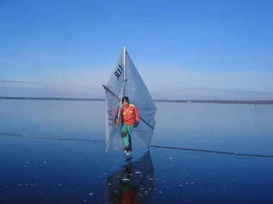
Söndagen den 30 januari
Dimma, 2-3 plusgrader och svag sydvästvind vid Västra Ringsjön. Isen våt och hård på ytan, kändes sprödare men fullt hållbar. Jag, Claes, syster Lisa och Daniel stod och snackade ett tag bland alla långfärdsåkande kollegor innan vi bar ner grejjorna till isen, kusin Gunnar som dessvärre inte hunnit få ordning på sina seglargrejjor anslöt lite senare. Vi började med att åka en rekrunda i dimman, samtidigt som molntrasorna lyfte kom en havsörn majestätiskt flygande på låg höjd. Mäktigt. När dimman lättade kom också vinden och efter ett kort rådslag där vi konstaterade att isen blivit sämre men inte SÅ mycket sämre åkte vi in och riggade. Vi seglade ut och satte bana och Daniel ringde brodern Erik om att nu var det race på gång varvid han genast släppte böckerna och tentaläsningen och åkte iväg. När vi satt banan var vinden sydvästlig och varierade under dagen mellan 3-6 m/s, ganska trixigt och byigt med frekventa vindvrid. Vi körde ett träningsvarv för att känna på banan (där jag lyckades klämma mig runt först runt kryssflaggen) innan första Guano-race:
Race 1
Claes hare, Daniel och jag startade uselt och Claes var först upp till kryssflaggan. Oförändrade positioner och bra drag på slörarna, men på andra kryssen lyckades jag hålla högre höjd och fart än Claes på sista kryssbogarna och gick ut på sista slörarna först. Claes tvåa, Daniel trea.
Nu hade Erik ankommit och anslöt pigg och fräsch för nästa race.
Race 2
Daniel hare. Erik startade bäst och positionerna skiftade under första kryssen, men Erik var i ledning ut på första slörarna 10-20 meter före mig. Andra kryssen följdes vi åt, men på sista styrbordsbogen upp mot lay-line till kryssmärket gick Erik plötsligt för lågt. När vi slog till babordsbogen upp mot kryssmärket hade jag som vanligt slagit lite för tidigt, men låg ändå före Erik. Jag lovade upp kring kryssmärket (en ”farlig” manöver som kan kosta all fart man behöver ”med sig ut på slören”) och hade turen att få en vindpust som gav mig fart nog att hålla undan in i mål. Daniel trea, Claes fyra.
Race 3
Daniel hare-igen! Jag gjorde en lite mindre sopig start än vanligt och kom fri ut på en babordsbog. När jag slog in i banan kunde jag se att jag låg bra till och nu hittade jag för en gångs skull lay-line (=rätt krysslije upp mot kryssmärket) och kom ut med ganska bra fart på slören medan vinden klenade ur lite och gjorde det svårt att ”komma ner” mot slör och lä märkena utan att tappa fart. Efter en som vanligt sopig upprundning fick jag till en liknande kryss och gick i mål som dagens obestridlige Guanohög. Erik tvåa, Daniel trea, Claes fyra.
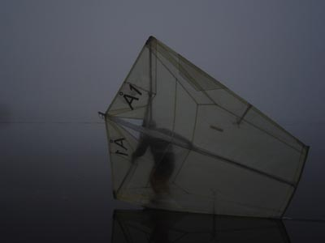
Som vanligt gick diskussionerna höga efter, mellan och ibland under varje race. Särskilt bröderna Nerhagen har ett mycket dynamiskt sätt att lufta sina åsikter om varandras prestationer vilket inte saknar underhållande poänger. Alla var nu duktigt slutkörda i ryggar och ben, dessutom hade plusgraderna ändrat karaktären på isen så vi beslutade att ta in banan och segla in för fika. Under denna gemytliga övning tätnade dimman igen (vilket vi knappast märkte) och det duggregnade lite lätt. Vi stack ut och seglade lite till och det plåtades lite bilder och filmsekvenser i den trolska dimman där man emellanåt helt saknade horisontreferenser och upplevde någon slags svävande känsla innan vi synnerligen nöjda packade ihop efter en härlig dag på isen. Under nästa vecka hade jag dubbel tur: för det första hade jag” forskningsvecka” vilket gör det möjligt att förlägga arbetet till icke dagsljus tid på dygnet. För det andra drabbades jag av hårddiskkrasch viket i princip omöjliggjorde arbete över huvudtaget. Följaktligen blev det isaktivitet även vardagar följande veckan.
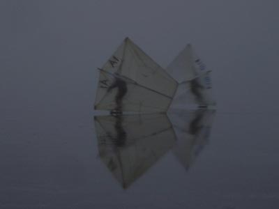
Måndagen den 31 januari
Mulet, 2-3 plusgrader och VNV vind 6-10 m/s på Västra Ringsjön. Jag stakade mig mödosamt ut på isen i motvinden och kunde konstatera att den kändes än mindre förtroendeingivande än dagen innan, ca 5-6 cm men ingen vidare kvalitet. Jag åkte till Krankesjön där den igår lite mjuka ytan nu stöpt ner till 7-8 cm tjock svart stenhård kärnis av bra kvalitet. Här var det fortfarande blåsigt, kanske 5-8 m/s men inte fullt så kraftig och byig vind. Först åkte jag ett rekvarv runt sjön utan att upptäcka några överraskningar jämfört vad jag sedan tidigare kände till om isläget. Jag riggade seglet och hade sportig segling över östra delen av sjön där jag körde ”imaginär bana” med tre slörben och kryssar tillbaka mellan bad platsen, norra och östra stranden och den öppna fågelvaken mitt på den östra delen av sjön i den nordvästliga vinden. Första kryssen bakom trädridån var ganska besvärligt byig med vindvrid vilket resulterade i ett par vurpor utan konsekvenser- man börjar lära sig att lyfta skrillorna och rulla av seglet så att det inte lyfts under en. Efterhand delades min segelarena av när en råk skruvade upp sig i den kraftiga vinden och öppnade upp sig så att den inte gick att passera mer än längst in vid stranden. Fast det var först ganska sent på eftermiddagen när jag ändå var ganska nöjd, packade ihop och for hemåt.
Nästa dag hade jag ”bara” förmiddagen ledig för segling…
Tisdagen den 1 februari
Ett par plusgrader efter nattfrost, VNV 4-6 m/s. Isytan hård, snabb och blank. Mycket trevlig segling på samma område som gårdagen där man fortfarande hade ett femitotal meter mellan råken och stranden att passera så att man fick ut ett ganska stort område att segla på ändå. Efter några sugande varv fikade jag i den goa solen varefter jag seglade ett tag till innan jag ”fick ge mig ” efter 3-4 timmars seglande.
Natten hade bjudit på 2-3 minusgrader enligt vägverkets mätstationer varför jag kollade upp Ringsjön igen nästa dag.
Onsdagen den 2 februari
Sol, ett par plusgrader och SV 1-2 m/s på Västra Ringsjön. Tjockleken verkade som tidigare, cirka 5-6 cm och först tyckte jag den verkade betryggande varför jag riggade. Vinden medgav ingen direkt hisnande segling men glidet var bra. Dock ändrade jag mig beträffande isen, knakningarna lät ganska spröda och ett stamp med skridskon ledde till att sprickor gick över hela sjön. Efter någon timmes försiktig segling i sydöstra hörnet avbröt jag och omgrupperade till Krankesjön.
Där var vinden lite mer märkbar, SV 2-3 m/s och gav ganska bra fart på alla bogar. Jag seglade i sjöns västra ände under ett par-tre timmar tills mina stackars plågade ryggmuskler satte stopp. Avslutade med en repa på östra delen av sjön, kryssade längs med den öppna råken och upp tillbaka till badplatsen där jag riggade ner. Träffade plastikkirurgen Wieslander som noga förhörde sig om iskvaliteten innan han gav sig ut på en tur.
Nattfrost även denna natt gjorde valet lätt avseende aktivitet nästa dag, men prognosen talade om vindstilla vilket visade sig stämma. Kusin Gunnar hade möjlighet att flexa på förmiddagen och vi bestämde om en tur på Börringesjön.
Torsdagen den 3 februari
Vindstilla, sol och någon plusgrad på Börringesjön. Isen blank, hård kärnis med måttligt med ytskravel och 6-7 cm tjock. Morgonyra gåsflockar väjde under ljudliga protester bort från sjön som vi diponerade själva medan en av SAS Boeing 737 låg och körde landningsvarv till närbelägna Sturup över våra huvuden. En härlig, knapp timmeslång tur runt sjön i solskenet gav mycket njutbar åkning, trevlig samvaro och intellektuell stimulans till att lösa en del gemensamma arbetsuppgifter.
Resten av veckan hade jag förhinder och dessutom kom mildluften åter med dimma, regn och fler plusgrader. Under en tågtur till Stockholm på Lördagen kunde jag se den omfattande skogsförödelsen som orkanen en månad tidigare ställt till med i norra Skåne och södra Småland. Marken helt täckt med granris som i kyrkan vid jultid och 3-4 meter höga trädstumpar med splittrade brottytor stack upp överallt. Fruktansvärt.
I Stockholm var tunnelbanan välbesökt av skrilleklädda grupper, så issituationen verkade god. Jag hade jour Söndagen, så det blev inga skrilleturer då. Kylan återkom med ett par minusgraders nattfrost natten till Måndagen och prognosen talade om kyla till och med Onsdagen med sol OCH kyla på tisdagen. Jag stack ut efter jobbet på Måndagseftermiddagen för att kolla hur Västra Ringsjön klarat sig och se huruvida det kanske kunde gå att segla lite isjakt där på Tisdagen?
Måndagen den 7 februari
Sol, klart, 2-3 minusgrader och sydväst 4-7 m/s vid Västra Ringsjön. Jag stack ut med långfärdsskrillor och pik i det vackra skymningsljuset och kunde konstatera 6-7 cm tjock is, jämn och fin yta MEN- ett par hundra meter från östra stranden gick sjön öppen! Iskanten sträckte sig i en båge från udden i sydvästra delen av sjön till spetsen på Lillönäset. Tydligen hade vinden brutit upp det mesta av sjön tidigare. Jättefin is för övrigt, men det hjälper ju inte om man vill segla isjakt och behöver stora isytor och helst jämnfrusen is över hela sjönså att man slipper ängsla sig över exakt var på sjön man befinner sig. Njutbar skrilletur i det djupnande mörkret medan svanar och gäss trumpetande landade i sjön för natten.
Jag och kusin Gunnar hade siktat lite smått på isjaktsegling Tisdag eftermiddag, men av detta blev nu intet när inga stora isytor fanns. Istället träffades vi för en skrilletur på Yddingen på Tisdag eftermiddag.
Tisdag den 8 februari
Sol, 2-3 minusgrader och sydost 6-8 m/s på Yddingen. Isen 7-8 cm tjock och mycket fin i ytan utom på de ställen det blåst ut löv och vass på isen. Vi åkte ett motursvarv med stor diskrepans mellan motvindsbenen och medvind då det gick väldigt lätt. I sydöstra hörnet finns några trånga kanaler i vassen som vi skrinnade runt några varv, kul. Vid barackerna längs östra stranden fanns en bred öppen råk som bildats under blidvädret, vi åkte ut på sjöytan där vi några hundra meter ut hittade ett ställe vi kunde korsa den på. Stora mängder Guano ute på sjön, det märks att Yddingen är populär bland gåsfågelpopulationen.
Under Onsdagen hade jag blivit kallad av luftfartsverket till utvärderingsmöte av sjuktransporterna från Thailand. Från flighten till Arlanda kunde jag se de till största delen öppna Ringsjöarna medan sjöarna i norra Skåne verkade ha fin is. Tyvärr däckades jag av influensa på natten, så jag kunde inte utnyttja de fina isarna mera den veckan. Under Lördagen kom ett kraftigt snöfall med kulingvindar in, det föll ett par decimeter ganska blöt snö och alla liggande isar täcktes. Någon minusgrad på nätterna och någon plusgrad på dagarna följde. På Onsdagen hade jag piggnat till och stack ut för att kolla hur det gick med stöpningen av snötäcket och eventuell ny isläggning.
Onsdag den 16 februari
Brutet, lågt molntäcke med sol och solglimtar, -1ºC och nordvind på 4-6 m/s på Västra Ringsjön. Hela Östra Ringsjön gick öppen utom Sätoftaviken. Stack ut med dubbelispik och skidor, som gled fint på skarsnön inne vid stranden. Längre ut på sjön hade snön stöpt ner nästan helt med en måttligt ojämn isyta med 1-2 cm snö på, som gradvis frättes ned av en diskret, böljande snöfykning. Här och var fanns ”stöphögar” där vatten trängt upp i snön som återfrusit likt stora maränger. Isen var 6-7 cm tjock och kändes trygg. Vid det tidigare öppna området syntes nu vidsträckta, återfrusna och brutna vallar efter nyisläggningar, större delen av sjön gick fortfarande öppen. Vinden var ganska jämn och trevlig så efter att ha rekat av ett område stort som en liten bana i sydöstra hörnet av sjön stack jag in och riggade skrilleseglet.
Jag seglade några ”imaginära banor” på avrekat område med riktigt bra fart på främst slörarna. Uppe vid ”kryssmärket” var isen ganska ojämn och en del av ”stöpmarängerna” innehöll snöormar, (sådana där som lössnöåkare hävdar är orsaken till oförklarliga vurpor) så dom försökte jag undvika. Glidet var nersatt och främst på kryssarna gick det ordentligt tungt vilket tar på ryggen. Efter en ”halvtidsfika” stack jag ut igen, nu hade vinden ökat en smula.
Jag upptäckte att isen var bäst längs med södra stranden, där ett löst, 3-4 cm tjockt snölager täckte den släta, hårda isen. Här hade jag ett kilometerlångt spår som låg perfekt för halvvindsbogar som jag utan ansträngning, med fullt 45º-igt häng seglade fram och tillbaka i riktig rackarfart medan solen tittade på. Ett par nyfikna flanörer kom promenerande, men jag var alltför upptagen för att stanna. Totalt slut i ryggen seglade jag in mot depån i härlig fart- och föll pladask i snön i vindhålet invid stranden. ”Sic Transit Gloria Mundi.” Inga skador på mer än självförtroendet, packade ihop kombinerat med fika efter totalt ungefär tre timmars segling.
Under natten sjönk temperaturerna ner till 4-5 minusgrader enligt vägverkets mätstationer. Nästa dag sken solen fantastiskt fint, men vinden hade mojnat ned en hel del. Jag var mycket sugen på att testa isjakten så jag lastade bilen och stack till Västra Ringsjön igen. Från bilen såg jag att Östra Ringsjön lagt sig under natten.
Torsdagen den 17 februari
Strålande sol, minus 2-3ºC och nordväst 2-3 m/s på Västra Ringsjön. Jag riggade isjakten, som konstigt nog inte hade några större skavanker sedan i fjor frånsett att styrbords sidovant snart behöver bytas. Just när jag var klar mojnade vinden ner förstås. Alf Porrenius, rutinerad långfärdsåkare i SIK kom förbi och vi pratade isläge en stund. Han åkte iväg längs sydstranden och jag sprang igång jakten. Vindpusten räckte till majestätisk segling kanske 200 meter, sedan vart det stopp. Väntade en stund och gjorde en del startförsök till, men vindpustarna var klena, kortvariga och infrekventa. Inte för att jag led några kval för det, solen värmde gott och det var bedövande vackert. Jag drog in jakten och Alf, som fått vända på tunn vrakis längs sydstranden kom tillbaka. Jag parkerade jakten, tog av en tröja och ombeväpnade till långfärdsgrillor och pik varefter jag och Alf stack iväg längs östra stranden.
Isen var tjockare än igår, men stöphögarna var nu rejält frusna och förbi inflödet var det bitvis ganska bedrövlig åkyta. Men längs stranden norr om inflödet låg ett fint pudersnölager ovanpå en riktigt njutbar is. Med ett par kortare pauser skrinnade vi förbi Blommeröds stuteri och ut mot Lillönäsets spets. Här mötte vi först ”översvämmad” och nyfrusen gammelis och längst ute vid näsets spets kom vi ut till nyisen. 2/3 av sjön låg med absolut svart och jämn is, men den var bara 1-2 cm tjock. Vi skrinnade tillbaka samma väg, och nu började en blyg väst-sydvästvind göra sig påmind. Väl tillbaka tog vi en fika på isen alltmedan vinden stabiliserade sig kring väst. När Alf åkte iväg tog jag på den tjocka tröjan under jackan och stack ut med jakten igen.
Förbluffad kunde jag konstatera att den fortfarande ganska blygsamma vinden nu gav bra fart och riktig bananböj på masten. Is kristaller stänkte från styrmeden upp i ansiktet och jag var glad för mina nya klara skyddsglasögon. Jag drog ett par varv utanför Gamla Boo, men vindriktiningen liksom inbjöd att sticka bort mot Blommeröd så jag brände iväg på en babordsslör.
Den dåliga isen vid inflödet skakade om mig och jakten rejält, men plankbultarna höll. Isen var jämnare borta vid Blommeröd, men tyvärr mojnade vinden ner lite också. Under de pustar som följde experimenterade jag med att sätta digitalkameran på jakten med ett stativ med velcrorem, men det var för skakigt för att funka denna dagen i alla fall. Vinden kom igen och jag fick många fina repor i bra fart i den kanske 3 m/s starka vinden där jag tog en lång härlig videosekvens också.
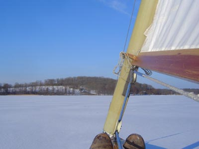
Efter ytterligare en ”stiltjepaus” drog vinden igen och förtrogen med signalerna seglade jag hemåt. På hemvägen kunde jag känna hur det klenade ur och jag höll på att få stopp i stöphögarna halvvägs, men vindpusten bar hela vägen hem. När nu vinden mojnat ur igen var det riktigt varmt och skönt att rigga ner- se där, inget ont som inte har något gott med sig!
Efterföljande Lördag reste jag till Washington D.C. på konferens via en starkt försenad flight från Frankfurt på grund av snöoväder. Följande vecka vart det omväxlande milt och kallgrader + snö på hemmaplan, med ett enligt uppgift rejält snöoväder på Onsdagen. I Washington var det liknande temperaturer och måsarna stod på nattgammal is i ”Glass Pond” nedanför Capitolium, ”-Look, they´re standing on the water” sade en häpen överviktig amerikansk turist. Jag blev uppriktigt ledsen å hennes sida, tänk att inte ens känna till natur is och hur kul man kan ha på den. Vid min hemresa Torsdagen den 24/2 var det snöoväder även i Washington, men flyget blev ”bara” 2 timmar försenat. Jag fick med mig en envis förkylning hem förutom jet-lag varför jag tog det lugnt Fredag-Lördag trots de härliga minusgraderna. Isar fanns men var snötäckta och långfärdsåkarna hade inte utlyst några turer. På Söndagen var det soligt vackert väder och isspanarna i klubben hade upptäckt användbar is på Fjällfotasjön. Jag lät mig övertalas till ”en liten skrilletur” av kusin Gunnar.
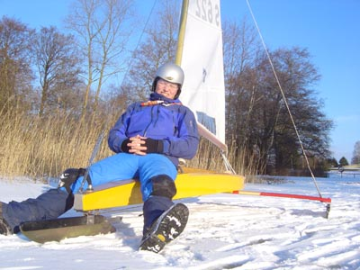
Söndagen den 27 februari
Sol, -3ºC och NV 8-9 m/s på Fjällfotasjön. Ganska mycket folk och två ledarledda SIK-turgrupper hade hörsammat dagens tips från telefonsvararen. Isen tjock med halvt nedstöpt snö, en del partier med mjuk stöpyta medan man längs kanterna kunde hitta långa sträckor med hård yta och endast måttlig skravlighet. Jag satte på långfärdsgrillorna och åkte upp mot lovartstranden , satte mig i lä och njöt av solvärmen och en kopp varmchoklad. Efter en liten stund kom kusin Gunnar, Katrin och en ovanligt upprymd hunden Signe och anslöt, fyllda med intryck från den nyss avnjutna Franska skidsemestern. Vi åkte ett ganska makligt varv runt sjön som var särskilt njutbart i medvinden.
Veckan fortsatte med fortsatt vinterväder med ett par tre minusgrader, kallare under nätterna. Under Måndagen och Tisdagen föll cirka 2 decimeter snö. Hela veckan fortsatte kylan och mot slutet av veckan kunde nattemperaturerna nå ner mot 20 minusgrader- inte illa för Skånska förhållanden! Jag stack ut på Fredagseftermiddagen för att kolla hur stöpningen gått på Ringsjöarna.
Fredagen den 4 Mars
-3ºC, vindstilla och klart med måttlig molnighet på Östra Ringsjön. Isen hård och 10-15 cm tjock. Vindpackade snödrev med fläckar av blank, hård måttligt skravlig is. Tog på långfärdsskrillorna och stack utåt sjön. Det gick att åka mellan snöfläckarna om man ”promenerade” med skrillorna genom de tjockaste snödreven. En del uppblötta partier tydde på vatten under snön och ibland överis- vilket jag märkte när jag stod på näsan i ett blött parti samtidigt som jag försökte svara på Leif Wessels mobiltelefonsamtal! Längre ut på sjön var det övervägande blankis med knappt några snödrev utan istället skrovliga ”stöpis-maränger” som man fick staka sig över. Kanske inte super is för skrilleåkning eller skrillesegling men kanske något för isjakten? Njutbar åkning tillbaka till bilen i en vacker solnedgång.
Nästa dag meddelade kusin Gunnar att ganska stora blanka partier frusit vid Höllviken, så vi bestämde att åka en skrillerunda där. Jag kom lite senare ner dit, så kusinen med sällskap hade redan åkt ut när jag kom ned.
Lördagen den 5 Mars
-2ºC, NO 6 m/s och sol vid Höllviken. Mjuk, skravlig saltis 1-200 meter närmast stranden. När jag äntligen kom ut till ”fin isen” längre ut högg jag ett par slag med piken vilket kändes bra. Jätteskönt att sträcka ut med ett par rejäla skär- när isen under mig bara liksom mjuknade- PLUMS! Det var cirka en meter till bottnen, så jag bottnade, men fick vada igenom isen ett par meter innan den bar mig igen. Satte på skrillorna som hoppat av och tog ut kameran och mobiltelefonen ur fickorna. Båda hade klarat sig- tur man har vattentäta blixtlås i jackan! Stakade tillbaka till bilen i medvind, bytte till torra kläder och körde nesligen hemåt för att torka grejjorna.
Jag fick sedan telefonbesked av kusinen att det hade varit tunn is lite överallt, så tyvärr verkade isen inte hunnit bli tjock nog. Natten bjöd på ner mot 10 minusgrader och prognosen lovade sol och nordlig svag till måttlig vind. Nästan tredje veckan med uttalat vinterväder i Skåne! Jag åkte till Östra Ringsjön för att testa isjakten.
Söndagen den 6 Mars
-3ºC och gnistrande solsken på Östra Ringsjön. Vinden var nordlig och svag men jag chansade på att det skulle blåsa längre ut på sjön och riggade isjakten. Solen värmde skönt och det var riktigt svettigt att släpa ut jakten mot den bättre isen längre ut. Därute hittade jag som tidigare kilometerlånga stråk med blankis som låg i riktning ”04/22” (som man anger en landningsbana orienterad efter kompassrosens 40 grader- 220 grader). Emellanåt kom det vindpustar uppmot 3 m/s från NV och då blev det riktigt bra fart på jakten. Ofta vart det vindstilla eller vind från NNO och då räckte inte trycket i riggen till för att hålla fart genom ”stöpismarängerna” som bromsade en hel del.
Syster Lisa anslöt för skrilleåkning och jag träffade ett par andra grupper om 4-5 personer som åkte turer. Leif Wessel ringde och rapporterade att det seglades med kitebuggys vid Skanörs soptipp (på skravelisen inne vid stranden). De brukar att ha svårt med att få grepp för medarna och kanske mjukare is är en fördel för dem. Jacob med sin isjakt i Höllviken ringde och berättade att lagunen vid Ljunghusens golfklubb hade blank, jämn och tjock is. Jag seglade bortåt tre timmar varefter vinden klenade ur och jag släpade in jakten och hade en mycket njutbar nedriggningsfika med Lisa i det varma solskenet under det att ett antal intresserade skridskoåkare stannade och språkade en stund, till exempel plastik kirurgen Jan Wieslander.
När jag packat bilen körde jag en maklig tur bortåt Vombsjön, där skridskoåkare kunde ses ute på sjön och jag träffade på ett glatt par (SIK-medlemmar ) med en egenbyggd, modifierad tvåsitsig Isabellajakt. De hade möjligen lite bättre is än på Östra Ringsjön, men de hade inte haft någon vind alls. Jag svängde ner om Krankesjön på hemvägen, där var väl isytan liknande och det fanns ganska gott om hockeyspelande skridskoåkare och dessutom stod en ganska stadig VNV vind på 2-4 m/s. Jag riggade skrille seglet på 10 minuter och fick en timmes trevlig segling i skymningen på ett 200 meter långt stråk med blankis som låg orienterat ungefär i halvvind. Jag var ganska nöjd när jag packade ihop!
Vädret fortsatte vara kallt med 4-5 minusgrader på nätterna och någon plusgrad på dagen och uppehåll. På Tisdagen flög jag till Arlanda och kunde studera Ringsjöarna som stöpt lite sedan helgen men fortfarande hade en hel del snöfläckar som lyste vita mot den bara, svarta isen. Västra Ringsjön såg ut att ha en del intressanta, långa stråk med svartis ute på den nyare isen just väster om båglinjen mellan Lillönäset och södra stranden. En frusen isspricka verkade vara en möjlig väg ut till svartisen….Jag gav mig ut för att kolla på Torsdagseftermiddagen!
Torsdagen den 10 mars
Några plusgrader, mulet och VSV 8-10 m/s på Västra Ringsjön. Isen 10-15 cm tjock och med 5-6 cm faststöpt, sträv snö på ytan. Jag promenerade ut från gamla Boo där spår visade att man i helgen roat sig med att köra bil och MC på isen. Jag hittade issprickan och skrinnade ut mot sjöns mitt. Tyvärr var isen mycket knagglig och stora områden var vallar av återfrusen, uppbruten is. Ute på sjöns yta var det gott om stöpsnödrivor med knagglig is däremellan. Längs med issprickan hittade jag några hundra meter med jämn fin is där skridskoåkningen var riktigt njutbar. Men en del mer stöpning krävdes för att få ut seglingsbara ytor.
Kusin Gunnar rapporterade att finisen vid Höllviken nu höll för åkning och fortfarande var jämn.Vi stämde träff där Lördag morgon, trots mildväder.
Lördagen den 12 Mars
4 plusgrader, sol och ONO 6-7 m/s vid Höllviken. Från kustvägen kunde jag se finisen som just på grund av frånlandsvinden släppt från land och nu var 5-600 meter ute till havs, på väg mot Danmark…. Lika illa var det med isen i lagunen som var landlös, svag och murken. Utanför Skanörs soptipp gjorde vi ett nytt tappert försök på uppmjukad stöpis som var bedrövlig att skrinna på- men det blev ju några skridskoskär förstås. Det fick bli en joggingtur längs Falsterbo stranden istället.
Söndagen ägnades åt andra aktiviteter och resten av veckan var mild dagtid medan nätterna gav några minusgrader. På fredagseftermiddagen stack jag till Ringsjöarna mest av nyfikenhet för att kolla in om det fortfarande fanns is och isåfall om ytan stöpt ner fint.
Fredagen den 18 mars
Ett par plusgrader, vindstilla och sol vid Ringsjöarna. Isen hållbar vid Östra Ringsjön, som jag som hastigast var ute på. Tog på skrillorna på Västra Ringsjön där isen var gropig men jämnare längre ut, drygt decimetern tjock (orkade inte hugga hål) och hyfsad kvalitet med hård yta. Åkte en njutbar runda i skymningen och rapporterade på svararen om den förvånansvärt fina isen.
Trots allt var nog isytan bättre på Östra Ringsjön, så jag valde den för Lördagsövningarna. Det hade varit fin nattfrost enligt vägverkets mätare, ner mot -6ºC.
Lördagen den 19 mars
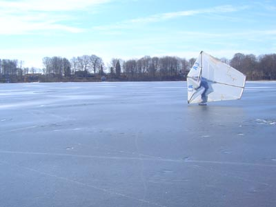
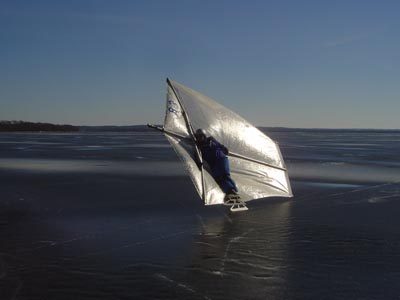
Strålande sol, minusgrader på morgonen som övergick i plusgrader frampå förmiddagen, ONO 4-6 m/s på Östra Ringsjön vid Ringsjöfisk. Jag kom dit vid halv 9 tiden och åkte en rekrunda. Ställvis knagglig men annars hård och mestadels jämn och fin is, dryga decimetern tjock. Enstaka nyfrusna slukhål och råken från Bosjökloster mot sydstranden gick öppen till största delen. Området innanför råken var tillräckligt stort för segling så jag rekade av ytan ganska noggrant varefter jag riggade seglet. När jag kom ut infriades mina förväntningar- vinden var tillräcklig för bra fart och dessutom var den jämn och sympatisk, i alla fall om man höll en smula avstånd till lovartsstränderna.
Efter ett tags segling där jag mest körde kryssar och slörar och även avreagerat mig på lite rykande halvvindsbogar kom systern Elisabet som prompt utrustades med kamera och förevigade lite av dagens segling. När systerns fingrar var näst intill förfrusna filmade jag lite videosnuttar med kameran på seglet- kul resultat som vanligt!
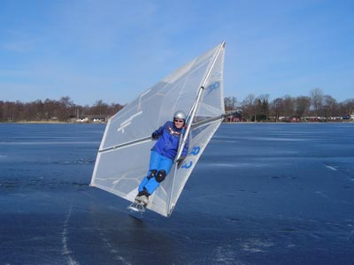
Söndagen den 20 mars
Fortsatt strålande solsken, strax över 0-graders strecket och vindstilla på Västra Ringsjön. Ett stort antal långfärdsåkare från skrilleklubben samlades för turåkning och jag hängde på en ”grupp 3”, medelstressigt tempo runt sjön.Frans Liljedahl och jag åkte mest och snackade isjakt. Stundtals mycket knagglig is, mest i östra delen medan västra delen av sjön bjöd på riktigt jämn och njutbar is. Lite tunt var det förbi inflödet, där en havsörn majestätiskt kom flygande. Vi fikade på stranden efter fullbordat varv varefter långfärdsåkarna stack vidare för att beskrilla Östra Ringsjön. Jag och syrran som just ankommit åkte lite till på Västra och filmade lite med kameran. Tyvärr fortsatt absolut vindstilla så någon segling vart det inte, men en mycket fin dag på isen. Jag åkte vidare till en kompis, medan syster Lisa åkte vidare med nyjusterade skrillor och ramlade och stukade handen . Röntgen visade dock ingen säker fraktur…
Följande helg åktes det på Immeln och sjösystemet därikring, men själv var jag ganska nöjd med säsongen och packade undan grejjorna efter en ovanligt haverifri säsong!
Jörgen Åstrand Å 3
Höstens ändlösa lågtryckspassager varade över julhelgen och snötillgången på ex. Hardangervidda i Syd Norge var ovanligt dålig på grund av mildvädret. Under mellandagarna lyckades dock ett högtryck etablera sig och nyårsnatten gav härlig frost även i SydSverige. Flygspaning med Piper Cub SE-AWL under Nyårsdagen visade att Krankesjön lagt sig och rapporter från jordytan fastlade istjockleken till ca. 2 cm. Under Fredagen den 2/1 åktes en del turer av modiga personer och de första plurrningarna noterades. Efter -5°C under natten åkte undertecknad ut på Lördagen med vissa förväntningar…
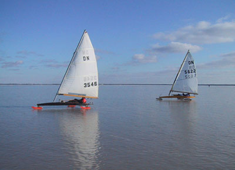
Lördagen den 3/1 2004
-3°C, sol och vindstilla på Krankesjön. Claes och 20-30 andra åkare redan där. Hård, jämn o snöfri yta, ca. 5-6 cm, men vid rekning kunde vi konstatera flera mycket diskreta tunna partier, sannolikt f.d. fågelvakar men utan fågelspillning o ljus randzon som brukar skvallra om senare tillfrysning. Vi märkte ut de svaga partier vi hittade med kvistar och åkte sedan turer, fikade o umgicks med alla bekanta på isen i väntan på vind. Som tyvärr uteblev. Ett stort antal plurrningar ( minst 5) noterades, bland annat Johan f.d Nilsson numera Barth som tittat åt ett annat håll o åkt rakt ut i en tunn vak av ovan omnämnt slag. Man kunde dock ta sig runt sjön längs med kanten.
Fortsatt kyla gjorde det helt omöjligt att avstå skrillor under Söndagen.
Söndagen den 4/1
Sol, -4°C och SSO 3-5 m/s på Krankesjön: kanonförhållanden!! Sen ankomst och säkert drygt 100 åkare på isen med barn, hundar, hockeyklubbor, fika etc. Efter lite social samvaro med alla bekanta man träffade på isen riggning och ut till Claes, Pontus och Rickard Holmdahl med sitt splitternya Brandtsegel som redan var igång ute på isen. Mycket bra åkyta och jämn fin vind så det vart bra fart på alla bogar. Mycket folk att hålla undan för och dessutom tidigare nämnda med pinnar utmärkta svagare partier, så att sätta bana var det liksom inte läge för. Segling med vederbörliga fikapauser under 3-4 timmar.
Den välsignade kylan låg kvar trots meteorologernas elaka förtal med temperaturer ner mot
-10°C. Pilotkompisarna Bengt och Micke rapporterade att Västra Ringsjön låg helt och Östra Ringsjön med, fast med stora öppna partier mitt på. Jag hann ut en rekrunda på sena eftermiddagen.
Måndagen den 5/1
-5°C, klart och vindstilla på Västra Ringsjön. Isen 6 cm tjock, bra kärnis med obetydligt ytskravel och lite knottror. Inga råkar synliga i skymningsljuset o fullmånen, mycket trevlig skrilletur ut mot mitten av sjön och hemåt i det tilltagande kvällsmörkret.
Natten bjöd på –5-8°C och Tisdagen var ledig dag såsom sig bör trettondedagsafton. Prognosen talade för mycket vind och snöfall ur en varmfront framåt eftermiddagen. Jag hade redan utlyst isjaktsegling på Västra Ringsjön när jourhavande SydNyttreporter och långfärdsskrinnande klubbmedlemmen Joakim Lindhé ringde och undrade om de kunde få göra ett inslag om issegling eftersom ”det inte hänt så mycket i världen idag”…..
Tisdagen den 7/1
Mulet, -2°C och byig SO vind på 6-12 m/s på Västra Ringsjön. Isen nu ca 7-8 cm tjock och fortfarande mycket fin i ytan. Jag riggade DN-jakten men upptäckte till min stora förtrytelse att jag glömt min ”stormsegel-lase” hemma- så kan det gå när man inte har ett genomtänkt system för att packa prylarna! Hans Gustavsson riggade sitt skrillesegel och tillsammans körde vi några provrepor. Mycket byig vind bakom trädridån vid Gamla Boo men ute på sjön blåste det alldeles för mycket, besvärliga seglingsförhållanden således. Så fort vindbyarna tryckte till fick jag medsläpp direkt, mycket svårt att hinna ”ducka med skotet” + att det ju var ett tag sedan jag slipade medarna, förstås….
Joakim dök upp med fotograf och monterade på en kamera på jaktens fördäck med Gaffa-tape. När jag skakade fram med breddsladdar och måttligt inslag av kontroll ute på isen tyckte jag det var rätt skönt att vara lyckligt omedveten om hur mycket den där kameran som satt och vippade på fördäck kostade. Efter en runda till med kameran riktad in i cockpit blev det intervju med Joakim (”-Hur är isläget i Skåne just nu?” etc.) som rutinerat guidade förbi de alltför präktiga uttalandena man annars kanske hemfallit till. Efter ytterligare ett par repor där Joakim skrinnade runt med kameran medan jag for fram och tillbaka runt ikring (fortfarande med måttligt inslag av kontroll…) tackade reportageteamet och åkte hem för att sätta sig vid klippbordet.
Jag och Hans tog en välbehövlig fika och värmde upp oss lite med diverse varma drycker. En skrinnande Karlskrona kollega kom förbi och tyckte att vinden mojnat något. Jag tog en repa bort mot Blommerödsstuteriet där isen (som så ofta) var alldeles jämn och kunde konstatera att byigheten i alla fall inte avtagit, mycket besvärliga sladdar på den blanka isen. Det gick trots allt att segla om man höll sig till hård kryss och slörar, där man kan spilla vind respektive ”smita undan” byarna med acceleration. Pilotkompisen Bengt dök upp och tog ett par rundor med bra fart varefter han kom in alldeles blå i synen: ”-Ja-ag ä-ä-är n-o-o-g inte-e rikti-igt klä-ä-ädd fö-ör det hä-ää-är….”
När Bengt flytt in i sin uppvärmda bil stack jag ut igen och körde tills det började mörkna- och då var även jag ganska frusen i den obarmhärtiga vinden trots dubbla långfilsingar, ansiktsmask o raggsockor! Jag hann precis rigga ner och påbörja hemfärden innan snön började falla.
Joakim med kollegor klippte till ett mycket prydligt inslag som under 2 min sändes på Rapport kl 19.30 tisdag kväll samt kortare inslag som gick på Aktuellt 18.00 och 21.00. Bra PR för isseglingen- men visst är det konstigt att det fortfarande räknas som en märklig nyhet att man kan segla på is i Skåne!!!
Det föll några cm snö under natten till onsdagen men samtidigt steg temperaturerna över nollgraders-strecket och rapporter från Ringsjön på Onsdagen talade om nästan nerstöpt snötäcke. Vi utlyste segling på Västra Ringsjön på Lördagen och hade turen att det blev nattfrost Fredagsnatten.
Lördagen den 10/1
-2°C, högt, tunt molntäcke med enstaka hål och jämn fin ONO vind på 4-5 m/s på Västra Ringsjön. Isen 7-8 cm tjock och slät, hård med enstaka mindre ojämna partier efter snöstöpta drivor. Daniel, Erik och Claes hade seglat ett tag (t.ex. gjort överljudspassage på en brant slör i formation förbi långfärdsskrinnarnas kolonn…) när jag kom. Riktiga drömförhållanden med bra tryck i vinden, finfin is och inga otäcka vindbyar någonstans på sjön, bara att hänga fullt in i seglet. Efter att ha seglat av den värsta abstinensen tog vi en fika, vilade rygg o ben och åkte sedan ut och satte bana en bra bit utanför Blommerödsstuteriet. Efter ett provvarv där kusin Gunnar anslöt med ditresta publiken Signe (blandras Boxer/springer spaniel) körde vi ett par 2-varvs Guano Cup-rejs med Daniel som hare. Här följer ett som vanligt obetydligt vinklat referat:
Rejs 1: Slörflaggan till höger om kryssriktningen. Rostig start där alla hamnade bakom haren Daniel efter slö skrilleåkning. Jag valde att slå ut på vänsterkanten och fick bra höjd på den bogen. Jag ”förseglade” mig en del (=gick för långt bortom "layline”, dvs. krysslinjen upp till lovartsflaggen) och både Daniel och Erik slog innan mig runt märket. Eftersom jag gick lägre på sista kryssbenet fick jag ordentlig fart med mig ut på slören och gick om Erik på första slörbenet och gippade innanför Daniel som jag (fortfarande antagligen på viss ”överfart”) passerade på andra slörbenet. Även om jag rundade dåligt (=gick för lågt i vind runt läflaggan) fick jag bra höjd på kryssbenen på vänsterkanten och kom i mål innan Erik, som klådde Daniel på andra kryssen. Claes kom 4:a, Gunnar 5:a. Kul och tajt rejs där alla var ute på sista slörarna när jag gick i mål.
Rejs 2: Daniel hare igen. Ny sengångarstart av mig med sirap i skrillorna, medan Erik, Gunnar o Claes hade bättre klipp i skären. Skiftande position under kryssen, jag hittade ”layline” på vänsterkanten hyfsat men Erik rundade upp 10-15 m före mig. På första slörbenet låg vi i exakt samma fart, jag 5 m bakom och lite högre i vind. I gippen lyckades jag komma på insidan och ”segade” mig långsamt förbi. Efter en hyfsad lärundning höll jag bra höjd och fart och gick ut på sista slörarna först. 2:a kom Erik medan Gunnar på sista slören pressade sig förbi Daniel som hade begynnande mjölksyrecoma med Claes tätt efter.
Under sista slörarna mojnade vinden ner till blygsamma 3 m/s. Vi var lite möra i ben och rygg lite till mans och efter en foto + film session tog vi in banan. Vinden lade sig ännu mer och det började mörkna så smått när vi avbröt dagen. Alla rörande överens om att det var längesedan man seglat i så ideala förhållanden. Det är kul att rejsa!
Prognosen talade om hård ostlig vind och regn under Söndagen. Gunnar, Claes och Daniel hade förhinder, jag utlyste ”seglingsförsök” på Västra Ringsjön på seglarsvararen och stack ut framåt lunch med isjakten på taket.
Söndagen den11/1
+-0°C, mulet o dis/dimma, uppehållsväder samt ostlig vind om ca. 8-12 m/s på Västra Ringsjön. Malin, Pablo och Lotta hade åkt en skrillerunda när jag kom och de rapporterade fortfarande fin is men byig vind som knappast lämpade sig för skrillesegling. En kille med hembyggd isjakt baserad på en aluminiumstege (som jag träffade förra året på Östra Ringsjön) var ute och körde. Jag riggade DN-jakten med ”storm-lasen” (ca 2-3 m² egenhändigt omsytt gammalt surfsegel) och stack ut. Det var faktiskt riktigt kontrollerbart i den byiga, hårda vinden som det lilla seglet ”svalde undan” utan några större tendenser till sladd eller trimförändringar. Det verkade som jag hade lyckats ”sy ur” den mesta buken ur seglet som blivit betydligt planare och släppte ut luften ganska bra, men jag hade mycket fladder i speciellt toppen så det var kanske ingen imponerade precision i den nydesignade formen på seglet…
Höjdtagningsförmågan var kanske inte heller direkt epokgörande, kanske 50-60° men jag var ändå jättenöjd eftersom huvudsyftet med seglet var att kunna utnyttja dagar då det egentligen blåser för mycket för att segla. Att få upp farten var liksom överhuvudtaget inga problem och vindpressen i den lilla näsduken var imponerande ute på sjön när jag skenade iväg mot Blommerödsnäset i diset. Fortfarande hade jag inga direkta problem med medsläpp men i den tjutande fartvinden blev man ganska nerkyld efter några repor, så det fick bli några depå besök med värmande drycker. Kompisen med hemmabygget hade lite problem med vanthaverier och att när hans segel böjde ut mot lä blev vindpressen i seglet (som alltså var avsevärd) delvis nedåtriktad så att stegen trycktes nedåt och tog i isen. Jag körde ett antal repor till och försökte klocka tiden från Blommerödsstuteriet till Gamla Boo, lite drygt 2 minuter vilket skulle ge en uppskattad medelfart på 90 km/t (och sannolikt betydligt mer i vindbyarna), en uppgift som jag inte ser någon anledning att betvivla… Tyvärr hade jag glömt min GPS, som annars ger ganska exakta fartuppgifter.
Jag var ganska nerkyld när jag trött men utomordentligt nöjd riggade ner medan det började dugga lätt. Precis när jag svängde ut från parkeringen på väg hem till ett varmt bad övergick duggandet i ihållande regn. Får man ha så mycket flyt?
Under veckan fortsatte mildvädret men någon minusgrad var det de flesta nätterna. Tisdagskvällen föll cirka 10 cm snö i Lundatrakten varav mycket hann smälta undan innan temperaturerna sjönk mer allmänt under Onsdagskvällen. På fredagen var det dock blidväder men prognosen talade om kyla i helgen. En orolig tävlingsansvarig för DN-seglarna ringde och kollade om vi hade någon is i Skåne eftersom VM för DN-jakter på Balatonsjön i Ungern var hotat av värmen. Jag svarade uppriktigt att det finns is men jag vet inte hur ytan är eller hur tjock den är. ”-Nja, du vet, den bör nog vara någon decimeter tjock. Det brukar komma 250 jakter på VM…” Nyfiken på iskvaliteten stack jag ut på en rekrunda trots lite tjock hals.
Fredagen den 16/1
+3° C, ostvind 6-8 m/s och ihållande snöblandat regn på Västra Ringsjön. 7-8 cm prima kärnis i botten, men ett par cm stöplager överst som skrillorna skar ned i. Åkte trots detta en längre rekrunda bort mot Blommeröd, där den klassiska sprickan/råken från inflödet hade ett ovanligt nordligt förlopp. På återvägen hittade jag ganska njutbar is längs stranden vid Gamla Boo där jag betittade de fina villorna med sjötomter, små hamnar och allt
På Lördagen var det fortfarande ett par plusgrader och mitt halsonda hade gett sig upp en tur i bihålorna. Men inte kunde jag avhålla mig en tur till Ringsjön trots det… DN-seglarna hördes inte av, de hittade förmodligen säkrare is på annat håll.
Lördagen den 17/1
+2°C, mulet, O 5-7 m/s på Västra Ringsjön. Isen oförändrat tjock, men mycket tråkig överis som försämrades under dagen när temperaturen gradvis sjönk. Riggade skrilleseglet, stack ut och kunde konstatera att det faktiskt gick att segla hyfsat i alla fall på kryss i den ganska jämna vinden, men slör var inte särskilt kul, skrillorna tenderade att hugga fast eller skära ut i hög fart med betydande balansproblem som följd. Stack in redan efter en timme- innan någon vurpa inträffat….
Under kvällen sjönk temperaturerna rejält och det var ca. -7°C under natten. Jag spände upp skrillebindningen på kvällen och stoppade i mig penicillin mot bihålorna, varför jag var mycket piggare dagen efter. Inbitne isjaktseglaren och ansvarige för ”Nya Karlskronavarvet (de bygger 10(!) klass 3 jakter…)” Bengt Ottosson ringde och undrade om det fanns is och det fanns det ju! Vi utlyste seglingar på Västra Ringsjön till Söndagen.
Söndagen den 18/1
Kanondag, -2° C, sol och V 0-1 m/s på Västra Ringsjön. Otroligt mycket folk, säkert 40 parkerade bilar v badplatsen. Isen decimetertjock, alldeles jämn med enstaka partier av ”knottrighet”. Eftersom det var nästan vindstilla åkte jag, Claes och syrran Lisa först en rekrunda med långfärdsskrillor och betittade råken. Precis när vi rundade udden på väg tillbaka började västvinden tillta och vi riggade raskt samtidigt som Malin, kusin Gunnar (med hustru Katrin + hunden Signe) och Hans Gustavsson ankom. Daniel rapporterade på mobilen att han och Erik hittat svartis på Västersjön, så de satsade på att vinden skulle komma även där. Så småningom hade vi V 2-3 m/s att leka med och vi satte en tvåvarvsbana (med slören åt höger) för att rejsa lite.
Rejs 1: Gunnar hare, jämt första kryssbenet men efter första stagvändningen gick Malin, Claes o Gunnar lite lågt och tappade mark, varför jag rundade först och kunde hålla undan förbi målflaggen. Vinden klenade ur andra varvet och Claes kunde retligt passera Malin på sista slören. Gunnar 4, Hans 5.
Rejs 2: Malin hare, mycket klen vind. Jämnt på första kryssen, Claes passerade mig i lovart så jag var tvingad att slå undan hans ”skitvind”. Malin som går särskilt fort i lättvind rundade först. Den lilla vind som fanns vred på syd så att första slörbenet blev brant och knepigt att hålla fart på. Jag lyckades få lite mer fart med ut på slören, gick högre och kunde passera Malin innan slörflaggen. Vid lämärket tilltog vinden igen och det vart bättre fart runt andra varvet. Malin 2:a, Claes 3:a och Gunnar tidigt i depå liksom Hans.
Vid fikapausen hade Bengt ankommit med tre kompisar, Bengt riggade sin gamla klass 3 jakt i trä och kompisarna riggade Isabellajakter. En ”inhemsk” isabellaliknande konstruktion hade också riggat, så det var en imponerande syn med 5 jakter riggade. Anders Westman som lett en tur konfererade lite om en fraktur de haft under turen, den skadade hade satts i en taxi vid pumpstationen vid Stehag för vidarebefordran till Lund. Kusin Gunnars bror Lars ankom med familj och filmade lite efter fikat, men nu var vinden lite väl klen för rejs så vi tog in banan. Tyvärr hade jakterna svårt att få fart i den lätta vinden medan vi skrilleseglare i alla fall hade styrfart och lite till. Vi riggade ner mycket nöjda medan kusin Gunnar som alltid skall vara värst stack ut på en motionstur på långfärdsskrillor med hustrun Katrin.
På kvällen ringde Bengt och berättade att vinden kom när vi åkte hem så de hade fått någon timmes fin segling i skymningsljuset och riggat ner i ficklampssken! Tyvärr föll en del snö under nattens frontpassage. Isläget var nu gott och jag hade turen att ha en ledig vecka! Rustad med allehanda leksaker åkte jag ut nästa dag. Från bilen kunde jag konstatera att Östra Ringsjön gått upp igen, den hade fått tunn is under helgen men nu blåste det lite mer…
Måndagen den 19/1
Strålande sol samt en del tunna låga moln, +2°C och VNV 3-6 m/s på Västra Ringsjön. Isen tjock men med 5 cm ännu icke faststöpt blötsnö ovanpå. Jag riggade DN-jakten med stora seglet och gav mig ut. Det löpte på ganska lätt trots snön, även om jag körde lite försiktigt för att inte fresta grejjorna för mycket i det lite trögare föret. Det hade trängt upp lite vatten kring issprickorna, men de var ju inte öppna igår så jag passerade första issprickan frejdigt. PLASK-SLADASK lät det och där åkte jag dyblöt vidare med 10 kg snöslask i knäet. Isen var jämn under, med genom osmos eller något ditåt hade snön dragit åt sig en massa vatten och ”rest sig” så att styrmedens kant kastade alltihopa rakt upp i synen på mig. Mysigt. Närmsta timmen ägnade jag åt att reka mig fram mellan slask-härdarna och upptäckte att bäst var det närmast Gamla Boo. Jag värmde mig med en fika, fotodokumenterade och sedan hade jag ett par timmars bra segling i jämn, fin vind innan mina trots allt lite blöta kläder gjorde att jag fick ge mig när temperaturen började krypa neråt nollgraders-strecket igen.
Temperaturen låg kvar under noll och eftersom prognosen lovade mer vind passade jag på att segla även Tisdagen.
Tisdagen den 20/1
-2°C, sol med tunna, låga moln som under gårdagen och NNV 5-8 m/s på Västra Ringsjön. Riggade DN-jakten med storsegel igen men snön hade stöpt fast och bromsade rejält, det var som ett gigantiskt bromsbelägg låg i botten mot isen. Nu hade man istället nytta av allt vatten som trängt upp invid issprickorna och sedan frusit till blankis. De flesta sprickor låg i perfekt halvvindsriktning och jag hittade faktiskt ett spår som gick hela vägen tvärs över sjön på halvvind! Stora områden var helt blanka och upp till 50 m breda, andra var mer fläckar som skvallrade om att det bromsande snötäcket var tunnare. Mycket kul segling där det ställdes höga krav på kurshållning och att undvika sladd (=jobba mycket med skotet för att undvika medsläpp). Efter fikapaus körde jag ett antal repor till, en av dem förevigade jag på en videosnutt med digitalkameran. Ordentlig fartkänsla när snöfläckarna svischar förbi och jag kan lova att det är ännu mer berusande live när vinden tjuter i öronen på en! Det skenade på ordentligt speciellt på de blanka ispartierna om man lyckades undvika sladd. Utmanande trixigt att genomföra vändningen i det bromsande snötäcket vid västra änden utan att tappa farten och stanna innan man åter kom ut på blankissträngen. Så småningom började det mörkna och mojna och jag frös ordentligt om främst tårna- skorna sticker upp i fartvinden. Sista 200 metrarna in till depån fick jag gå eftersom den lätta vinden som inte räckte till för att segla igenom snön.
Under kvällen sjönk temperaturerna ner mot -10°C och vinden lade sig. Onsdagen var jag upptagen men kunde notera lätt vind och fortsatt låga temperaturer. Ovan nämnda videosnutt blev ganska bra- fast i oredigerat tillstånd 3 minuter och 65 MB stor- knappast något för hemsidan, alltså…
Torsdagen den 22/1
Bjöd på fantastiskt vinterväder med strålande sol, kristallklar luft, – 10-14°C och vindstilla. Jag passade på att göra min periodiska flygcertifikats uppflygning med Piper Cub:en SE-AWL som med hjälp av frikostigt användande av snapspumpen startade snällt trots –12°C. Från 450 m kunde man se att Vombsjön, Östra Ringsjön samt Lundåkrabukten lagt sig med blankis medan övriga sjöar i närområdet var snötäckta. Efter att ha hämtat upp flyglärare Sten Svensson på Eslövsfältet gjorde vi utcheckningsflygturen över Ringsjöarna. Inte ens antydan till turbulens kunde förnimmas i lufthavet. Östra Ringsjöns blankis med frånvaro av större råkar studerades ingående medan kontrollandningen gjordes på Västra Ringsjön! Efter avslutad (och godkänd) flygning åkte jag till Ringsjöarna för en rekognoscerings tur.
Torsdagen den 22/1
Sol, vindstilla och -7°C på Östra Ringsjön. Letade mig ned mitt på västra stranden och kom ut på den bara några dygn gamla svartisen som höll knappt 5 cm. Åkte en kort runda längs stranden men eftersom istjockleken inte var helt betryggande avbröt jag och åkte till Västra Ringsjön, där jag hade trivsam åkning längs med issprickorna där jag stormat fram med isjakten i förrgår. Försökte hitta spåren efter landningen med Cuben, men det misslyckades. Det är inte lätt att orientera sig ute på en stor sjöyta och referensramarna är lite annorlunda när man åker skrillor jämfört med när man flyger. Efter fika ute på sjön i det härliga vinterljuset skrinnade jag hem medan temperaturerna trevligt nog sjönk under natten.
Vägverkets mätare rapporterade om temperaturer under -10°C under natten vid Ringsjöarna. Prognoserna talade om ett kraftigt snöfall som eventuellt skulle komma in under helgen, eventuellt redan fredagskvällen. Jag var ledig under fredagen och åkte ut för att kolla om Östra Ringsjön nu var ordentligt bärig.
Fredagen den 23/1
En hög molnskärm från väster, annars blå himmel, -4°C och SSO 2-3 m/s på Östra Ringsjön. Jag gick på isen vid Ringsjöfisk, där viken låg med äldre is täckt av ett strävt snötäcke. Ett ganska stort antal pimpelfiskare var ute på sjön, man kunde smidigt åka längs en tillfrusen isspricka ut till svartisen som var 6-7 cm tjock. Åkte en bit ut på sjön och hittade inga svaga partier men eftersom det är svårt att reka av en så enorm yta ensam och dessutom orientera sig på densamma satte jag en bana efter rekning längs västra stranden. Riggade skrilleseglet, körde tre tvåvarvsrejs och hade jättekul. Fick ganska bra fart på slörarna även om det inte kändes som det allra snabbaste man seglat. Loggade farten med min GPS som jag nu hade med. Blev ganska förvånad när jag såg att jag i den lätta vinden kom upp i 63 km/timmen på slören….
Seglade in för en fikapaus, den oroande molnskärmen med sitt hotande snöfall hade inte flyttat sig nämnvärt. GPS:ens batterier var slut så jag tog med kameran nästa tur. Körde tre tvåvarvsrejs till, dessemellan småsnackade jag lite med några av pimpelfiskarna som inte hade någon vidare fiskelycka men inte trodde det berodde på min framfart i alla fall. En av dem plåtade mig och själv tog jag en videosnutt under en slör- spännande att segla med en hand och ha den andra som kamerastativ. Började bli lite sliten i ryggen framåt tre-tiden och plockade in banan. Mycket smidigt att segla med flaggorna i fickan, flaggpinnarna fästa i bommen och isborren fäst i nosen som motvikt. Avslutade med några turer längs stranden förbi Bosjökloster, där isen var absolut jämn och svart.
Fortfarande ingen snö på lördagsmorgonen och jag hade utlyst segling på Östra Ringsjön på ”Saglaren”. Planerade själv att segla isjakt och ringde kusin Gunnar och Frans Liljedahl för att mönstra Skånes Isseglarklubbs DN-fleet!
Lördagen den 24/1
Mulet, -2°C, SSO 6-8 m/s. Frans var redan där och mekade med sin jakt när jag kom- han hade varit uppe stora delar av natten för att rusta upp grejjorna när ”Ledungs”-ordern utgick. Jag hade ju lite mer inkörda grejjor och riggade jakten med stora seglet. Ett stort antal långfärdsskrillande klubbmedlemmar och vänner passerade förbi vår ”depå” vid Ringsjöfisk. Johan Barth med gravid hustru + bekanta kom förbi, hälsade och gav sig ut på social skrilletur, Johan såg inte alls särskilt seglingssugen ut….Daniel ankom i fest-stass direkt från Helsingborg och riggade skrilleseglet vilket även Claes gjorde, som riggade två- ett utlåningssegel till en kompis för prova-på-tur. Kusin Gunnar med hustru samt ”black army” liknande hang-aro(h)unden Signe ankom och började rigga Gunnars isjakt- se där: DN-fleet Skåne mönstrad! Jag stack ut och fick bra fart redan på kryssen längs issprickan ut där Daniel mödosamt fick skrinna i motvinden. Vinden var byig och kändes emellanåt ganska kraftig. Jag och Frans låg och drog i god fart på blankisen med masterna väl utlutade åt lä. ”-Skall den verkligen luta SÅ mycket åt lä?” tänkte jag och reste masten ett hack i vanten. Jodå- draget blev väsentligt bättre men redan efter några hundra meter fick jag en rejäl rundpalls- sladd när jag inte hann med att ducka undan med skotet. Samtliga 4 plastmuttrar i plankinfästningen släppte- bara att segla in till depån för att meka….
Daniel och Claes drog på ordentligt med skrilleseglen, men det var lite byigt och ”bockigt” även om isen var hård och snabb. Det lilla ytskravel som fanns gjorde det lite extra obehagligt. Daniel lånade GPS:en som hann visa 72 km/t på slören innan batterierna dog igen i kylan; ”- Äsch. Jag hann ju inte ens släppa på fullt!” tyckte Daniel…
Vinden ökade på litet upp mot 6-9 m/s varför Gunnar och jag riggade småsegel. Jag upptäckte att en av plankbultarna gått av, så jag tyckte det var bäst att reducera vindpressen lite. Naturligtvis minskade vinden till 3-5 m/s när vi seglade ut efter fika och färdigmek. Kul att vara tre jakter, det gick att segla hyfsat för både mig och Gunnar, men lite irriterande var det ju att Frans flinande drog förbi med nästan dubbel fart. Hmpf. Daniel testade samtliga jakter men tog det förståndigt nog lite lugnt med skotet- han tycker kanske han har seglat itu jakter vad han ska på ett tag….
Efter någon timme av detta när vinden verkade stabil 4-6 m/s stack jag in- då mötte jag Frans på väg ut igen efter att ha mekat något mastproblem. ”-Ger du upp?” frågade han. Raskt ändrade jag mig ”- Nä- jag kommer när jag bytt till stort segel” sade jag. En plankbult mindre, bära eller brista. Gunnar hade gett sig ut på skrillerunda med hustrun. Väl ute igen var vinden jämn och jag och Frans hade mycket bra tryck i riggarna utan några större sladdtendenser. Nu var det jag som var, bara en aning, men ändå snabbare! Molntäcket hade lättat lite så när vi seglade tills det var mörkt innebar det halv fem-tiden. Ner mekning skedde under uppspelta former i pannlampsljus, Frans lämnade kvar sin jakt i vassen över natten medan jag tog med grejjorna för att kanske kunna fixa den avbrutna bulten.
Glädjande nog visade min gadget-klocka att lufttrycket låg ganska konstant under natten- högtrycket höll fortfarande emot och det hotande snöfallet syntes inte av heller på Söndagsmorgonen. Jag fick hjälp av kusin Fredrik som på Söndagsmorgonen med sin svets enkelt kunde punkta fast en lämplig bult på plankbeslaget.
Söndagen den 25/1
Sol, -3°C och OSO 1-3 m/s på Östra Ringsjön. Frans hade med sina båda döttrar och ägnade stor del av dagen åt skrille-indoktrinering. Vi riggade jakterna igen, nu vart det ingen diskussion om annat än stort segel. Ett par kompisar med två Isabellajakter dök upp med familjefölje inklusive glada ungar som föredömligt frekvent tankades upp med varma drycker och bullar. Nu hade svartisen blivit nästan decimetertjock. Seglade ner till sydstranden och sedan tvärs över sjön till Sätoftaviken. Hård is överallt med ganska stora områden med ytskravel mest i södra änden. Helt klart bäst is längs med norra stranden där man kunde köra hela sträckan på halvvind nästan helt utan klapper i medarna. I den emellanåt nästan obefintliga vinden fick man overklig fart på den jämna, svarta och hårda isen. GPS:en visade 57 km/t men fartkänslan var mer än så. Efter fika paus inne vid ”depån” stack Frans ut med sin jakt och sedan hade vi en drömlik eftermiddag där vi sida vid sida (jag lite snabbare förstås) susade fram och tillbaka längs stranden, Frans med varierande antal döttrar ombord. Isabella-gänget seglade också flitigt med barnen som under hela dagen lekte, tjoade och hade skoj utan att visa minsta tecken på ”frysighet” eller kinkighet. Imponerande. Plåtade och filmade Frans i sin jakt med digitalkameran, mycket stiliga scener i det klara ljuset frampå eftermiddagen. Video-clippen från eftermiddagen samlingsbenämndes ”Frans den förnedrade”…Vid halvfyra tiden avtog vinden och vi seglade in för att meka ned- samtliga mycket tillfreds med dagen.
Temperaturerna låg kvar runt -2°C dagtid och lägre på nätterna. På nyheterna rapporterades från Balatonsjön (där man tydligen haft bra is trots allt) att Sverige äntligen fått en världsmästare i DN-jakt segling! Kusin Gunnar rapporterade is från Klagshamn till Höllviken, sämre is från kanalen –Knösen men möjligt att ta sig hela vägen till Måkläppen. Jag jobbade, men på Tisdagseftermiddagen blev det ett par timmar över efter jobb i Landskrona och jag stack ut för att kolla hur det stod till med Lundåkrabukten.
Tisdagen den 27/1
Sol, lätt dis, -2°C och vindstilla på Lundåkrabukten. Gick på vid Modellflygfältet och trampade ner i dy vid den sumpiga stranden. Jaja, nå´t skall man väl använda damaskerna till… Isen var 6-8 cm tjock, på sina ställen lite uppsaltad och besudlad med ansenliga Guanomängder, men stora områden var hårda, jämna och belagda med någon millimeter snöpuder. Här skulle man ha kunnat få in både DM- och SM-banor. Mycket trivsam skrilleåkning i det skira eftermiddagsljuset där fågelskarorna likt uppspelta badgäster myllrade och skränade ute vid iskanten där soldiset och det spegelblanka, solbelysta havet gick ihop i en gyllene horisont. Efter ett par timmars njutning var det tid att dra sig hemåt till kvällsjouren. Kusin Gunnar inkom med en pendlingsrapport på E-mail:
”-Hej igen
Inte för att jag vill göra er avundsjuka, men den miljövänlige
ingenjören tar nu skridsko hem från Malmö (via bilskjuts till
Klagshamn). Solen skiner bara lite lätt. Det är vindstilla. Ja hua vad
tråkigt det ska bli.
YIIAAAHHHH!!!!!!
Hej igen
En fantastisk tur hem. Soldis, 3 mm nysnö på en annars blank is hela
vägen ner till Hööviken. Sedan skitis till Knösagården. Där åter bra is
hela vägen till Flommens GK klubbhus. Då var det mörkt. Gick hem
därifrån. 1 timme och 45 minuter utan stavar p.g.a. gick igewn första 10
m vid Klagshamn och då bröts staven.
Ha det, Gunnar”
Temperaturerna låg kvar flera grader under noll och möjligen med en smula övermod utlystes DM till Lördagen trots att meteorologerna återigen hotade med snö. Denna gång blev de dock sannspådda, och det med råge! 2 till 3 decimetersnö föll under onsdagsnatten och på Torsdagskvällen. Själv hade jag inte möjlighet att isreka på fredagen, men kusin Gunnar inkom med följande intressanta reseskildring från sin arbetspendling Falsterbo-Malmö:
Fredagen den 30/1
(Gunnar: )”- I morse klockan 8:15 styrde jag ut från Höllvikens strand i en svag motvind från NO på 3 - 4 m/s. Solen gick upp efter en stund och snön på isen blev röd, för att efter en stund gnistra i blått. Snötäcket var i början ca 4 cm, för att efter hand växa till ca 10 cm vid Klagshamn. Men naturupplevelsen i sig kompenserade väl för det halvtaskiska föret. Under snön var isen hård, men något sträv. Snön hade dock inte börjat stöpa fast. Om solen skiner i efterniddag åker jag hem också. Inte var dag man kan pendla på skridsko till jobbet.
Men att segla på isen till helgen är inte att rekommendera. Jag har också hört av en arbetskollega att det är tre dm snö i S Sandby. Nu har ju folk lite olika ögonmått, men även 2 dm är ju mycket om det nu också ska bli regn imorgon. Så det vore bra om något isbesked kan ges innan man sätter sig i bilen imorgon. Är det någon som har tid att kolla Östra Ringsjön idag, eller någon annan lämplig sjö?”
” -Hej igen, hemfärde började fint från Klagshamn med 10 cm powderskating. Vinden hade dock vänt från morgonens NO till SSV 2 - 3 m/s, d.v.s. rak motvind. Nåväl, lite motion skadar aldrig. Nu ville vinden inte bara pusta med måttliga 2 - 3 m, strax var den upp i 7 - 8 m/s med lätt snödrev som följd. Med köldeffekten verkade det heller inte bli något, för det blev också raskt varmare. Din fina powderskatingen övergick således till snubblande stöpisskating. Skam den som ger sig, med snoret hängande, angjorde jag Höllviken ca 1 timme efter start. Eftersom jag inte heter Jörgen, var jag inte trött, endast mindre pigg, efter denna lilla hemfärd. Det som piggar upp just nu är att det ska bli himla kul att kunna sitta och imponera på tjejerna på sommarens grillparty om att "Ja, jag brukar ju åka skridsko till jobb om vintrarna".
Nåväl, ni kanske vill ha en mer vetenskaplig rapport om havsisarna. Snön har börjat stöpa, d.v.s. det är nu hafsisar.”
Vi tackar för denna såsom släkttraditionen bjuder fullkomligt objektiva redogörelse för skeendena med endast vissa obetydliga detaljer förbigångna (som t.ex. en klantig amatörvurpa med en bruten ispik som följd).
Under fredagsnatten fortsatte temperaturerna att stiga och regnet började falla. På Lördagen gjordes en rekrunda till Ringsjöarna där man möttes av +4ºC, SV 10-12 m/s och snöblandat regn som övergick till regn/iskorn. Isarna oförändrat tjocka men drygt 2 dm faststöpt kramsnö gjorde att alla planer på skridsko- eller längdskid- aktiviteter måste överges. Regnet var mer intensivt ute vid kusten och kusin Gunnar tyckte sig se framstöpta blankisar på Höllviken varför vi kom överens om en ”chanstur” på Söndagen.
Söndagen den 1/2
Lätta, låga moln, uppehåll, + 2ºC och VNV 5-7 m/s, 8-9 i byarna, vid Skanörs Soptipp. Isen snöfri, måttligt knagglig och lite strävt mjuk men utan ”nedskärningstendenser”, decimetertjock men på vissa ställen ner mot 6 cm. Vi gav oss iväg på en skrilletur ut mot Knösen (Näsets nordspets) i den tuffa motvinden som gav bra stakningsträning. Väl där var slukhålen mer frekventa och sprutade vatten som mini-geysrar när vi passerade och tyngde ner isen. På sina ställen hade isen saltat upp och mjuknat. Väl förtrogna med farvattnen från sommarens vindsurfing & kajakturer kunde vi navigera mellan de grunda sandbankarna utåt och belönades med en fri horisont (förutom Öresundsbron förstås) ut mot öppet, upprört hav där sjöfågelflockarna guppade bland vågorna. Efter en härlig medvindstur tillbaka kunde vi notera att vinden lugnat sig något och de rekade isområdena räckte mer än väl till segling
Vi åkte hem till Gunnar och packade in segel o seglarskrillor, på väg ut igen droppade jag träningsnarkomanen Gunnar vid Skanörs Kyrka så att han kunde skrinna runt Knösen medan jag riggade. Jag bestämde mig för att testa mitt gamla segel som är lite mindre och faktiskt kunde planas ut ännu mer än vad jag mindes. Bra häng på framförallt kryssen och mycket njutbar segling. Gunnar hade med digital filmkamera och vi turades om att segla och filma tills batteriet gav upp i kylan. Vi tog en ny tur upp till Knösen, där jag seglade efter Gunnar som rekade- men eftersom jag fick kryssa lite ”bredare” ledde det till att jag kom ut på lite för mjuk is, där skrillorna skar igenom. Det var dock bara 2 dm djupt, så jag blev inte ens blöt om pjäxorna innan jag kunde kliva upp på bärig is igen. Se där ytterligare en praktisk aspekt med seglarskrillor….
På väg hem igen hade Gunnar medvind och jag drömlika, långa slörar. Vi kunde fortsätta nästan hela vägen till Kanalen innan vi vände och kryssade hemåt. Hemma hos Gunnar bjöds det på kaffe och videostund. Katrin tyckte inte alls vi såg särskilt hjältemodiga ut, och tyvärr dränktes de flesta av filmarens dråpliga, pedagogiska och nästan inte alls pennalistiska kommentarer av vindbrus. Kanske lika bra det, vi skildes som vänner i alla fall….
Hela veckan låg temperaturerna mellan 5 och 10 plusgrader och på tisdagen gick Höllviken upp. Från Uppsala meddelade Micke Brandt att man trodde på SM-is till helgen, men bland annat eftersom prognoserna lovade snö i Mälardalen bestämdes (ganska sent på Torsdagskvällen) att skjuta på SM. Vi passade då på att åter utlysa DM, men oklart var. Rapporter från södra Småland i mitten av veckan talade om fin is på Åsnen, men inga rapporter från ”närområdet” fanns. Jag gav mig ut fredag eftermiddag för att kolla Ringsjöarna. Från bilen kunde jag se att Östra Ringsjöns mittparti gått upp igen, det innebar en avsmältning på uppåt en decimeter sista veckan….
Fredagen den 6/2
+ 8ºC, mulet och disigt, duggregn och SV 4-5 m/s på Västra Ringsjön. Landlöst 5-15 m, fick gå runt udden norr om badplatsen vid Gamla Boo för att komma ut på isen. Denna var dm-tjock, hård men av lurig våris karaktär med gott om svaga partier med oroväckande, spröda ”knäckebröds-knakningar”. Åkte en kortare tur utanför badplatsen, men det stod klart att isen inte var starkare längre ut och det var helt uteslutet att segla, än mindre köra DM här utan mer kyla och prognosen lovade inte frost förrän efter helgen. Kom av isen utan att plurra (tur igen!) och körde och kollade Krankesjön, som dock gick nästan helt öppen. Den fryser ofta först, men smälter också ganska snabbt.
Daniel ringde från Västersjön och meddelade att isen där kändes ganska betryggande och borde gå att segla på trots en del slukhål. Vi utlyste därför DM till Västersjön på Lördagen, med första start ca. 12.00! Jag måste väl erkänna att det var med en viss skepsis jag körde norrut i ösregn på Lördagsmorgonen….
Lördagen den 7/2
DM på Västersjön! +7-8ºC, låga moln och dimmoln efter regnet som tack och lov upphört och det var vindstilla. Jag, Daniel och Claes som anlänt först stack ut på långfärdsgrillor och rekade, beväpnade med lite grenar att märka ut slukhål med. Trolsk stämning ute på sjön med växlande dimridåer som skylde stränderna. Isen 8-9 cm tjock, ythård, etsad i vackra mönster och endast vissa partier som lät lite spröda. Gott om slukhål, men de flesta endast tennisbollsstora. Vi rekade ut och satte en bana i den vindriktning (V) som prognosen talat om medan vi märkte ut större slukhål med grenarna. Vi diskuterade lite om isen egentligen var lämpad för DM, men egentligen var isen snarlik DM på Ringsjön förra året. Vi åkte in för en ”vindväntarfika” med nyanlända Erik, Malin och Kristian. Detta utan större oro eftersom det blåste ute vid kusten vilket borde komma inåt land. Mycket riktigt, framåt 13- tiden började det blåsa så vi riggade och stack ut. Vinden var ganska byig, SSV 2-4 m/s med mycket luriga vindvrid bakom trädridåerna. Vår uppsatta bana stämde hyfsat- fast eftersom vi ville hålla oss inom rekat område fick slörmärket fick bli kryssmärke och vice versa så att slörarna låg till höger om kryssområdet. Efter ett testvarv höll vi för formens skull en omröstning om vi skulle köra DM, eftersom isförhållandena var lite ”speciella”. Alla röstade för att köra. Nedan mitt som vanligt en smula partiska referat:/p>
Rejs 1: Jag hare såsom trea i förra DM. När jag slog in i banan för babords halsar låg Malin och Daniel strax nedom med bra fart och höjd, Daniel ovan o strax bakom Malin, som plötsligt lovar upp kraftigt. Daniel hinner inte väja och hakar i Malin som tappar seglet men klarar vurpan utan skador. De andra går med bra fart långt ut mot fri vind vid slörmärket, men jag håller bättre höjd och rundar först. Slörarna går klanderfritt, som vanligt gör jag en sopig upprundning med tappad höjd men en läglig vindby gör att både jag och Daniel, som är mig i hälarna, kan få bra höjd och fart ut på andra kryssen. Jag lyckas hålla undan upp till kryssflaggen och även under slörarna, men Daniel är inte långt efter i mål. Erik trea, Claes 4:a och Malin med viss rätt lätt irriterad 5:a.
Rejs 2: Erik hare. Jag startar slött som vanligt och Daniel, som går högre och snabbare snor min vind så att jag måste slå. Malin går fort och högt i den lätta vinden och når kryssflaggan först, Daniel rundar upp runt flaggan och får väja för Malin. Jag har förseglat mig lite, får bra fart med ut på slören och dundrar förbi Daniel som nästan står still i vindhålet nära trädridån på sydstranden. Vid slörmärket är jag ikapp Malin som jag gippar innanför och går om på andra slören. En förskrämd Krille inser att han lagt ner sitt segel på fel plats när hela fältet kommer susande på andra slören, men han inser helt korrekt att det bästa är att stå still och låta seglarna välja väg. Åter ganska risig upprundning av mig, men får ändå bra höjd och fart på kryssen och går först ut på sista slörarna- och i Mål som DM-mästare!!!! Daniel pressar sig precis förbi Malin, som gått bra även andra kryssen. Erik 4:a, Claes, som inte riktigt var nöjd med sin höjdtagning på kryssarna, 5:a.
Jag seglade in för att bege mig hem till vidare sociala begivenheter, men övriga körde 2 Guano rejs till medan vinden avtog. Daniel hittade krysstrimmet lite bättre och vann bägge.
Blidvädret fortsatte under Söndagen och vi utlyste inga seglingar även om långfärdsgänget lyckades köra turer på Immeln. Under Måndagskvällen sjönk temperaturerna under noll och det var nattfrost även under Tisdagsnatten och minusgraderna fortsatte under en härligt klar och kall Onsdag. På eftermiddagen ringde kusin Gunnar med ”an offer you couldn´t refuse”- rekrunda på Västra Ringsjön. Vi lyckades skjuta ut oss vid 15.30-tiden.
Onsdagen den 12/2
-2ºC, sol, klart och NV 4-5 m/s på Västra Ringsjön. Isen närmast land bara 3-4 cm tjock, där var det ju landlöst i helgen. Vi gick till några privata stenpirar norr om badplatsen där man kunde gå ut på ”gammel-isen”, som nu var hård och mellan 6-8 cm tjock. Emellanåt ”satte sig” isen på ett sätt som skvallrade om att det rörde sig om ”återfrusen” is, kvaliteten inte var riktigt som prima kärn-is även om den kändes så vid pikhugg, men det kändes inte särskilt svagt någonstans. Härlig skrilleåkning tvärs över sjön, som endast hade måttligt med bulor o frusna vallar, bort till pumpstationen i motvind medan himlens skymningsfärger fördunklades av vidsträckta kanadagässflockar som svepte in från väster för att övernatta ute på isen. I det tilltagande dunklet hade vi en mycket njutbar medvindstur tillbaka längs våra spår.
Det var neråt 5 minusgrader följande natt och även frost Torsdagsnatten innan nästa mildluftsattack kom med dimmigt och disigt väder på Fredagen. Ingen SM-is hittades och skrillesegel-SM sköts åter upp. På Lördagen åkte långfärdsgänget på Åsnen och även någon tur på Immeln. Undertecknad hade jour och Daniel fastnade i köket med ett kakelprojekt. Söndagsnatten föll temperaturerna åter någon grad under noll och vi utlyste seglingar på Västersjön.
Söndagen den 15/2
Tät dimma, 0ºC och vindstilla på Västersjön vid 11-tiden. Isen hård och fin i ytan, drygt decimetertjock med enstaka gropiga partier och enstaka faststöpta snöfläckar. Några skrilleåkare var redan ute på sjön i dimman där alla ljud förstärktes kraftigt. Jag tog på mig långfärdsskrillorna och stack ut på sjön där orienteringen inte var helt hopplös eftersom man kunde se solen genom de alltså inte alltför högtgående dimbankarna. Daniel ringde och efter lite irrande längs östra stranden kunde vi sammanstråla och stack västerut för att reka av sjön ordentligt. Härlig åkning under ”light conversation” medan dimman långsamt började lätta, halvvägs till västra ändan sken solen och ljuset var skirt, vackert och välgörande. Efter att ha vänt började man kunna ana ett svagt inslag av medvind som underlättade re-turen. Vi fikade vid depån där syrran Lisa ankom efter en biltur runt nordstranden. Ny skrilletur i det inbjudande vädret, men ute på sjön kunde man nu konstatera att vinden nu var mer än skönjbar och jag skrillade tillbaka för att rigga. Daniel var tyvärr tvungen att avvika för gästabud så jag skrillade själv ut med seglet och minsann var det inte ett par sekundmeter från väster som puffade på. En Isabellajakt med en kille jag träffat innan på Västersjön dök upp, han gick ganska fort men ingen match för ett Sahlinsegel förstås. Samma sak för en kille med en kite och skrillor…
Jag roade mig med att filma med digitalkameran ute på en käpp (den har inget vidvinkelobjektiv…) för att försöka förmedla lite ”skrilleseglingskänsla”. Ganska kul resultat, men inte HELT lätt att enbensegla med bara en hand till riggen och försöka rikta in kameran ute på sin käpp med den andra…. Nu var vinden ganska jämn och farten måttlig, så det gick hyfsat. När jag gjort slut på kamerans minnesutrymme mötte jag Lotta och Pablo som var ute på en skrilletur. Pablo fick akut seglingsabstinens och stack omgående in och riggade. Sedan jagade vi varandra fram och tillbaka över sjön i den försynta västvinden medan Lotta roade sig med sin digitalkamera.
Isen var fortfarande mestadels hård men mjuknade efterhand och ställvis förekom ”maräng”-is partier. Egentligen hade jag bestämt mig för att jag var trött och nöjd, men just då ökade vinden ett hack upp till 3-4 m/s. Nu var det riktigt häng även på slörarna och jag kunde inte låta bli att ligga och köra varv på varv av ”imaginär bana” över hela östra delen av sjön i någon timme till. Vid halvfemtiden tog Lisa och jag en avslutande ”nerriggningsfika” och det var inte utan en viss tillfredsställelse man körde hemåt i den nedåtgående solens sken.
Kusin Gunnar rapporterade en härlig skrilletur i södra änden av Immeln under Söndagen, men ingen segling. Måndagen låg dimman tjock större delen av dagen, men under Tisdagen började ett högtryck tränga in som gav den mycket trevliga vädertypen ”klart och kallt” med temperaturer på uppemot +5ºC på dagen och neremot -5ºC på nätterna. Man hittade ingen SM-is i mellanSverige (men fick ett retligt telefonsvararmeddelande från oss om att VI minsann hade bra isar…) inför helgen så på Fredagseftermiddagen stack jag och kusin Gunnar ut för att reka Västra Ringsjön medan Daniel kollade Västersjön efter jobbet för att planera helgens isseglingsaktiviteter.
Fredagen den 20/2
Sol, klarblå himmel, VSV 1 m/s, +3ºC på Västra Ringsjön. Förutom jag hade Fahimeh, kusin Gunnar och Katrin kommit från jobbet lite tidigare och vid 15-tiden sammanstrålade vi vid Gamla Boo. Den tidigare landlösa isen hade nu frusit till, men en skruvisråk inne vid stranden gjorde det ändå besvärligt att komma ut på bärig is. Efter ett par hundra meters promenad gick det dock bra. Isen var hård och fin, knappt decimetertjock med en del icke helt nedstöpta gamla snödrev. I anslutning till en del av dessa låg en del diskreta f.d. vindbrunnar med tunnis som var lite luriga. Mycket njutningsfull åkning i längre och kortare etapper avbruten av den obligatoriska fikapausen. Träffade drakflygande kompisen Bengt, som var ute och åkte ett varv runt sjön tillsammans med hustrun och visade sig bo 50 meter från sjön. När solen började sjunka vid halvfem tiden packade vi ihop medan isen sjönk samman under ett synnerligen ljudligt sjungande. Mäktigt.
Daniel rapporterade fin is på Västersjön och natten bjöd återigen på minusgrader. Jag var lite sugen på att segla på Ringsjön, så vi delade upp seglingsaktiviteterna på Västersjön och Västra Ringsjön.
Lördagen 21/2
Sol, klarblå himmel, +-0ºC som steg till + 3-4 grader och SO 3-5 m/s på Västra Ringsjön. Listigt nog hade jag tagit med en stege så att man kunde gå över den strandnära råken vid badplatsen så jag behövde inte bära grejjerna längre än vanligt. Gunnar och Katrin kom för att åka långfärdsskrillor tillsammans med hunden Signe. Jag riggade skrilleseglet, tog med mig flaggor och isborr och satte bana med lämärket nära södra stranden, kryssmärket en ganska bra bit ut från östra stranden för att slippa rotorerna i lä bakom träden, och slörflaggan utåt sjön. Rekade tidigare omnämnda vindbrunnar, men de jag hittade i banan var bäriga. Körde ett singelrejs som kändes bra trots lite trixig vind, men man kunde tydligt se spåren efter upprundningen som inte var imponerande. Nästa rejs gick det kanske lite bättre och jag kunde ta det konstnärliga stillebenfotografiet ”learning curves” efteråt- uppprundningsspåren närmade sig liksom tveksamt men med viss envishet ideallinjen ut på kryss från läflaggan. Efter ett rejs till vart det fikapaus och på väg ut igen mötte jag Gunnar och Katrin i jobbig motvind efter ett skrillevarv runt sjön. Signe hade de fått lämna i bilen- hon sprattlade ur Gunnars famn när hon bars över stegen så bägge drattade i vattnet. S.k. stegvis plurrning…
Gunnar tog någon videosnutt innan de åkte vidare och jag tog en videosnutt av en slör (med tillörande upprundning) med kameran fäst framme i bommen. Daniel ringde och rapporterade att han och Erik hade vind som kom och gick men isen var jättefin på den bana de satt på Västersjön. Träffade Bengt igen som var ute med ett hemmasytt (och lite primitivt…) skrillesegel. Efter totalt 6 tvåvarvsrejs började jag bli lite mör i framförallt ryggsträckarna, dumt nog tog jag mig för att träna upprundningar och plötsligt blev det lite för tajt sväng med klassisk skrillesegelvurpa som följd; fall mot vinden, seglet roterar när man glider fram på isen (och jag hann inte kravla mig av seglet), vinden får tag under seglet och bommen kröks när seglet lyfter seglaren. Retfullt. Bockade tillbaka bommen hjälpligt, plockade in banan och seglade in för att rigga ned.
Hittade som tur var en lämplig rörstump och gjorde en ny bakre bomhalva under lördagskvällen. Mitt gamla akterbeslag visade sig vara ”på bommen” (=kass) och återigen belystes svårigheten att komma på en bra lösning för akterbeslag. Åstadkom en halvhyfsad men antagligen lite klen variant. Ett par minusgrader under natten fräschade återigen upp isytorna. Jag stack till Ringsjön igen medan Malin med kompisar stack till Västersjön, Daniel hade sociala förhinder.
Söndag den 22/2
Sol mellan en del höga moln, +2ºC och SV 2-4 m/s på Västra Ringsjön. Stegen med igen, riggade skrilleseglet i sällskap av syster Lisa som lurat med kompisen Kicki, stilenligt utrustad med pälsbrämad huvudbonad och konståkningsskridskor. Jag råkade undslippa mig något om ”Holiday on Ice” varvid Kicki genast riposterade med ”-Håll-i-dej-på-isen, sa du?”….
Jag flydde ut på isen där jag satte en i princip spegelvänd bana mot dagen innan, kryssmärket vid sydvästra stranden och slören längs med stranden för att inte komma i konflikt med ett ganska stort relativt nyfruset omräde ute på mitten av sjön. Härlig svartis, men bara 3-4 cm tjock…
Efter ett par tvåvarvsrejs seglade jag in för fikapaus tillsammans med Lisa och Kicki. Walter Loews kompisar med kites hade ankommit och konverterat tre fotstyrda buggy-kärror med medar och for fram och tillbaka utanför badplatsen (när de inte försökte trassla ut tappade kite-ar ur vassen vid stranden förstås…). De fick ganska bra speed med kite-arna högt uppe i fri vind, men eftersom de kanade rätt mycket på snedden bromsade medarna en hel del och mitt skrillesegel gick därför betydligt raskare.
Gunnar och Katrin hade fått med sig kompisen Thomas på dagens skrilletur men hunden Signe deserterade genom att smita in till land och fick stanna i bilen. När jag stack ut för nästa session hade vinden ökat en smula och jag hade svårt att hitta riktigt rätt trim- tyvärr tappade jag det med nya bommen. Tog en videosnutt med kameran bakpå bommen, svårt att starta utan att stöta till kameran mot isen men ganska kul vinkel annars. Efter totalt 4 tvåvarvsrejs började vinden mojna ned och ur det tjocknande molntäcket började det snöa. Syrran Lisa och Kicki tog sig runt hela sjön (med konståkningsskrillor!) utan att plurra och var mycket lättade. Vi var ganska uppsluppna när vi packade ihop våra grejjor under en avslutningsfika. På vägen hem tilltog ett snöblandat regn…
Följande vecka fortsatte det ganska trevliga vädermönstret med någon minusgrad de flesta nätter och några plusgrader på dagarna. Själv åkte jag till England för att flyga hem ett nyförvärvat flygplan och slapp därför uppleva de eländiga snöfall som omöjliggjorde segling följande helg. När jag flög sista etappen hem på Onsdagen efter studerade jag noga Ringsjöarna, där Västra hade ett stort, lite märkligt öppet område söder om Lillönäset. Det var som vanligt öppet mellan sjöarna och även mellan Östra och Sätoftaviken samt att det gick en delvis öppen råk söderut tvärs över Östra. När ”Golf Alfa Viktor November X-ray” var väl parkerad i sin nya hemma hangar stack jag givetvis omedelbart ut för att kolla läget på Östra Ringsjön, som såg finast ut i ytan.
Onsdagen den 3/3
+1ºC, strålande sol med en del höga moln och N 4-5 m/s på Östra Ringsjön. Stack ut på en rekrunda, isen lite skrovlig men hård i ytan och en del delvis nedstöpta snöfläckar, 7-8 cm tjock ute på sjön. Mötte Lars Carlstedt som till min måttligt undertryckta skadeglädje berättade hur dåliga isarna varit i helgen och att Östra Ringsjön bara dagen före haft ett tjockt slasklager på ytan. Lars utnämnde lyriskt detta till Sveriges just nu bästa is. Jag riggade skrilleseglet och stack ut till riktigt trevlig segling. Den riktiga farten ville inte riktigt infinna sig, men om det berodde på dåligt glid på skrovelisen eller att jag inte hittat trimmet riktigt var oklart. Ändrade trim lite fram och tillbaka utan att egentligen notera någon stor skillnad. Körde flera varv ”imaginär bana” i den nedåtgående solens sken innan det var dags att rigga ned och ta sig hem till kvällsmaten.
4-5 minusgrader under natten säkerställde hård isyta även på Torsdagen. Jag kom ut lite senare, framåt 15-tiden.
Torsdag den 4/3
Sol, en del höga moln, +2ºC och OSO 1-2 m/s på Östra Ringsjön. Jag riggade DN-jakten och skojjigt nog hade de tyska DN-jakt seglarna Jochen, Jürgen och Ludo upprättat base-camp vid Ringsjöfisk med sina camppingutrustade Folkabussar och var redan ute på sjön där de satt upp bana med rundningsmärken med påskriften ”DN-flotte Nord”. Emellanåt ganska bra fart men ofta var det ganska svårt att ”komma upp i fartvind” bland de lynniga vindpustarna. Tyskarna som seglat ganska många år var irriterande nog betydligt mer rutinerade på lättvindssegling och hade många kommentarer och tips att komma med angående min riggning. Seglade tills kvällningen och eftersom tyskarna stannade samt prognosen talade för fortsatt nattfrost utan nederbörd lämnade jag jakten vid stranden och tog bara seglet med hem.
Under natten var det åter -5ºC. Efter lite pyssel på förmiddagen kunde jag sticka till Ringsjön igen.
Fredagen den 5/3
Höga heltäckande moln, + 2ºC och vindstilla vid Östra Ringsjön. Mike, ytterligare en tysk DN-seglare hade ankommit så att vi nu var 5 DN jakter på sjön. Tyvärr vindstilla, så det vart fika o konversation. Efter någon timmes väntan stack jag ut på en långfärdsskrilletur och kollade råken ute på sjön som nu var hållbart tillfrusen. En sydlig vindpust skickade ut hela den tyska DN-flottan och jag hann skrinna in och få ett par repor i jakten med bra fart innan vinden dog igen. Märkligt hur fort det kan gå i lättvind bara man lyckas bygga upp fartmomentumet över en viss gräns. Efter en halvtimme vart det slut och mycket mer vind blev det inte under dagen. Jag fick i alla fall många bra trimtips, till exempel att masten bör bakåtluta ca. 115º och att plankmuttrarna skall lossas ett par varv efter åtdragning så att plankan ”gut arbeiten können”. Mastens utlutning åt lä trimmas med sidovanten beroende på vind och isförhållanden, och skotad skall bommen alltid ligga midskepps. Dessutom upptäckte jag en knäckt latta som måste bytas ut. Dagen avslutades med "Mecklerburger Pilsener” laget runt och E-mail och telefonnummer utbyttes alltmedan jag mekade ner. Under dagen ringde Bent från Danmark och förhörde sig om förhållandena och trodde 7-8 danska DN-jakter skulle dyka upp på Lördagen. Men då var jag på väg till Amerika…..
På Lördagen seglade Claes, Erik, Daniel och Malin på Östra Ringsjön och fick till några GuanoRace bland alla DN-jakterna; danskar och fler tyskar dök upp, bortåt 15-20 jakter på sjön! Det föll lite snö och seglades mindre under Söndagen. En del tyska DN-jaktseglare stannade under hela veckan och tidningarna rapporterade om isjaktandet. Danskarna planerade att köra danska mesterskabet på nästkommande lördag, men det avblåstes i sista stund pga väderprognoserna med värme och vind. Det var annars nattfrost de flesta nätter i veckan och DN jakter seglade i kraftig vind o duggregn under både Fredagen och Lördagen13/3. Jag kom hem från USA samma dag och på Söndagen stack jag ut för att kolla om det gick att få till någon segling.
Söndagen den 14/3
Strålande sol med lätt cumulusbildning i norr, +10ºC och närmast vindstilla på Östra Ringsjön. Isen tjock men snöis under uppmjukning i ytan. Stack ut med långfärdsskrillorna, det gick att åka men var lite tungåkt på grund av den mjuka ytan. En bit ut stod 5 DN-jakter med seglarna behagfullt utsträckta i den varma vårsolen. De var så ”godt förnöjde” trots klen vind; ”-Vi har da fåed sajlt meget i resten av weekenden…”
Åkte en runda och stack sedan in och riggade skrilleselget tillsammans med Claes, som nu ankommit. Syster Lisa var också ute på en skrillerunda. En blyg sydvind gjorde att vi kunde segla ut, efterhand ökade vinden till 4-5 m/s och vi hade nästan FÖR bra fart i de ganska trixiga förhållandena där det mjuka isen gjorde att skridskorna tenderade att skära ut eller fast. Vi ”skorrade” fram i fullfart med all vikt bak för att inte skrillespetsarna skulle fastna. Slasket sprutade om skrillorna. Efter fika där kusin Gunnar o Katrin anslutit för en skrilletur packade danskarna ihop. Jag o Claes stack ut och avreagerade oss det sista i några rykande slörar innan vi ”godt förnöjde” kunde packa ihop efter säsongens sista segling i Skåne…
Säsongssammanfattning:
Isläggning i princip 2,5 månader.
-30 dagar på is;
-10 skrilleåkning
-12 skrillesegling
-8 isjaktdagar
-8 heat ”Guano Cup” (klubbseglingar)
-2 heat DM (Jörgen Åstrand Skånsk mästare)
Jörgen Åstrand Å3/ SIK
Seglingssäsongen 1996-1997
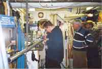
Fredag 20/12
Isspaning på Västersjön ca 2-4 cm ny,
blank tjärnis. Hjälmsjön samt Bälinge sjön ca 1 dm fast snö is lite knottrig. Åkte
skridskor på samtliga sjöar. Ingen vind för segling inget för segling.
Lördag 21/12
Seglingsförsök på Hjälmsjön utan vind, Daniel N, Erik N, Jårgen Å samt Stefan H.
Erik och jag åkte till Västersjön där det blåste bra 3-5 m/s och isen var ca 6 cm med
flera vindbrunnar. Vi la upp en halvindsbana och seglade ca 2 h.
Söndag 22/12
Seglingsförsök på Västra ringsjön strålande sol -8, Daniel N, Erik N, Jörgen Å,
Stefan H. Fin 6-8 cm svart tjärn is med lite vindbrunnar.Vi spanade av sjön med en
skridsko tur. Då ingen vind fanns avbröts försöket efter lunch.
Tisdag 24/12
Segling på Västra ringsjön. Perfekt is. Alla vindbrunnar hade frusit till. Vindstilla
till en början men efter luch kom det en fin västan 3-6 m/s. Bana lades och vi seglade
ca 10 race Daniel N, Erik N. Vi började med envarvssegling för att trimma och träna
taktik. Avslutade med 3 st tvåvarvare som tog ordentigt på rygg och knä. Min bästa jul
på många år.
Onsdag 25/12
Återigen segling på Västersjön. Mycket folk och fin is, strålande sol -10. Blåste ca
5 m/s. Daniel N. Erik N, Göran P fotar och test seglar. Jeppe seglar. Ingen bansegling
mest prat med nyfikna skridskoåkare samt uppvisning och fotografering.
Lördag 27/12
Erik och jag seglar på Östra Ringsjön. Byig svag vind, blankis med en hel del vråkar.
Går dåligt seglet lovgirigt och tungt, korset för hårt spänt. Ramlar i en spricka och
kör skridskon genom seglet.
Fredag 3/1
Segling på Ekoln. Jag Erik, Micke B, Fredrik E. Ett litet parti mitt på sjön med
blankis. Seglade halvindsbana. Kryssade lite mellan vallar av packad snö. Seglade lika
med Micke med Eriks gamla segel. U92.
Söndag 5/1
Segling Ekolnssund. Blankis svag vind. 7 st seglare från Uppsala samt knivsta deltog i
lite racing. Gick lika snabbt som Mikael Brandt och flodan trots lånat gammalt brandt
segel.
Lördag 11/1 - DM Skridskosegling
- Daniel Nerhagen Å1
- Claes Nordgren Å11
- Kaj Knutson Å12
- Leif Wessel Å4
- Jörgen Åstrand Å3
- Mats Jonsson
- Hans Gustavsson Å10
- Jesper Fogelberg U20
- Stefan Holmström Å7
- Thommy Johansson Å14
1.Kristin Wilhelmsson Dam
1.Peder Wessel Junior
Seglingarna genomfördes på Lundåkra bukten söder om
Landskrona på Öresund. Vind: 1-3 m/s Ost.
Temp ca -6 C. Isen var hård och jämn med små stråk av
snö som lätt seglades igenom.Start var planerad till 12:00 men fick flyttas fram pga
dålig vind. En segling kunde genomföras med start vid 13:30. Två varv seglades samtliga
12 deltagare fullföljde banan. Jörgen som var 3:a från det senaste genomförda DM var
hare. Innan start gick Vi igenom banan, väjnings regler samt tog in anmälan. I väntan
på start visade Daniel upp hur utveclingen har framskridit med nya riggar, segel etc.
Lördag 18/1 - SM syd ost Enköping på norra
Björkfjärden
Ett femtiotal seglare samlades på isen. 43 st ställde upp i klass 1. Vinden var lätt
till måttlig 2-4 m/s.Isen var snö fri och hård men hade en del partier med knaggel
vilket kändes under slörarna. Två seglingar genomfördes. Klas Argulander från
Stckholms SSK tog hem segern. Jag placerade mig som 5:a efter flera grova misstag. Ledde
första seglingen rätt stort men tappade till fyra. Blev 6:a i andra seglingen efter att
ha tappat två placeringar på sista slören efter ett 90° vindskift. Lag samt staffet
guld gick till Uppsala KF.
Söndag 19/1
Sverige cup på samma is som dagen innan. Lite överisar hade bildats under natten. En
frisk vind blåste ca 8-10 m/s. 19 seglare kom till start. Två seglingar genomfördes på
mycket kort tid. Blev 7:a efter mycket dåligt trim. Gick fort men lågt. tappade alldeles
för mycket på kryss.
Onsdag 22/1
Segling på Västersjön med lätta vindar.
Fotgraf samt Walle biträdande sportchef på HD (Helsingborgs Dagblad) var med ut för att
göra ett repotage om skridskosegling och om mitt resultat på SM. Mycket bra och jämn
is. Svårt att få bra bilder i den svaga vinden.
Lördag 1/2
Segling på Östra Ringsjön. Mycket fin is 4-5 m/s byig vind. Möte med en seglare från
Röstånga Freddy som hade ett segel från 50-talet. Var mest ute och trimmade själv.
Söndag 2/2
Segling på Vombsjön. Svaga vindar och sol på en mycket bra is. 6 st seglare ställde
upp i årets första klubbsegling Guano Cup. Två seglingar kunde genomföras på en kort
tvåvarvsbana. Därefter följde fri segling med trim och fika i den döende vinden.
Söndag 9/2
Segling på Västra Ringsjön med Jörgen och Frans. Hård vind ca 10 m/s med blank is med
lite vatten på ytan. Mycket ojämn is med stora gropar. Det gick inte att skridskosegla p
g a vibrationerna. Vi seglade istället med två DN isjakter. Tyvärr seglade jag ned med
Frans jakt i en öppen vak så att ena meden fastnade under iskanten vilket ledde till att
jakten bröts av på mitten. Hela lådan blev total förstörd. Men övrig personal samt
materiel klarade sig utan skador.
Lördag 22/2
Segling på Västersjön. +6° byig hård vind mycket dålig skrovlig, knaggel is. Jörgen
seglade med sin DN-jakt. Jag testade ut en ny rigg prototyp som verkade fungera bra.
Svårt att utvärdera med så dåliga förhållanden.
Daniel Nerhagen |
Seglingssäsongen 1997-1998
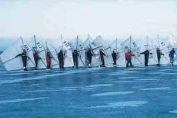 Den ganska tidiga men lite tveksamma
isläggningen i december gav spännande skridskoåkning på tunn is till helgen 6/12, isen
gick dock upp veckan därpå. Veckan innan jul vid nästa isläggning åktes en del
"tjuvrundor" 18+19/12. Dessa isar var dock antingen för tunna och osäkra eller
så låg inte tillräckligt stora områden för att medge segling. Månadsskiftet januari-
februari var det dock dags för premiär; fredagen
30/1
Krankesjön "beseglades" under tre
timmar i NV vind 5-6 m/s. Den måttliga överisen frös under eftermiddagen fast då
temperaturen åter föll och på lördagen bjöds verkliga propaganda förhållanden!
31/1
Sol, NV vind på 5-7 m/s, knappt decimetern tjock blank is, - 4° C och mycket folk på
isen, både klubbmedlemmar, långfärdsåkare och "vanliga turister". Detta
avnjöts under ca. fem timmar av åtta seglare, plus en del "prova påare". Bana
sattes upp och under dagen kördes fyra delseglingar i "Guano Cup", klubbens
egen rafflande kappseglingsserie. Rafflet består kanske inte så mycket i vem
slutsegraren skall bli, eftersom Uppsalainvandraren och mjölksyrefakiren Daniel Nerhagen
som vanligt var närmast oförskämt snabb (även om han fick däng av sin lillebrorsa i
ett par race). Men den byiga vinden och de i isen infrusna fågel fekalierna gjorde att
alla seglare med slumpmässig variation nesligen fann sig ligga glidande på isen medan
flinande konkurrenter seglade förbi, vilket som sagt gjorde seglingarna både rafflande
och refflande.
1/2
Ny kanondag på Krankesjön, vinden hade ökat till 8-10 m/s från SV, sol, -5° C och
åter mycket folk på isen. Bana sattes upp och fem seglare körde ett
"Guano"-race men eftersom den relativt hårda (men jämna) vinden gav höga
hastigheter och mycket folk befann sig i banan bedömdes det olämpligt att köra fler
kappseglingar. Istället träningsseglades det, många intresserade informerades och man
höll på i närmare sex timmar.
Efter helgen kom 3 dm snö som övergick i blidväder.
Till nästa helg hade snön stöpt ner men isarna som aldrig hunnit bli så tjocka var nu
tunna och "vårlika". Vi utlyste DM till nästa helg och valde Vombsjön, som
rekades 6/2.
7/2
Sju seglare mötte upp på Vombsjöns västra strand. Vinden var SSV 4-6 m/s. Isen var
jämn i ytan men av lurig "pelar" karaktär under pågående försämring. Efter
noggrann rekognoscering på linje av fyra man sattes en kort bana nära stranden. Några
minuter innan start gick Mats Johnsson genom isen 20-30 meter utanför kryssmärket,
kanske en timme efter gjord rekning. Han kom upp själv utan problem och eftersom han som
den rutinerade tornadoseglare han är seglade i torrdräkt behövde han inte ens byta om.
Efter inflyttning av kryssmärket gick starten med förra årets DM trea Leif Wessel som
"hare" (= seglande starter). Efter två spännade varv hade Daniel återigen
visat sin överlägsenhet under guanofria förhållanden med Leif som tvåa, Jörgen
Åstrand som trea någon näslängd före Claes Nordgren, Mats som femma, Jesper Fogelberg
som sexa och Peder Wessel som försiktig sjua.
En "Guano Cup" segling genomfördes därefter
men när tre man rundade kryssmärket samtidigt i låg fart hördes det tydligt på isen
att den nu inte längre var villig att stå för "underhållet". DM var
genomfört och man hade seglat ca 4 timmar, så man bröt för dagen. På vägen hem
rekades Västra Ringsjön som hade betydligt starkare is med bra yta. I just detta fallet
var alltså "gräset grönare på andra sidan staketet"!
8/2
Segling på Västra Ringsjön med bra isyta med en del mindre slukhål och en del lömska
pelaris partier speciellt längre ut på sjöns yta. Sol och kraftig, byig sydvästvind
8-10 m/s. Efter rekognoscering seglade Claes Nordgren och Jörgen Åstrand under några
timmar, möjligen med vissa mindre kontrollproblem innan ytterligare vindökning
tydliggjorde några obetydliga seglingstekniska kunskapsbrister (som t.ex. vad som är upp
och vad som är ner, skillnaden på ett rakt och ett bananformat rör, etc.). Walter Loewe
med sina behändiga flygskärmar däremot plockade fram en drygt näsduksstor variant och
seglade med betydligt större framgång.
9/2
Segling på Finja sjön av Jörgen Å. VSV vind 4-7 m/s och pelaris med stora öppna
partier längre ut på sjön. Ett mindre område i den grunda (0,5-1m) badviken i
sydöstra delen avrekades och märktes ut varefter utsökt segling kunde avnjutas under
fyra timmar. Ett långt hopp iland från den landlösa isen avslutade årets
skridskoseglings säsong i Skåne.
Förutom ovannämnda aktiviteter har klubben inköpt två
segel á 3500 SEK för ungdomsverksamhet. I klubbens planerade, abstinensminskande
sommarverksamhet skall eventuellt väl polstrad "inlinesegling" provas om
tillräckligt svag vind föreligger, och fler privata segel är på gång.
Klubbseglingsserien "Guano Cup" är i år väldokumenterad och bifogas, liksom
långfärdssektionens separata årsberättelse. Det förtjänar dessutom att påpekas att
Skåne är det enda distrikt som lyckats genomföra skridskoseglings DM denna säsong!!!
Jörgen Åstrand |
Seglingssäsongen 1998-1999
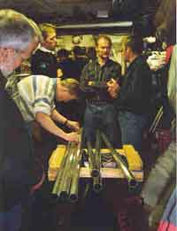 En för Skåne rekordtidig isläggning inledde
skridskosäsongen hösten 98, redan andra veckan i November gav ett mäktigt högtryck
över Ryssland persisterande ostvindar som förde in kalluft över Skandinavien och
Centraleuropa. Den sistnämnda strömmade sedan norrut medan mildluft från Atlanten
fördes in över norra Skandinavien av nordliga lågtryck mot slutet av November. Detta
ledde till att det stundtals var sträng kyla i Skåne medan norra delar av Sverige (det
som man vid lantbruksuniversitetet i Alnarp brukar kalla "Samojedien") hade
plusgrader.
Fredag 20/11
Isspaning på Krankesjön. Sportig åkning med mycket "knake" i längs stranden
(där sjön är halvmeterdjup) på 4-5 cm is. Kärnis över hela sjön som dock frusit i
omgångar så att centrala delar var tunnare och ej bäriga.
Lördag 21/11
Fortsatt kyla under natten gav bättre
bärighet på Krankesjön. Närmast förförande kärnis, två varvs rundåkning med
långfärdsåkare som i stort antal mött upp. Jörgen Åstrand, Mats och Johan Johnsson
hade sedan fin segling i lätta sydvästliga vindar ca. 2-3 m/s., mest längs stranden då
centrala delar av sjön fortfarande hade tunn is. 3 st klubbmedlemmar instruerades också
i skridskoseglingens ädla konst, övningarna avbröts vid mörkrets inbrott kl. 16.
Söndag 22/11
Verkliga propagandaförhållanden på Krankesjön!! Bärig, slät kärnis över hela sjön
och sol med jämn vind ca. 5-7 m/s. Jörgen Åstrand, kusin Gunnar Åstrand, Mats Johnsson
och Daniel Nerhagen rekade och satte bana varefter man körde 4 stycken "Guano
Cup" race (klubbkappseglingsserien!). Daniel genomgående löjligt överlägsen etta,
Jörgen tvåa medan Mats och Gunnar belade två tredjeplatser var efter blodiga bataljer
med iskontakt av tredje graden, uppmuntrande(?) tillrop med mera. Mellan racen teknik och
taktikdiskussioner – bland annat kräver ju rundningar i hög fart lite annan
kurvtagning än vad man kanske är van vid från segling på vatten. Relativt mycket folk
– även "vanliga turister" – på sjön som var intresserade
åskådare. Fyra klubbmedlemmar och två andra instruerades och fick prova på segling med
hjälp av två lånesegel och skridskor. Liksom under gårdagen full fart till ca. kl.16.
Sista veckan i november fortsatte kylan till och med
tisdagen med något lätt snöfall, därefter tillstötte komplikationer i form av
mildväder upp till ca. +3° C. Den grunda (ca. 1-2 m) Krankesjön hade hunnit få knappt
decimetertjock is och klarade mildvädret hyggligt men den senare isläggningen på andra
sjöar hade inte gett säkert bäriga isar.
Fredagen 27/11
Isspaning Krankesjön, Jörgen Åstrand och Johan Nilsson i kvällsmörker och dimma.
Fortfarande bärig ca. 8 cm is med hård, slät åkyta och lite slask + vatten
(="slushpuppy" blandning).
Lördag 28/11
Jörgen Åstrand, Gunnar Åstrand, Daniel Nerhagen med brorsa Erik, Johan Nilsson och Ulf
(vad hette du mer egentligen?) mötte upp på Krankesjön för lite segling i diset,
fortfarande fin is om än nu med måttlig överis bildning. Tyvärr vindstilla, varför
det blev lite skridskoåknings övningar och "torrseglingsinstruktion" under
några timmar samt, naturligtvis, en grundlig fika med alla nödvändiga ingredienser
inklusive diverse dryckjom, matlådes innehåll samt mer eller mindre sanningsenliga
redogörelser för gjorda och kommande bravader etc.
Söndag 29/11
Fortsatt väder präglat av varmluftmassa på Krankesjön, disigt och vatten på isen men
slät och hård yta. Jörgen Åstrand samt nybörjarna Martin Erlandsson samt Ulf (där
var du ju igen!) avnjöt trevlig segling i jämn ostvind på 4-5 m/s. En del festliga
vurpor noterades; "- Ute på sjöns mitt ser man inte riktigt hur fort det går när
det är lite disigt, men när man ramlar märker man i alla fall att en massa vatten
sköljer över en där man kanar fram……"
December började med en ny cykel med likartat
väderläge (högtryck över Ryssland) som åter pumpade in kalluft över Centraleuropa
och södra delen av Skandinavien medan lågtrycksbanorna försköts norrut och pumpade in
maritim mildluft över nord- och mellan Sverige. I Skåne medförde detta att vi fick en
välbehövlig tillfrysning och förtjockning av våra isar innan de hunnit försvinna
efter första isläggningen. Tyvärr började snön dock falla till helgen.
Fredagen 4/12
Isspaning Västra Ringsjön i måttlig nordvästvind och begynnande snöfall. Förutom en
lurig skruvisråk över mitten av sjön från inflödet var isen närmast oförskämt
jämn kärnis på 8 – 10 cm. Vid 16 tiden hade ca. 2 cm snö fallit.
Lördag 5/12
4-5 cm lös pudersnö på Västra Ringsjön, rimfrost i träden, absolut vindstilla och
dimma, dvs IMC skridskoåkning!! (Instrument Meteorological Conditions = flygregler för
när inga visuella referenser finnes) Märklig, nästan viktlös upplevelse där total
avsaknad av synlig horisont medförde betydande balansproblem. Turen gav mersmak, man kan
faktiskt konstigt nog ha ganska trevligt på is även utan vind. Kompass rekommenderas
dock.
Söndag 6/12
Friska vindar NV ca. 8 – 10 m/s och så småningom tilltagande vind och snöfall på
Västra Ringsjön. Jörgen Åstrand, Mats och Johan Johnsson samt kompisen Johan
skridskoseglade med tre segel så snön yrde med alltifrån måttlig till skenbar
kontroll. Förhållandena blev ännu mer intressanta av att snön fläckvis blev mer och
mer vindpackad. De frejdiga nybörjarna Martin Erlandsson och Johan Nilsson som anslöt
sig till övningarna tyckte att det var "–kul att bli riktigt blåst!!" och
Martin fick särskilda pluspoäng för sina vackra änglar i snön som han använde som
"Tag" ("signatur" på graffitti-slang) för att märka ut sina
"vurpmärken". Jörgens DN jakt riggades med ett före detta surfsegel på ca. 3
m 2 vilket gav fullt tillräcklig framfart och bidrog till
"snöyran". Alla inblandade fick prova på även en dylik farkost. Tyvärr
envisades ju nattmörkret i det tilltagande snöfallet även denna dag med att komma
alldeles för tidigt!
Kylan höll i sig med temperaturer ner mot -5° C under
hela veckan, och eftersom undertecknad hade ledig vecka bedrevs viss verksamhet även
vardagar.
Måndag 7/12
Gnistrande sol, -4° C och stadig NV vind på 6-8 m/s på Västra Ringsjön. 5-10 cm
varierande vindpackad snö täckte hela sjön, där tidigare nämnda råk nu var
tillfrusen. Synnerligen njutbar DN jaktsegling av undertecknad under hela dagen med
långa, härliga lyft på två medar till den lokala gåspopulationens stora
förskräckelse.
Onsdag 9/12
Sol och vindstilla = fortsatt högtrycksväder. Isspaning med kusin Gunnar på havsisar
vid Foteviken, Höllviken och kring "Nabben"- Falsterbonäsets nordspets.
Hyfsade åkytor om än lite mjuka på Foteviken, övriga lokaler åkbara
"mjukisisar" med relativt stort inslag av spänning.
Torsdag 10/12
Vindstilla och solsken på Västra och Östra Ringsjön, isspaning och skrilleåkning
längs tillfrusna issprickor.
Fredag 11/12
Mulet, -3° C, OSO vind ca. 3-4 m/s. Isspaning Rössjön där östra delen lagt sig efter
snöfallen i helgen, fin svartis men ställvis tunna områden, inte tillräckligt säkert
för segling.
Lördag 12/12
Mulet och någon minusgrad på Östra Ringsjön. Liksom på de flesta sjöar sträv,
fastfrusen snö med åkbara stråk längs issprickor men fin drygt decimetern tjock
svartis på centrala delen av sjön (några kvadratkilometer, kanske..). Jörgen Åstrand
och Johan Nilsson spanade av och släpade ut skridskosegel och isjakt till
"finisen" där man i lätta sydvindar ca. 1-3 m/s kunde njuta av det utmärkta
glidet.
Natten mellan Lördag och Söndag kom ett kraftigt
väderomslag, en varmfront regnade ur sig betydande delar av Nordatlanten över Sydsverige
hela Söndagen och temperaturen steg till ca. + 5° C samtidigt som kraftiga vindar gjorde
segling mindre attraktivt.
Söndag 13/12
Segling av Daniel Nerhagen på Västersjön. Kraftig byig vind gav dålig kontroll och
seglingsduration, möjligen även påverkat av ett irriterande och ihållande regn.
Tisdag 15/12
Västsydvästlig vind 4-7 m/s och fortsatt +5° C på Yddingesjöns släta, vattentäkta
ca. 7-8 cm tjocka is. Jörgen Åstrand och Martin Erlandsson träningsseglade under fyra
timmar på halvslöa skridskor. Knepig navigation i det halvskumma diset som tätnade till
dimma medan tungt guanobelastade områden lurade mitt ute på sjön.
Torsdag 17/12
Dis och Sydvästvind 6-10 m/s på Västra Ringsjön där det fortsatta mildvädret och det
myckna regnet gett lömsk pelaris ca.5-7 cm på östra och centrala delar av sjön. Fin is
längs sydstranden där vinden dock blev mycket byig bakom trädridåerna. Trevlig
skridskotur men lite för osäkra seglingsförhållanden.
Fredag 18/12
Endast 4-6 cm is på Krankesjön med
"spröda" knakningar, kort rekognoceringstur längs norra (halvmetergrunda)
stranden.
Lördag 19/12
Samling på Västersjön under varmfrontspassage = +5° C, regnskurar och dis/dimma. Slät
is med måttligt med slukhål och acceptabel bärighet, ca. 6-7 cm tjock. Jörgen
Åstrand, Martin Erlandsson, Johan Nilsson, Tina, samt bröderna Daniel och Erik Nerhagen
åkte några rundor men tyvärr ville vinden inte vara med och leka idag. Medhavd matsäck
intogs under gemytliga former i den futuristiska och arkitektoniskt intressanta busskuren
i Tollstorp(ca.20 inv.).
Under söndagen kallfrontspassage på eftermiddagen,
äntligen kröp termometern åter ner under nollstrecket. Tyvärr hade de flesta isar
redan hunnit smälta ner, kanske lite oväntat fort. Östra Ringsjön hade gått upp under
söndagen efter att bara en vecka tidigare haft drygt decimetertjock is. Västra Ringsjön
hade klarat sig bättre och uppvisade ypperlig isyta med 8-9 cm tjocklek längs södra
stranden vid avspaning under tisdagen. Dessvärre trycktes kalluftmassan undan av en
varmfront på tisdagskvällen efter bara ca. 2 dygn med temperaturer på ett par-tre
minusgrader.
Onsdag 23/12
Jörgen Åstrand och Johan Nilsson rekade av
och seglade på östra delen av Västra Ringsjön. Temperatur +4° C, vinden ganska byig
SSV 4-6 m/s, slät is endast ca.5-6 cm med en del vatten på och begynnande
"pelarkaraktär". Skojig segling i tilltagande mörker – och minskande
istjocklek. Daniel Nerhagen seglade samtidigt på Västersjön på tjockare is men med
"maräng"-liknande yta och mindre vind.
Torsdag 24/12 (julafton)
Jörgen Åstrand och Johan Nilsson fortsatte
envist att vägra julen. Finjasjön rekades – mindre åkbar yta i sydöstra hörnet
av sjön, slät men inte särskilt tjock is och med diskret gräns till endast
centimetertjock is. Omgruppering till Västersjön där isen var av utmärkt
kärniskvalitet, ca 8 cm tjock, slät med några nedstöpta "knaggelomvandlade"
snödrivor. Ett intressant inslag var de decimeterdjupa vatten pölarna – dock med
slät, bärig is under – som låg utspridda över sjön. En emellanåt tveksam
Syd-Sydvästvind tilltog till stadiga 3-5 m/s och gav mycket njutbar segling med kornsnö,
dis och emellanåt uppfriskande vattensprut från skrillorna som pikanta inslag. En del
muntra hälsningar hördes ute på isen, t ex
God Jul, finns det några stora barn här?
Blir det nå´n gran i år då?" "-Naeh – dom växer för dåligt
här ute!!
Ursäkta, var det din vind jag snodde?
Har du överraskat nå´n räv på isen ännu?"
etc,etc….
Fredag 25/12 (juldagen)
Byig sydvästlig vind 8-10 m/s på
Västersjön, enstaka regnskurar och ännu lite mer vatten på en fortsatt bärig, slät
is med förvånande få och små slukhål. Jörgen Åstrand, Johan Nilsson och Alexandra
åkte en rekognoscerings runda och kunde därefter hänge sig åt utomordentlig
DN-jaktsegling med litet segel under tre timmar.
Mildvädret fortsatte med förfärligt höga temperaturer
under julhelgen och mellandagarna, 5-6° C och dessutom kraftig vind varför de flesta
Skånska sjöar gick upp. Mot nyårshelgen hade dock temperaturen i södra Småland varit
under noll och norr om en linje Osby –Lönsboda hade KRIS (Kristianstadsdelen av
Blekinges långfärdsåkare) medlemmar hittat fina isar.
Lördag 2/1
Johan Nilsson och Jörgen Åstrand åkte till sjön Möckeln vid Älmhult. Mulet och
disigt, 0° C och en SO vind som frampå eftermiddagen ökade från 3-5 m/s till 6-7 m/s.
Skridskoåkning och isrekning kring Möckelsnäs där man bland annat kunde se en räv som
alldeles på riktigt raskade över isen! Kanonfin is med slät och hård yta, 7-9 cm tjock
med tunna ställen vid grund och näs. Därefter skridskosegling, där även lokalt boende
Torsten Henke förleddes att prova. Johan seglade sönder sina (lånade!) pjäxor så
grundligt att han fick binda ihop dem för att kunna segla hem. Sedan riggade han DN
jakten istället så att intressanta fartjämförelser kunde göras. Uppenbarligen går en
medioker skridskoseglare och en DN-jakt med slöa medar ganska jämt på kryss och
halvvind.
Söndag 3/1
Ny tur till Möckeln av Johan och Jörgen, nu i några plusgrader som påverkat isen, som
hade täckts med vatten och började bli tunnare men fortfarande hade fin åkyta. Efter
vederbörlig rekning skridskosegling i OSO svag vind 1-3 m/s där Torsten (som köpt
långfärdsskridskor sedan gårdagen!) gjorde stora framsteg, liksom Johan som lånat nya
pjäxor! (Vem sade att inte skridskosegling är en materialsport?)
Fortsatt mildväder under första veckan 1999 men
fredagen 8/1 trängde ishavsluft ner över Sydsverige och gav -2-4° C under helgen och in
i vecka två. Dock började det snöa så smått redan under helgen och på efterföljande
torsdag trängde åter mild atlantluft in, tryckande en varmfront med ett ymnigt snöfall
framför sig. Den isolerande snön hindrade en annars lovande isläggning och ingen
åkning kunde göras på efterföljande helg. Kylan och vintervädret gav dock lite extra
inspiration till den av Skånes Isseglarklubb utlysta Träffen i Jörgens garage för alla
skridskoseglare:
Torsdag 14/1
Riggmekarträff i Jörgens garage. Femton seglare hade hörsammat kallelsen och dök upp.
Trots trängseln lyckades man göra sju nya relativt korrekta riggar knappt halvfärdiga
efter att ha tömt Metallvaruhusets lager och så smånongom även de pilsnerbackar och
"Lundaknakar" (lokal traditionell korv) som införskaffats. Uppgradering till
"tvärslå" riggar och delbar bom påbörjades på ytterligare fem riggar. Den
spännande fortsättningen sattes till påföljande torsdag.
Torsdag 21/1
Ny riggmekarträff, tio man jobbade i fyra timmar utan att helt lyckas slutföra arbetet.
Till viss del kan detta ha berott på att arbetet bedrevs mer under gemytliga än
effektiva former. Den besvärliga sågningen av tvärslåns slitsar genomfördes med stor
smidighet efter att man lärt sig tricket att smörja sticksågsklingan med T-röd!
Torsdag 28/1
Riggmekträff nummer tre. Åtta man arbetade främst med akterbeslags montering, där Hans
Gustafson visade prov på rent konstnärliga plåtslagerikunskaper. En annan del av
arbetsstyrkan sysselsatte sig med att reducera ett stort antal snabbstålsborr till
rykande rester under fåfänga försök att borra hål i rostfria 8 mm bultar.
Hela januari var mild med temperaturer kring + 5° C.
Natten till Torsdagen den 28 trängde dock mycket kall ishavsluft undan de paraderande
lågtrycken och gav bland annat nytt köldrekord för Sverige; - 50° C i Karesuando! I
Skåne kröp termometern ner till - 10° C nattetid, men mild ca. 5° C Atlantluft
trängde åter in över Skandinavien Söndagen den 31.
Fredag 29/1
Isrekning i fullmånens (och föralldel
även pannlampornas) sken kl. 20.00 på Krankesjön av Johan & Jörgen. Kanonis men
något tunn, ca. 3 cm inne vid stranden.
Lördag 30/1
Högtrycksväder med strålande sol och jämn 5-7 cm kärnis på Västersjön. Enstaka
seglingsförsök gjordes i en mycket diskret sydostvind. Mycket trevlig skrilleåkning i
solgasset.
Söndag 31/1
Typiskt varmmasseväder med dimma, regn och
+5° C på Västersjön. Jörgen & Johan, Ulla, Mats Johnson, Peter White och Hans
Gustafson försökte förgäves få till någon segling i den obefintliga vinden där isen
i samband med nattens varmfrontspassage blivit pudrad med ett par cm snö. Lite tunnare is
ute på östra delen av sjön, vilket konfirmerades av en "semiplurrning"(bara
blöt till knäet).
Måndag 1/2
Jörgen och Martin Erlandsson gav Västersjön en chans till i dimman men även idag
uteblev vinden helt, istället blev det en dimmig skrilletur.
Mildvädret fortsatte i början av februari och Torsdagen
den 4 bjöd på sydvästlig storm med orkanstyrka i byarna vilket bröt upp all befintlig
is i Sydsverige. Undertecknad besökte Konungsliga Hufvudstaden med leksaksbilen packad
och fick lite iskänning där.
Torsdagen 4/2
DN-jaktsegling på Görväln. Växlande
molnighet, + 4-5° C, uppehåll och 10-15 cm tjock is med slät, hård yta och 2-3 cm
regnvatten på. En ständigt ökande sydvästvind nådde kulingstyrka och rev upp vita
gäss i vattnet på isen!! Inspirerande segling i farter kring Warp 4. Till och med
nerriggningen blev spektakulär när en kraftig kallfront som svepte in framemot kvällen
gav så häftig lufthävning att ett åskväder med tillhörande blixt, dunder och
snöbyar bildades, ganska ovanligt i februari.
Lördagen 6/2
Skrilleåkning Görväln med kusin Kjell och exil-SIK:aren Andreas Berge. Avtagande
snöfall, nordvästlig byig vind på ca. 10 m/s (lite för byig för skridskosegling) och
kallmasseväder med temp ner mot -10° C efter frontpassagen ovan. Lättliggande snödrev
med mestadels jämn och fin is. Efter motvindstur till Kungsängen härligt medvindsåk
till Hässelbyverket där isen tog slut.
Söndagen kom kalluften ner till Skåne tillsammans med
ett kraftigt snöfall och temperaturen föll ner till –15° C natten till onsdagen.
På de flesta sjöar hade tunn is bildats innan snön kom. 2-3 dm snö isolerade sedan
från de frostnätter som följde, och isarna var därför tunna och luriga under
snötäcket. Mot slutet av veckan började havsvikarna lägga sig.
Torsdag 11/2
Isrekning på Lundåkrabukten av Jörgen och Johan. Tyvärr vindstilla, men – 2-3° C
och fin 6-8 cm tjock is med vackra frostblommor på. En del tunna och mjuka partier fanns.
Hyfsad solnedgång mot Köpenhamns skyline medan de lokala guanoproducenterna övertalades
att inte slå nattläger mitt på den presumtiva skridskoseglingsbanan.
Lördag 13/2
SM i skridskosegling på Mälaren, norra
björkfjärden vid Härjarö. Några plusgrader, lite vatten på tjock is med fin yta med
en del råkar. Vinden sydvästlig, ca. 5 m/s som ökade något under dagen då även solen
tittade fram. Kort bana som kördes tre varv. Daniel Nerhagen och Jörgen Åstrand
representerade Skånes Isseglarklubb med måttlig framgång, Daniel 10 och Jörgen 24 av
de 36 startande. Till viss del beroende på att det var drygt en månad sedan man senast
skrilleseglade och därigenom kollat utrustningen hade båda en del tekniska problem med
riggarna ("-Visst ja, jag skulle ju ha fixat……") men framförallt
märks det att man seglat oftare och med mera inslag av bansegling än vi (hittills!!!!!)
gjort i Skåne. Vann gjorde Alexander Sahlin, som tog sitt tolfte mästerskap efter en
tuff batalj med föregående års mästare Klas Argulander, bägge SSSK. Sedan kördes
stafetten, där fyramanna lag seglar ett varv var och växlingarna sker på slören. Den
"pågående" får inte skära växlingsgaten innan den "avgående".
Uppsala hade sjukdom i laget och fick plocka in Daniel som slutman i ett inofficiellt
"mixlag". Uppsala ledde inför sista sträckan och Daniel gick ut med dryga 100
meters ledning. Denna ledning var dock inte så stor som den låter eftersom Stockholmarna
hade omöjlige Alexander Sahlin på sista sträckan. Obönhörligt åts försprånget upp
och vid kryssmärket var rollerna ombytta.
Oerhört nyttigt att se de "stora pågarna" i
aktion på nära håll. Möjligen deprimerande till en början med de stora skillnaderna
men mest positivt – tänk så mycket kul det finns kvar att lära!
På kvällen vidtog en gedigen SM-bankett i Uppsala där
man förutom dagens seglingar diskuterade bland annat heminredning och segelsömnad,
maltstyrka samt andra viktiga ämnen under mycken förbrödring.
Söndag 14/2
Försök till Sverigecupsegling på Ekoln
vid Uppsala, där Vikingarännet gått dagen innan. Micke Flodström hade varit uppe i
ottan trots föregående kvälls SM-bankett och satt bana ute på storsjöflaket där isen
var bättre. DN jakterna hade samlats för att köra DM östra distriktet. Den
sydvästliga vinden tilltog dock mer och mer, över 10 m/s i byarna som var ganska
stötiga. De flesta av oss skridskoseglare hade problem (utom Sahlin och de andra
halvgudarna förstås) att kryssa sig ut till banan som låg några kilometer ut, och till
slut beslöt man att avvakta tills efter lunchfika i förhoppning att vinden skulle minska
(vilket den aldrig gjorde). DN jakterna hade redan gett upp och packat ihop. Daniel och
Jörgen som hade långt att köra packade ihop efter den ystra slören in till Uppsala
Kanotförenings klubbhus, som märkligt nog klarades av utan varken person eller
materialskador.
Helgen ovan innebar mildväder i Skåne men under
nästföljande vecka lyckades en kalluftmassa tränga ner söderut och gav minusgrader
under ett par tre dygn under mitten av veckan. Förvånande positiva rapporter från 14/2
talade om decimetertjock is på Vombsjön, och när detta kontrollerades visade det sig
stämma. Dessutom hade ytan på den i och för sig ganska porösa stöpisen hårdnat. På
vinst och förlust utlystes DM till helgen, men fredagen den 19/2 trängde nästa
varmfront in och mjukade upp isytan.
Torsdag 18/2
Fjärde och sista riggmekarträffen. Med hjälp av härdade borr, borrslip och borrpasta
besegrades de rostfria bultarna lätt. När de sista akterbeslagen under sedvanligt
gemytliga former färdigställts hade åtta nya riggar gjorts och sex äldre konverterats
till tvärslåriggar med delbar bom.
Lördag 20/2
Jörgen Åstrand, Hans Gustavsson och Claes Nordgren skrilleseglade på Vombsjön i VSV
vind på 2-4 m/s, disigt väder men uppehåll. Isen var drygt decimetertjock men med mjuk
yta som skridskorna skar ned någon cm i vilket bromsade fart i betydande, entusiasm i
något mindre mån. Segling under några timmar varefter Västra Ringsjön rekades.
Väderuppklarning och något bättre yta på stöpisen där, men efter moget övervägande
kom man överens om att skjuta på DM.
Söndag 21/2
Disigt varmmasseväder med svag Sydvästvind som avtog i de strilande regnskurar som
avlöste varandra över Västra Ringsjön. Mer uppmjukad isyta idag, där skridskorna skar
ned djupare. Hans Gustavsson och Stefan Holmström testade de nya skridskosegelriggarna i
sydöstra änden av sjön, medan Jörgen Åstrand och Johan Nilsson tog en skrilletur och
gjorde ett fruktlöst och fuktigt försök att få fart på isjakten vid norra stranden.
Under v 8 fick vi åter några frostnätter när kylan
lyckades (tillfälligt) tränga sig in mellan lågtrycken. Några medlemmar utnyttjade
sportlovsledigheten till skrilleturer på sydskånska sjöarmed fina isytor under onsdagen
den 24/2. I likhet med förra veckan blev det dock mildväder under natten till fredagen,
och utsikterna till bra isar i helgen var inte så lovande.
Lördagen 27/2
Skrillesegling Västra Ringsjön, S 2-4 m/s,
disigt. Jörgen Åstrand upptäckte till sin oerhörda förvåning att stöpisen i
sydöstra delarna av sjön hade hård, fin åkyta och lite längre ut på sjön fanns ett
stort område med alldeles jämn kärnis som smält fram. Tjockleken på dryga decimetern
var kanske inte så imponerande då isen var av "våris"typ och en del luriga
råkar med slukhål fanns men mellan sammanbitna tänder konstaterades att idag hade nog
DM kunnat köras. Som plåster på såren kunde god skrillesegling i "splendid
isolation" avnjutas under 4 timmar.
Söndagen 28/2
Skrillesegling Västra Ringsjön vid "Gamla Boo"´s bad plats, vinden SSV 6-10
m/s. Jörgen Åstrand och Johan Nilsson hade vissa kontroll problem i den byiga vinden,
men isytan var fortsatt utmärkt. Ganska klart uppehållsväder med åtminstonde +5° C
och en hel del vår i luften – lärkorna sjöng över våra huvuden när vi susade ut
på sjön! Några av klubbens långfärdsåkare rapporterade att isen lite längre
västerut var helt murken och under dagen kunde vi också märka en isförsämring (ökade
högfrekventa biljud vid åkning över vissa partier, ökad söndersplittring av isen vid
slag med pik eller skridsko) och när vinden ytterligare tilltog under dagen bröt vi
redan vid 13-tiden även om seglingen då var minst sagt uppfriskande. En social
skrilletur med långfärdsgänget på Dagstorpssjön fick avrunda dagen och sannolikt
även säsongen 98-99.
Jörgen Åstrand |
Seglingssäsongen 1999-2000
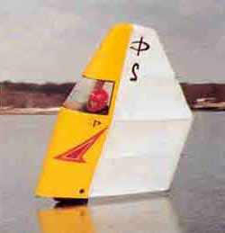 En mild höst
med rekordhöga temperaturer i september gav fortsatt mildväder under förvintern. Dock
blev det till en isläggning till jul som en riktigt efterlängtad julklapp.
Fredagen 24/12
Seglingspremiären för säsongen skedde den 24:Dec Julafton på Västersjön, en mycket
fin 5-8 cm tjock is låg över hela sjön med några tunnare partier på mitten av sjön.
Vinden var stark byig upp till kuling. Erik och jag började med en tur på skridskor för
att avspana isen innan vi riggade upp och seglade en timme. Som vanligt kom man på allt
som skulle ha fixats efter förra säsongen, men med lite trixande och fixande blev det
till slut riktigt bra segling. En otroligt bra premiär, sen var det bara att åka hem och
äta julbord.
Dala, Å1
Mildvädret återkom snabbt efter julhelgen och isarna som aldrig hann bli särskilt
tjocka gick upp. Det dröjde till mitten av januari då ett mäktigt högtryck såg till
att polarluft åter kunde tränga ner till Skåne, som fick –5-10° C helgen 22-23/1.
Lördagen 22/1
Johan Nilsson rekade av Krankesjön, fin isyta men knappt tre-fyra cm. tjock.
Söndagen 23/1
Skrilleåkning på Krankesjön, som hunnit bli 5-6 cm över hela sjön under nattens -10°
C. Många, mestadels välutrustade, skridskoåkare avnjöt den utmärkta isen. Segling
under ett par timmar i ytterst diskret sydvind, där farten väl inte var direkt
svindlande. Med tanke på seglings abstinensen var det ändå en välgörande tur.
Måndagen 24/1
Skrilleåkning Vombsjön. Ett par cm snö på jämn is som varierade mellan 6 och 4 cm
tjocklek, mycket svårrekad. Krankesjön 8-9 cm tjock, ett par cm snö. Helt vindstilla,
så det var inte lönt att försöka segla. Sjön åktes runt ett par varv.
Kylan höll i sig ytterligare några dygn,
måndagen den 24 uppmättes
-17° C på Sturup på morgonen. Någon cm snö föll på
de flesta ställen, som kan ha bromsat istillväxten något. Undertecknad hade tyvärr
förhinder 25/1 som annars bör ha varit en utmärkt dag för skrillesegling. Natten
mellan 25-26/1 trängde en varmluftsmassa in med friska västvindar.
Onsdagen 26/1
Mulet, duggregn och cm tjockt smältvattenskikt på Krankesjöns släta yta. Isen nu
förvånansvärt avtunnad, 6-7 cm. VNV vind om 6-8 m/s som gav fantastisk segling under
tre-fyra timmar för Jörgen och Gunnar, som lyckats smita från vuxenlivets alla
vedermödor. Vi satte tyvärr aldrig någon bana eftersom suget att bara få segla var så
stort. Vissa trimningsproblem men i stort sett förvånansvärt kontrollerad segling.
Torsdagen 27/1
Skrilleåkning Krankesjön. Samma vind som gårdagen
men utan duggregn. Isen nu av spröd och dålig kvalitet ca. 5 cm och medgav inte segling,
bara försiktig åkning längs kanterna.
Mildvädret fortsatte sedan med de ändlöst
paraderande lågtryck som alltför ofta präglar den skånska vintern. Undertecknad fick
turligt nog anledning att ta alla isleksakerna med i bilen upp till Stockholm 5/2. Base
Camp inrättadeshos bekanta i Saltsjöbaden, där Baggensfjärden inte legat så fint på
fyra år. Mildväder präglade dock helgen även i Konungsliga Hufvudstaden.
Söndagen 6/2
Skrilleåkning Baggensfjärdens 10-15 cm tjocka is i +4-5° C. Gott om folk som skrinnade
runt i smågrupper men inga seglare.1-2 cm smältvatten på den jämna isytan, en fin
västvind på 6-7 m/s som tyvärr fick lämnas oemotsagd p.g.a. ett stundande 75
årskalas.
Måndagen 7/2
Skrilleåkning Baggensfjärden, +5° C, S 7-8 m/s. Rekrunda t.o.r. Neglinge först,
därefter yster skrillesegling i den byiga vinden (det är banne mig jämnare vind i
Skåne!) under tre timmar. Hade som tidigare problem med assymetrisk rigg – lovgirig
på ena bogen och fallgirig på andra, vilket gjorde intrimning av seglet lite besvärlig.
Viss hjälp kunde man få av att vindbyarna syntes som s.k. "negrer" i
smältvattnet på isen, så att ändrad vindriktning och –styrka kunde läsas.
Jag kunde naturligtvis inte slita mig från den
fina isen och hade möjlighet att stanna under veckan. Under natten kom ett högtryck in
och gav minusgrader, som faktiskt frös allt smältvatten utan någon överisbildning
– tur igen!
Tisdagen 8/2
Skrilleåkning Baggensfjärden. Åkte runt södra och östra delen av fjärden, avstod att
betitta Baggensstäket som enligt en vänligt sinnad infödings upplysningar alltid går
öppet. Helt slät is, vindstilla, lätta moln och ett par nästan helt tillfrusna
rännor. Framemot kvällen kom en blyg sydväst vind på 1-2 m/s som räckte till riktigt
trevlig segling på den jämna isen. Varje gång man fått upp farten är man övertygad
om att vinden ökat men då man stannar är vinden fortfarande svag. Det upphör aldrig
att förvåna hur lite vind som krävs för att sätta fart på ett skrillesegel.
Onsdagen 9/2
Skrilleåkning Baggensfjärden, åkte södra
delen av fjärden i sällskap med Tina och dotter Sara i barnvagn till förbiåkande
banderollförsedda skrillefundamentalisters fasa. Någon minusgrad, svag västvind.
Seglade i tre-fyra timmar i den kanske 1,5 m/s som rådde i sällskap med regerande
svenske mästaren Dick Tillberg och hans vingsegel (klass 2 segel) som enligt egen utsago
hade "fullt häng". Han använde sitt lättvindssegel som han bara kan föra i
vindar upp till 2-3 m/s, sedan blir det för svårt att hålla! Mycket imponerande fart i
den svaga vinden där han låg och körde imaginär bana varv på varv. Själv hade jag
nätt och jämt vind att få lite fart på en halvvindsbog, att kryssa var inte att tänka
på. När solnedgången färgade fjärden röd under en molnskärm som belystes
underifrån med samma nyans ökade vinden till kanske 2,5 m/s så att seglingen blev
riktigt njutbar. Fast då hade Dick redan blivit"lite trött".
Torsdagen 10/2
Skrilleåkning Baggensfjärden, någon minusgrad och SSV vind på 4-7 m/s. Sportig
skrillesegling under ett par timmar med endast ett smärre antal vurpor i den byiga vinden
där man nu inte längre hade något smältvatten att läsa vindskiften i. Lyckades
åstadkomma ett rigghaveri där popnitarna i tvärslån slets ut. Intressant slör in till
depån med ett fullständigt "lealöst" segel. Det ligger kanske något i det
där Alexander Sahlin säger i sitt byggkompendium om att man skall använda rostfri
popnit….
Åkte en skrilletur och tittade på Baggensstäket som
mycket riktigt var helt öppet. Intressanta rörelser i isen (10 cm) när en motorbåt
passerade förbi. Nyttig stakningsträning i motvinden hem.
Fredagen 11/2
Skrilletur på Baggensfjärden i byig sydvästvind om 4-8 m/s. Fortfarande fin is. Hade
hunnit med en provisorisk, hyfsat framgångsrik lagning av riggen men var lite sent på
isen med planerade sociala engagemang senare under kvällen, så det var en smula ont om
tid för segling. Dessutom lite onödigt att segla sönder fler grejer innan ev. SM….
>Efter omvittnad beslutsångest hos
skrilleseglingsförbundets tävlingskomittée och många turer utlystes SM 2000 till
UKF´s klubbhus vid Ekoln, Uppsala; klassisk mark där det seglats på skrillor sedan 85
år. Undertecknad befann sig ju redan nästan på plats men tyvärr låg vår nyblivne
medlem och meriterade tävlingsseglare Erik Nerhagen till sjöss under hemligstämplade
former och brorsan Daniel (topprankad i "Guano Cup") tyckte det var lite trist
att köra upp själv, särskilt som han inte kunnat segla mer än en gång under
innevarande säsong. Väderprognosen talade dessutom om sydvästlig kuling så det var
lite osäkert om tävlingen skulle kunna genomföras.
Lördagen 12/2
SM i skrillesegling! Tunnt molntäcke med talrika solglimtar, +3-4° C och 15-20 cm tjock
delvis vattentäckt is med lite knaggel och tunn överis som mer skärpte uppmärksamheten
än utgjorde något egentligt hinder. Vinden låg närmast perfekt, SV 5-6 m/s och inte
direkt obehagligt byig. En kortbana som seglades tre varv sattes nära klubbhuset eftersom
en råk spärrade av den i och för sig ännu finare isen längre ut på sjön. Start med
hare praktiserades som vanligt och Herr Nerhagen senior med maka såg med örnögon till
att resultaten blev noterade. Kryssarna var som vanligt förutom starten mycket
utslagsgivande (tappar du fart under en stagvändning är du långt efter direkt),
slörarna var ruggigt snabba och spännande med mer markerat isknaggel och lite infrusen
vass som extra piff på anrättningen. Förutom att det är lite trångt i starten är det
inte överdrivet trångt på banan, men så är det också lite färre deltagare (ca.
25-30 st.) jämfört med för 5 år sedan då det oftast var 60 seglare med.
Andra seglingen inträffade ett par odramatiska vurpor
utan skador, då vinden hade ökat något till kanske 7-8 m/s. Båda seglingarna vanns i
överlägsen stil av Alexander Sahlin med Mikael Brandt som tvåa. Alexander ställde upp
även i klass två (vingsegel) med en egenhändigt trälaminerad konstruktion av
utomordentligt styggt utseende. Naturligtvis tog han ledningen direkt efter start och
drygade sedan ut efterhand. Men sista slören vurpade han (enligt egen uppgift för att
han försökte segla på säkerhet – karlen kan alltså bevisligen inte segla
långsamt) och fick se sig omseglad av ett par stycken innan han fick på sig vingen igen,
bland annat Dick Tillberg som nu istället vann. Sahlin vann andra racet men Dick blev
tvåa så han försvarade sin SM-titel totalt.
Stafetten vanns av Uppsala, och i yster segeryra anförde
därefter Mikael Brandt 15-20 man i en improviserad kollektiv "långsegling" ut
på Ekoln längs med råken, där isen var ännu finare och jämnare. En hel del
långfärdsåkare i allt från turutrustning till slimmade trikåer tränade inför
vikingarännet och hade lite jobbigt i vinden som vi bara utnyttjade till att vissla
förbi i en lång rad. Slören hem till UKF´s klubbhus tog sedan inte många minuter men
så långt har jag nog aldrig seglat i så hög hastighet.
Den uppmärksamme läsaren noterar kanske utelämnandet
av undertecknads resultat. Nu är det ju viktigt att vara med och lära och det viktigaste
är ju inte att kämpa väl utan att deltaga (eller hur var det nu…). Dessutom var
det fel på grejjorna – seglet ville helt enkelt inte segla för babordshals och då
kan man ju inte ta sig runt en triangelbana, eller hur? Sedan man kan kanske diskutera den
använda taktiken att bevaka startfältet från sista position…
Undertecknad avstod banketten i Uppsala för
återfärd till Saltsjöbaden, trött men nöjd. Propagandaväder under Söndagen bäddade
för ytterligare en heldag på isen, som nu blivit ÄNNU slätare, hur det nu var
möjligt!
Söndagen 13/2
DN-jaktsegling Baggensfjärden. Sol, -2 ° C och SSV 3-5 m/s. Kanonfin segling med bra
fart trots något lovgirigt trimmad jakt och slöa medar. När vindbyarna tog i lite
resulterade detta i rejäla medsläpp eller "bredsladdar". Mina värdar under
veckan Hugo & Tina behärskade snabbt konsten trots relativt krävande navigering
– mycket skrilleåkande folk ute på isen. Ytterligare 4 jakter ute, bl.a. en ärrad
veteranjakt med segelnummer S-1. Ytterligare någon "hobbyjakt", resten
tävlingsjakter som kanske hade ett visst fartöverskott jämfört med oss
andra….
Ett par andra kompisar med erfarehet av Hobie Cat segling
lärde sig också snabbt knepet att segla på fartvinden och hålla farten uppe i
stagvändningarna. Framemot kvällen mojnade vinden av något. Den minskande vindpressen i
seglet gav då mindre medsläpp så att det snarare gick fortare när vinden
mojnade. Issegling är inte riktigt som vanlig segling……
När solen gick ned efter fem timmars segling packade vi
motvilligt ned jakten. Den efterföljande festliga kvällsvarden bjöd på diskussioner
som rörde sig mest om ritningar, byggmetoder, etc., etc…….
Under veckan hade tyvärr en del uppgifter tornat
upp sig i Lund, så hemfärd fick anträdas under måndagen. Som summering en osannolikt
lyckad vecka som gav minst lika mycket avkoppling och nöje som min skidresa veckan
dessförrinnan! Vecko eller veckoslutsresor i grupp kanske är ett sätt att bättra på
skrilleseglingens villkor i Skåne?
Jörgen Åstrand, Å 3 |
Segling 2000-2001
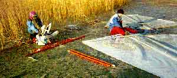 En mild höst
med stora nederbördsmängder, översvämningar i Värmland och rekordvärme i november
gick mot sitt slut i v 51, när äntligen ett kraftigt högtryck orkade hålla emot den
fuktiga mildluften från Atlanten och därmed avbryta den ändlösa lågtrycksparaden.
Klara nätter och dagar gav sänkta temperaturer, men inte så väldigt många grader
under noll varför det var med viss nyfikenhet som säsongens isspaning inleddes.
Torsdagen den 21/12
Undertecknad företog flygspaning i Piper Cub SE-AWL (med meriter som
artelleri-spaningsplan under WW 2). Klart, -1° C, tunna moln på 3000 ft. Krankesjön
isbelagd med snö på västra halvan, fågelvakar i östra och västra änden. Den senare
modell större med råkar till bäckar vid norra stranden och i sydvästra änden.
Vombsjön öppen utom i vikar, översvämmade områden av Kävlingeån isbelagda.
Åkte ut till Krankesjön, ca. 3 cm blank, icke bärig is
vid badplatsen. Åkte till västra änden (snö på isen i väster, så förmodligen lade
sig isen först där) och fann 4-5 cm is som nätt och jämnt räckte för en försiktig
rekrunda på skrillor. Blev lite blöt om höger fot, åkte lite långsamt ett tag…
Isläggningen kom till viss del av sig på grund av en
tempersturhöjning och Krankesjön var inte bärig 22-23/12, men julaftons kväll återkom
kylan och natten till annandag jul uppmättes 7-8 minusgrader på många håll i Skåne.
Måndag 25/12
Tofstjärn norr om Laholm beåktes av undertecknad i solsken med fin, decimetertjock
kärnis. Isspaning på andra sjöar av andra i klubben, t.ex. Perstorps dammar, men ingen
segling.
Tisdag 26/12
7-8 cm tjock is med fin yta på Krankesjön, men lurigt stora fågelvakar och någon
skruvisråk över nordöstra delen av sjön fordrade uppsikt. Soligt och fint väder, gott
om folk som utnyttjade isen. Åkte ett par varv runt sjön som rekrunda, och därefter
segling under två timmar i kanske en sekundmeters sydostvind som räckte till knappt
"skrilleåkningsfart".
En ny mildvädersperiod med förbidragande snöfall
följde i mellandagarna. Snön stöpte ner men kan ha isolerat en smula från blidvädret,
eftersom isen inte tunnades ut så mycket.
Fredag 29/12
+2-3 ° C och 6-7 cm istjocklek med ett par cm nerstöpt snö som gav
överisförhållanden på Krankesjön. Svårrekat med utvidgade fågelvakar och nya
råkar. Ett par timmars segling i sydsydostlig vind om 2-3 m/s. Ingen direkt svindlande
fart på grund av motståndet i överisen, men förvånande få vurpor.
Lördag 30/12
Fortsatt 6-7 cm is med överis och varmgrader på Krankesjön. På morgonen stora områden
där överisen bar, men med dagsmejan bristande överis över hela sjön. 2-3 timmars
segling i sydostvind på 1-2 m/s av undertecknad och Pontus Johnson, som kom på den
briljanta idéen att "bryta en ränna" i överisen genom att segla halvvind i
samma spår. På så vis kunde den annars ganska betydande ökningen av glidmotståndet
som överisen stod för minskas.
En högtrycksrygg växte in över Skandinavien under
nyårshelgen, och någon minusgrad under natten frös fast all överis på Krankesjön!
Söndag 31/12
Propagandaförhållanden på Krankesjön, överisen fastfrusen, ca. 0° C och utmärkt
åkyta. Någon cm kornsnö föll under förmiddagen. Efter rekning seglade undertecknad,
Johan Nilsson och Pontus till mörkrets inbrott i en fantastiskt jämn västsydvästvind
på 3-4 m/s som gav mycket bra fart på alla bogar samtidigt som snön fyktes samman till
lättforcerade och dekorativa snöfläckar. På eftermiddagen förgyllde även solen
tillställningen. Dessutom fick ett par intressenter prova på skrillesegling.
Under nyårsaftonsnatten sjönk temperaturerna till
–5-7° C, till dels kanske på grund av klart väder.
Måndag 1/1
0-1 minusgrad, 8-9 cm is med hård, bra yta på Krankesjön. I samband med sedvanlig
rekning sattes en kortbana upp. Undertecknad, Johan Nilsson, Daniel Nerhagen och Pontus
Johnsson körde sedan tre delseglingar i Guano Cup. Stefan Holmström, som lett en
långfärdstur på sjön med vimpel och allt, fick avstå eftersom han glömt halva riggen
hemma. De första två seglingarna kördes som tvåvarvs race i en jämn och fin ostsydost
vind om 4-5 m/s. Efter fikapausen ökade vinden till 7-9 m/s, och blev även betydligt
byigare. Lite mer chansartade förhållanden för segling, vilket också resulterade i ett
rigghaveri efter en vurpa. Johan ramlade in i seglet, och när han låg i seglet på isen
och kanade fram fick vinden tag under seglet och böjde bommen runt honom. Johan klarade
sig utan synliga eller kännbara skador, medan bommen knäcktes mitt av. Klassisk vurptyp
som även undertecknad fick känna på för några år sedan. I seglingarna blev
genomgående Daniel etta, Jörgen tvåa medan Johan och Pontus seglade mer jämnt. En hel
del taktik och trimsnack blev det förstås också.
Ett väderomslag kom på kvällen med en varmfront och
snöblandat regn som föregick inträngande mildluft från Atlanten. Mycket riktigt rådde
en tät dimma på tisdagsmorgonen som tecken på att en varmluftsmassa lagt sig över
Skåne.Turligt nog var undertecknad ledig under veckan och kunde utnyttja den kvarvarande
isen.
Tisdag 2/1
+ 3° C, dimma på Krankesjön med sikt på kanske 40-50 meter. Isen 8-9 cm tjock och av
hård kärniskvalitet på de flesta håll samt ett 1-2 cm tjockt snöslasklager som inte
hindrade åkning nämnvärt. Undertecknad åkte runt sjön som rekning, den "brutna
rännan" i överisen från den 30/12 var fortfarande synlig och blev nu helt
nödvändig för att kunna orientera sig när man åkte över sjön eftersom man inte
kunde se stränderna i dimman. Pontus och undertecknad seglade sedan 2-3 timmar i 2-3
sekundmeters ostsydostvind, klart njutbar segling med hyfsad fart där navigationen i
dimman krävde god spatial förmåga, i alla fall tills vi seglat upp tillräckligt
tydliga spår i snöslasket att följa.
Blidvädret fortsatte medan en varmfront som tangerade
Skåne drog "på snedden" upp över landskapet och resten av södra Sverige.
Onsdag 3/1
+5° C och ymnigt regn större delen av dagen. Rekrunda i tillfälligt uppehåll mellan
skurarna på Krankesjön vars is påverkats rejält av värmen. Ca 7 cm tjock och bärig,
men av betydligt mjukare kvalitet och besvärlig "maräng"liknande överis yta
som högg ordentligt i skridskorna. Åkte en rekrunda men avstod segling.
Torsdag 4/1
+4° C, ostlig vind 5-8 m/s och uppehållsväder på Krankesjön. Överisen hade nu smält
bort och blottat en hård, blöt kärnis på 6-7 cm tjocklek. Bärigt tvärsöver sjön
från badplatsen, med fint "klapprigt" ljud vid åkning, men vid pikning lossade
stora isfragment som tecken på försämrad "is-sammanhållning". Seglade under
2 timmar i den byiga vinden med fantastiskt glid och fart med mestadels acceptabel
kontroll. Ordentlig uppstramning av seglet krävdes, som visserligen ger en ökad
lovgirighet men gör seglet nästan kontrollerbart i högre farter. Framemot 15-tiden på
eftermiddagen började lite sprödare knakningar och tydligare
"snöblomme-mönster" i isytan antyda pelarisbildning och potentiell
issörjeomvandling, så övningen avbröts, om än motvilligt.
Fortsatt värme gjorde att alternativa aktiviteter
prioriterades av undertecknad under helgen, men långfärdsåkarna lyckades få till turer
även under lördagen och söndagen på den lilla Kvesarums sjö uppe på Linderödsåsen.
Vi seglares alternativa aktiviteterna var dock till dels skrilleanknutna.
Söndag 7/1
Skrillesegelmek i Jörgens garage av undertecknad, Gunnar Åstrand och Johan Nilsson.
Montering av beslag, utprovning av tamp och bomlängder, byte av slitna tampar
etc.Ytterligare två riggar nu klara för nästa isläggning!
Under den påföljande veckan fortsatte temperaturen att
hålla sig över 0-graders strecket, men under onsdag-torsdag växte ett mäktigt
högtryck över brittiska öarna in över Sverige och gav nord-nordvästliga vindar med
kyla igen.
Fredag 12/1
Rekrunda till Krankesjön av undertecknad och kusin Gunnar. Sol, klar himmel, någon
plusgrad, hård och genomskinlig 3-4 cm tjock is som nätt och jämnt bar under ständig
sprickbildning. Större delen av sjön islagd, men bara åkning kortare tur längs
stranden.
Högtrycket fortsatte att växa in över Skandinavien
från Nordsjön och ledde till att maritim polarluft drog in över södra Sverige. Kall
och mycket fuktig luft bildade underkyld dimma med temperaturer ner mot 3-4 minusgrader
och dålig sikt i alla fall i västra delarna av Skåne. Tyvärr avstannade tillfrysningen
av sjöarna nästan totalt eftersom värme tillförs isen när vätskedropparna i dimman
fryser fast i isytan.
Lördag 13/1
Kort skrilletur längs den grunda norra stranden på Krankesjön i dimma med vacker
rimfrost på träden och isbildning på bil och i kläder. Isen på sjön knappt 4 cm och
knappt bärig trots ett par minusgrader hela förra dygnet.
Söndag 14/1
Skrilletur på Fågladammen söder om
Perstorp. På väg dit rekning V. Ringsjön som hade knappt 3 cm tjock is (icke bärig)
utanför ett packis bälte vid stranden. I höjd med Höör passerades dimman som låg ut
till kusten och klart soligt väder inramade den behagliga åkningen på den 7-8 cm tjocka
isen på Fågladammen som hade måttligt knaggel. Seglade i ca. 2 m/s västvind som
räckte till hyfsad fart under någon timme innan skymningen föll och dimman kom
inrullande.
Högtrycket låg kvar och gav lustig temperatur
fördelning över landet när mildluft trängde in i norr och kalluft dominerade i söder.
I Luleå uppmättes +5° C medan Särna hade -27° C. I Skåne fortsatte temperaturen att
ligga på ett par minusgrader, men dimman envisades tyvärr också med att ligga kvar med
sin tillfrysningshämmande effekt.
Måndag 15/1
4-5 cm tjock is på Krankesjön, 0° C, hård och härligt jämn åkyta men ständig
sprickbildning vid åkning. Rekade ett område i den grunda västra änden av sjön där
segling kunde avnjutas i ett par timmar i den jämna nordostvinden på 2-3 m/s. Lyckades
bryta en bakpinne vid en vurpa i den byiga vinden bakom trädridån på norra stranden.
Blev bekant med ett för mig nytt fenomen; när farten börjar öka åker man "ifatt
bogvågen" – man komprimerar alltid isen när man åker på den. Om isen är
tunn, som i detta fallet, "skär man sönder" isen när man enbensseglar uppe
på "bogvågens krön". Så småningom seglar man på ett antal isflak som rör
sig inbördes istället för en sammanhängande isyta som när man började segla. Jag
fann då för gott att avbryta övningen….
Tisdag 16/1
Rekning Ringsjön, ihopfrusen cm-tjock
packis invid stranden vid Gamla Boo med vacker klockspelsklang när man gick ut på den.
Utanför den låg härlig kärnis med en del vallar ute på sjön, men endast 3-4 cm tjock
och endast tveksamt bärig. Omgruppering och skrillerunda Krankesjön, dimma, 0-gradigt,
isen fortfarande 4-5 cm. Rekade ett område längs stranden, riggade och försökte segla,
men alldeles vindstilla.
Under Onsdagen skedde en viss uppklarning, men även
tillkomst av lite mildare temperaturer.
Onsdag 17/1
+1 ° C, mulet, god sikt, ONO 3-4 m/s på
Krankesjön. Isen 4-5 cm fortfarande, rekade i västra änden och längs norra stranden.
Njutbar segling på den fortfarande ypperliga isytan under ett par timmar innan det ännu
en gång tedde sig lämpligt att avbryta övningen p.g.a. "uppskurna
isflaks-syndromet" (se ovan), som ledde till ett kanske lite väl stort inslag av
"skridskoseglings-jumpning"……
>En telefonkontakt med Torsten Henke på Möckelsnäs
konfirmerade att man haft konstant 2-3 minusgrader senaste veckan och mindre dimma,
varför en utflykt dit gjordes på Torsdagen.
Torsdag 18/1
Ringsjöarna rekades på väg upp; Östra helt öppen och Västra fortfarande bara 4 cm
tjock och med stora öppna områden längre ut på sjön. 0° C, mulet och ostlig vind på
3-4 m/s på Möckeln. Åkte först en rekningsrunda på någon timme med Torsten Henke,
som tog en liten friluftspaus från bokslutet på jobbet. Isen diamanthård, slät,
snöfri och 8-10 cm tjock i viken öster om Möckelsnäs. Vid sydvästspetsen av näset en
råk med 5-6 cm tjock is, men ute på sydflaket av sjön 7-8 cm is av lika slät och fin
kvalitet som i övrigt på sjön. Sedan kollade vi klubbens lånesegel Å 6 och en äldre
rigg, som Torsten framledes disponerar.
Riggade därefter mitt eget skrillesegel och hade
ypperlig segling i 3 timmar. Vinden var lite varierande till riktning och styrka –
nyttigt och knepigt på kryssen. Långa, härliga bogar med bra fart längs de
bokskogsklädda stränderna. Tog till slut en välbehövlig fikapaus i Torstens
kaminuppvärmda stenkällare med anor från 1700-talet. Totalt slut i
quadricepsmuskulaturen, men ett par timmars dagsljus kvar! Riggade sålunda DN-jakten och
fick ett par timmars högklassig segling till. Premiär med nyinköpta "dubbade
galoscher" med vilka det gick att springa igång jakten ordentligt som sedan kunde
hålla fart även i den döende vinden när skymningen började falla.
Högtrycket hade nu, efter en dryg vecka som tyvärr inte
gett så mycket tillfrysning som man kanske önskat, fått ge vika för mildluft från
Nordatlanten. Temperaturen låg kring ett par plusgrader i Skåne, men fortsatt under noll
i södra Småland; kring Möckeln. I Mellansverige hade man fin is på Hjälmaren varför
man utlyste SM till Lördagen den 20/1 med Söndagen som reservdag. Ingen SIK:are hade
möjlighet att åka upp, istället utlystes segling på Möckeln till Söndagen. Efter
moget övervägande avstod vi från att utlysa DM på den "utomskånska" sjön
– mest eftersom utlysandet varit lite otydligt…
Lördag 20/1
Segling på Krankesjön av Claes Norgren. Mycket tunn och pipig is, Claes rapporterade
också betydande problem med att trimma in sin nya rigg och segel.
Söndag 21/1
0° C, mulet, ONO 2-4 m/s på Möckeln. Isen jämn, 8-9 cm tjock, täckt med ett knappt
cm-tjockt heltäckande lager med sträv, fastfrusen snö och med glesa fläckar av 1-2 cm
ihopdriven snö. Undertecknad, Gunnar Åstrand, Daniel Nerhagen, Stefan Holmström, Claes
Nordgren, och Torsten Henke mötte upp. För Gunnar, Claes, Torsten och Stefan var det i
princip premiär med nya segel och riggar. Efter en del gemensamma intrimningsbestyr bar
det av de tre kilometrarna ut på södra storsjöflaket där relativt lång bana att segla
ett varv sattes. Sedvanlig regel och taktikgenomgång varefter dagens första start med
haren Jörgen gick av stapeln. Ganska chansartade förhållanden under de första två
Guano-Cup racen som kördes i lätt vind, den som befann sig på rätt sida av banan och
lyckades fånga den där tillfälligt uppträdande vindpusten kunde ofta hålla bättre
fart och höjd under resterande del av kryssen och var sedan svårfångad för de övriga.
Efter två spännande race med skiftande placeringar togs det paus och vi seglade åter in
till Möckelsnäs Herrgård (som Torsten bor granne med) för en mycket trivsam och
välbehövlig fika i Torstens mysiga och speciellt för tillfället uppvärmda källare.
Efter en ny mödosam utsegling körde vi ytterligare två race, nu i något ökad vind som
gav lite bättre och jämnare seglingsförhållanden. Nu började problemen ligga mer åt
mjölksyrehållet – långa bogar på ett ben i lättare vindar tar bra på
lårmusklerna! Ett psykologiskt nervkrig – vem orkar stå på ett ben längst = vem
är minst trött – kryddade nu de täta duellerna vid kryssmärket ut på slörarna.
Alla förbättrade sina kryssar under dagen och Torsten, som bara för andra gången höll
i ett skrillesegel kämpade sig runt banan med bravur. Claes lyckades mycket bra med
trimningen av sitt nya segel och gick som ett skott på kryssarna i den lätta vinden. Han
vann tre av dagens fyra seglingar, medan Daniel, som inte riktigt hittade sin sedvanliga
"rusfart" vann en segling. Under sista racet ökade naturligtvis vinden till
riktigt trevlig styrka, vilket till viss del hjälpte att minska det kollektiva lidandet
under inseglingen till depån. Tre-fyra kilometers segling på ett ben efter totalt
fyra-fem timmars segling sätter i princip eld på knästräckar muskulaturen……
Mycket nöjda med dagen packade vi ihop. Samtidigt hade
man på Hjälmaren väntat i två dagar på vind för SM-seglingar, utan resultat…..
På tisdagen följande vecka återupptogs
lågtrycksparaden med temperaturer upp mot 5 plusgrader och kraftiga sydliga vindar.
Isspaningar av Blekinge-kollegerna visade att Immeln knappast skulle vara åkbar till
helgen,Torsten Henke rapporterade att Möckeln var bärig men hade mycket vatten på
isen..Under föregående helg hade dock Västersjön beåkts och uppvisat tjock och slät
is, enligt obekräftade uppgifter hade man till och med kört bil på isen på Söndagen.
Uppåt landet hade isarna också blivit sämre och Skridskoseglings-SM sköts återigen
upp. Undertecknad tog dock en tur till Västersjön för att "kolla läget".
Lördag 27/1
4 grader C och mulet på Västersjön. Blank, hård is om ca 5-6 cm men mycket spröd och
pipig. Åkte en kortare runda, därefter i bil till Örkelljunga där Hjälmsjön var
någon cm tjockare och inte fullt så spröd. Åkte vidare till Möckeln där viken öster
om Möckelsnäs var 6-8 cm tjock, hård och vattentäckt. Spröd på vissa ställen och
tunnare söder om Möckelsnäs spets, där isen inte kunde betecknas som säkert bärig.
Riggade och skridskoseglade ett par timmar i jämn, om än svag OSO vind på cirka 1-2m/s.
Kom på varför jag hade besvärligt med fallgirighet vid segling för babords halsar;
främre delen av eggen på höger skrillan var urkass!
Fortsatta plusgrader inledde den följande veckan, men
under senare hälften av veckan växte ett högtryck in över Skandinavien, vilket
resulterade i ostliga vindar som förde in klart och kallt väder. Under Fredagen var
temperaturen -10° C i Malmö under större delen av dagen, och under Lördagen åktes det
på sjöar i norra Skåne samt på Krankesjön och delar av Yddingen, bland annat. Men
under Söndagsdygnet började mycket mild luft över kontinenten tränga in från Söder.
Ostvinden ökade och förde in snöbyar över stora delar av Skåne.
Söndag 4/2
Isspaning från flight SK 465
Oslo-Köpenhamn. Västra och östra delen av Västersjön istäckta, Rössjön öppen.
Skrilletur på Krankesjön, som knappast var åkbar under drygt 2 dm snö. Istjocklek på
ca. 5-6 cm och pågående snöfall.
Mildluften från söder intensifierade sin attack under
Måndagen vilket resulterade i värsta snöovädret sedan 78-79 med ymnigt snöfall och
ostvindar uppemot kulingstyrka. Snöfallet följdes av fortsatt höga temperaturer, upp
emot +10° C, så snön smälte raskt undan – tyvärr även de flesta isar, i alla
fall i södra delar av Skåne. Lite längre norrut var temperaturerna lite lägre, så
till helgen fanns bra isar i norra Skåne och uppåt. SM i skrillesegling sköts åter
upp. Under Lördagen åkte många medlemmar på Immeln och på andra ställen i sol och
vindstilla, medan undertecknad hade förhinder. Torsten Henke åkte en tvåtimmars tur på
Möckeln på drygt decimetertjock is, varför det utlystes klubbseglingar där på
Söndagen. På Söndagsmorgonen trycktes dock den svaga högtrycksryggen undan och en
varmfront gav först snö, sedan regn och stigande temperaturer.
Söndag 11/2
3-4 plusgrader, SSO byig vind 6-10 m/s på
Möckeln. Isen 10-12 cm tjock och belagd med kramsnö i drivor av 3-4 cm:s höjd. Ett
ihållande regn avskräckte de flesta seglingssugna klubbmedlemmarna. En kylslagen
rekrunda visade "som vanligt" en råk med delvis öppna områden vid
Möckelsnäs sydspets. Efter en fika med Torsten och hans lilla frusna dotter riggades
DN-jakten med litet segel efter vissa besvär, träet i bommen hade svällt i vätan.
Efter ett par timmars förvånansvärt trevlig segling i regnet började det bli lite
kylslaget, så det riggades ner och åktes hem till en lång, varm dusch.
Några nätter med frost i södra Småland höll
Möckelns is frisk under veckan, i slutet av veckan var det -10° C på Möckelsnäs och
till och med Ringsjöarna hade lagt sig med ett par cm is på lördagsmorgonen.
Högtrycksryggen som orsakade kylan låg kvar till helgen, men nere i Skåne blev
köldknäppen kortvarig.
Lördag 17/2
Några plusgrader och yster, byig västvind på 6-9 m/s på Möckeln. Blå himmel som
avlöstes av höga moln i en svag kallfront. Hård, blank is som höll 8-9 cm tjocklek,
den öppna råken vid Möckelsnäs gick över hela sjön. Svårkontrollerad skrillesegling
under ett par timmar i den byiga vinden, det hela blev inte bättre av att högerskrillan
var totalslö och släppte helt vid krängning över 21,4 ° , vilket resulterade i en del
vurpor med tillhörande blåmärken. Se där en vacker illustration över hur dumt det är
att försumma meckandet med prylarna!
Övergick till trivsam skrilletur väster om
Möckelsnäs, där man kan notera uppgrundningen vid kanotlägerplatsen
"Sikareveln", som nästan alltid går öppen.
Söndag 18/2
Strålande sol, fyra plusgrader, fortfarande
torr, hård is och en frisk nordvästvind på 9-12 m/s som enligt prognosen skulle minska
till 5-6 m/s. Riggade DN-jakten med litet segel och beseglade viken öster om Möckelsnäs
under någon timme, varefter den utlysta vindminskningen infann sig och jag bytte till
stort segel. Fullt tryck i grejjerna hela dagen och lärde mig mycket om trimning av
mastvinkel etc. Besvärliga medsläpp, delvis beroende på slöa medar, dels dåligt trim
och dels okänsla i skothanteringen. Fantastisk segling med den öppna råken bort mot
Älmhult som visst orosmoment; det kan vara svårt att hålla reda på exakt var man är
ute på en stor sjöyta när farten går uppemot Warp 4. Fortsatte segla till vinden
mojnade helt i samband med solnedgången. Mycket tillfredsställd med dagen riggade jag
ned och blev som kronan på verket bjuden på middag "chez Henke´s"!
Fortsatt plusgrader under veckan men under Torsdagen
växte en högtrycksrygg in från nordväst med en ordentligt kall luftmassa. Under natten
till Fredag och Lördag sjönk temperaturen till 8-10 minusgrader även i södra Skåne,
men en nordväst vind på 6-8 m/s störde till viss del tillfrysningen.
Fredag 23/2
Flyg-isspaning från SE-AWL, Krankesjön islagd i nordvästra delen förutom ganska stora
fågelvakar, östra delen öppen där vinden höll igång ytvattnets vågor.
Lördag 24/2
Sol, sydvästvind på 4-5 m/s, minus 6-8
grader C. Klubbledda turer i nordöstra Skåne, Johan Nilsson åkte längs norra stranden
av Krankesjön. Ny flygspaning i SE-AWL av undertecknad och Gunnar Åstrand. Krankesjön
nu helt islagd, men olika tjocka partier kunde ses. Västra Ringsjön helt islagd utom en
fågelvak i nordöstra delen, Östra Ringsjön ojämnt islagd.
Söndagen 25/2
Strålande sol, någon minusgrad, SV 6-8 m/s. Rekrunda Västra Ringsjön som var 4-5 cm
tjock, pudrad med knapp cm snö. Avstod längre runda då jag var ensam och isen kändes
osäker. Omgruppering, gott om folk på den egentligen betydligt lurigare Krankesjön.
Åkte med Johan Nilsson, Mette och Ulla Nilsson. Ca. 5 cm tjock snöpudrad is men svagt
strax utanför badplatsen vid vassen (2-3 cm), vid tillfrusna vakar och fågelvakar samt
längs sydstranden. Åkte motsols, vände vid inflödet i sydöstra änden. Under
tillbakafärden efter fikan värmde solen igenom snötäcket så att isen mörknade vid
12.30-tiden. Isen blev omgående mjuk i ytan och spröda knakningar talade om att den
fått ta upp mycket värme. Inte mycket marginal i så tunn is, som under solens inverkan
gick från hård kärnis till spröd våris på någon timme! Kom dock i land torrskodda
och kunde konstatera fallande temperaturer under kvällen.
Kylan bestod med temperaturer ner mot 5 minus under
nätterna och strax under noll dagtid. Tyvärr letade en del snöbyar sig in över Skåne
och isarna, vilket isolerade och hindrade fortsatt tillfrysning.
Tisdag 27/2
Isrekning Västra Ringsjön i sol, SV vind 5-8 m/s och temperatur strax under noll. Vid
badplatsen gamla Boo låg (förutom skruvisvallen vid stranden) isen ca 5 cm tjock, men ca
3-4 cm delvis nedstöpt snö ovanpå med vatten närmast isen och besvärlig
överistendens. På sina ställen hade den underliggande kärnisen frätt ner och
försvagats. Mycket synd eftersom hela sjön låg och vind fanns! Körde till Krankesjön,
som inte heller hade tjockare is trots senaste dygnens kyla. Mindre mängd snö på isen,
kanske 1-3 cm som gav sträv åkyta. Som tidigare tunnare partier, trampade igenom på
knädjupt vatten i vassen vid västra stranden. Efter sko och strumpbyte (det är kanon
med Gore-Tex byxor!) skridskosegling på rekat område vid badplatsen under 3-4 timmar.
Bra segling, men lite byigt och svårtrimmat. Nyttigt!
Till skillnad från tidigare isläggningar bestod kylan
bättre med några plusgrader dagtid och någon minus på nätterna. Mars månad började
med nedträngande polarluft som ytterligare sänkte temperaturerna utan att större
mängder snö föll över Skåne.
Fredag 2/3
Någon minusgrad, höga moln och VSV vind på 1-3 m/s på Krankesjön. Isen 6-7 cm tjock,
knottrig med 1-2 cm faststöpt snö som utgjorde måttligt åkmotstånd. Bärigt
tvärsöver sjön, hade trivsam segling med stundtals god fart i den lätta, jämna vinden
under 2-3 timmar.
Temperaturerna sjönk under helgen ner till under -10° C
i Skåne. Åkning på många håll, men oklart om segling. Hade själv förhinder, fick
hålla till godo med längdskidåkning på en snöbelagd sjö i Hestra-trakten. Hade dock
möjlighet att utnyttja några veckodagar för isaktiviteter, temperaturen låg kvar under
noll fram till Torsdagen efterföljande vecka. Dessutom ringde DN-jakternas SM-ansvarige
Jan Fagerberg och undrade om vi hade någon möjlig SM arena för dem till helgen, så
isrekning var påkallad.
Tisdag 6/3
Strålande sol, ett par minusgrader och VSV jämn vind om 5-6 m/s på Västra Ringsjön.
Isen drygt decimetertjock, måttligt knottrig och belagd med 1-3 cm faststöpt,
rimfrostliknande snö som gav måttligt uttalat åkmotstånd på rekrundan. Skruvisråk
mellan Lillönäset och sydstranden, lätt att passera. Rekade även Östra Ringsjöns
västra del, 7-8 cm tjock is med samma yta, kanske lite mer snö, men njutbar åkning
särskilt längs issprickor där vatten frusit till bra åkyta. Ute på sjön någon
kvadratkilometer av 6 cm tjock absolut svart kärnis av god kvalitet.
Valde Västra Ringsjön som jag från flygspaning (se
24/2) visste var någorlunda homogent frusen. Vapen: DN-jakt. Hade sedan helt makalöst
fin segling över hela sjön, även om man fick gå av och reka innan överfart av sagda
råk. Trots mina som vanligt slöa medar och kanske lite mjuka planka fick jag knappt alls
några medsläpp tack vare snön, som i gengäld kanske bromsade ner farten något. Det
var i alla fall fullt tillräcklig fart för att det skulle killa i magen, och det är
något visst att segla isjakt när bogarna kan vara uppåt halvmilen långa! Efter mobilt
telefon samtal (höll telefonen mot lämedens klapprande och fick svaret: "-Ditt
svin! Jag kommer!") fick jag sällskap av kusin Gunnar Åstrand som klokt nog flydde
eftermiddags jobbet under denna årets isjaktsdag i Skåne. Undertecknad fick på så vis
lite fika och välbehövlig vila medan Gunnar rastade isjakten. Efter pausvilan hade jag
långa "lyft" på två medar, och under ett av dessa hände det: en lite
kraftigare vindby pressade upp jakten, fick inte loss skotet i tid, styrde instinktivt
emot åt fel håll (föll av istället för att lova) och slog ner igen med aktern mot
färdriktningen. Plankan slets loss (vilket den är konstruerad för att göra) och masten
kollapsade. Skadorna inskränkte sig till böjda plankinfästnings beslag, och jag kunde
segla in jakten hållandes i plankan. Imponerande med så lite skador på en gammal
träjakt från femtiotalet efter en sådan smäll, eller som det brukar heta i
Disneyfilmerna vid juletid; "-Hon é säker, gamla Bettan!"
Packade ihop vid 17-tiden (efter 6 timmars segling!) och
åkte för att reka Vombsjön, som hade kanonblank is, men endast 5 cm tjock och av
ovanligt spröd och dålig kvalitet, mycket luftbubblor i isen. Åkte bara en kortrunda
längs stranden och var ändå nära att plurra. Avslutade dagen med en skrillerunda på
Krankesjöns decimetertjocka is i solnedgången tillsammans med Johan Nilsson, Adam och
Martin. Det tog mig senare på kvällen inte mer än en halvtimme i garaget för att räta
ut isjaktens plankbeslag och skruva fast dem igen. Kort sagt; en alltigenom lyckad dag!
Onsdag 7/3
Höga moln, bra sikt, någon plusgrad och
byig ostvind på Västra Ringsjön. Isen lika tjock och ytan i princip oförändrad.
Skrille seglade med betydande problem – mycket svårtrimmat och svårkontrollerat.
Vilket i och för sig inte är så konstigt om man är korkad nog att hålla till vid en
lovartsstrand, där trädridåerna ser till att ge maximal turbulens i vindflödet. Efter
ett antal vurpor (inga allvarliga, bara irriterande) stod jag ett tag och kände på
vinden; vindriktningen varierade 30-40° och vindstyrkan mellan kanske 3 och 7-8 m/s!
Hursomhelst, efter ett otal justeringar av riggen och efter att ha uppfunnit ett antal
helt nya och aldrig tidigare utslungade svordomar kunde faktiskt förhållandena
bemästras hyfsat: Mind over Matter! Eller om det kanske bara var så att vinden minskade
något…
Seglade ett antal varv på en imaginär bana. Kom på att
man nog bör trimma om både kryssläget och rå-spänningen (som skall vara mycket
större än jag tidigare trott) i nu nämnd ordning vid justeringar, och man måste
försöka undvika att rå-blocken drar snett, så att man inte får assymetrier i riggen.
Ordentligt mör efter 4 timmars segling. Avslutade med sight-seeing skrillerunda till
gårdagens vurp-ställe. Tyckte det hela gick ganska kvickt då, och det gjorde det
kanske. Hann i alla fall bortåt 70-80 meter på två medar innan islagsmärket....
Mildväder från Torsdagen med +4-6° C. DN-jakterna
hittade en bra SM-arena i Ludvika, där snön stöpt ner snabbare än förväntat. SM i
skrillesegling sköts upp p.g.a. osäker väderprognos. I Skåne hukade sig befolkningen
inför Skånes Isseglarklubbs stundande 25-årsjubileum. Ivrig mailplanering där bussresa
till Möckeln varit på tapeten kunde nu ersättas med en resa till Västra Ringsjön. Vi
utlyste skrille segel DM till Lördagen, med planerad start kl. 11!
Fredag 9/3
Rekrunda på Västra Ringsjön i sällskap med den rådville klubbordföranden Lars
Carlstedt. Vindstilla, mildväder +5-6 ° C, isen fortfarande 8-9 cm tjock men snön hade
stöpt ner helt och ytan var nu betydligt mjukare. Gick att åka skrillor men med
nersjunkning.
Långfärdsåkarna flyttade nu "jubileumsturen"
till Möckeln med tur i hyrbuss. Skrillesegling går ju att ägna sig åt på lite mjukare
isyta eftersom man använder slalompjäxor, så vi beslutade att hålla fast vid att köra
DM på Västra Ringsjön. Men mildvädret fortsatte och kompletterades med dimma….
Lördag 10/3
Tät dimma, +7-8° C på Västra Ringsjön. Isen nu tunnare, 6-8 cm och under snabb
försämring, sannolikt till stor del beroende på dimmans
"fasomvandlingseffekt" att tillföra värme. Stort manfall i deltagarlistan;
kusin Gunnar sängliggande med färskt ryggskott, Stefan Holmström valde
långfärdsskrillorna efter seglingsskrillehaveri, Mats Johnsson hade renoverat bort sin
rigg i samband med källarombyggnation, Johan Nilsson sängliggande p.g.a. sociala skäl
och Tronpretendent Daniel försoven och metabolt justerad efter säsongsavslutning med
hockey-bockey-gänget. Speciellt inbjudne exil-hedersmedlemmen och tillika regerande
ordföranden i Svenska isseglingsförbundet Rolf Clifford avstod från att resa ner p.g.a.
den usla väder prognosen, även om skrilleseglings SM återigen skjutits upp. Och så var
det bara tre….vilket i och för sig räcker för mästerskapsseglingar!
Efter lite inledande trimnings mekande seglade
undertecknad, hårdvinds specialisten Claes Nordgren med sitt splitternya Brandt-segel och
rutinerade Leif Wessel ut och satte bana så gott det gick eftersom vinden vred 20-30°
lite av och till och ett lagom avstånd mellan flaggorna innebar att man inte såg dem i
dimman! Vindstyrkan varierade också, mestadels 1-3 m/s och emellanåt körare upp mot 5
m/s (samtidigt som det då vred, naturligtvis). Mats Johnsson och Torunn tog en runda på
långfärdsskrillor och agerade funktionärer under DM-seglingarna. Här ett referat från
mästerskapet.
Race 1
Start med Jörgen som hare; trea från senaste DM. Vinden någorlunda rätt i banan och i
alla fall 3-4 m/s, men tätnad dimma som gjorde navigeringen "intressant".
Jörgen hittade rätt väg till kryssmärket och höll sedan undan för Leif under
efterföljande slörar och under andra varvet, när dimman lättade så att vägvalet
underlättades.
Race 2
Claes hare såsom trea i närmast föregående DM heat. Dimman hade lättat, men vinden
hade nu vridit nästan 30° åt höger, så första slören (åt vänster) blev mycket
brant. Vindstyrkan var nu nere i rent mesiga nivåer som ingen riktig karl kan få någon
fart ur och i starten kastade den fege uslingen Leif dessutom skitvind på den ärorike
Jörgen, som dock listigt slog sig fri. Uppe vid kryssmärket var den galante Jörgen
först efter en fullkomligt genial kryss. Ute på första slören började dock återigen
den lede Leif smida sina fula ränker och smög i lönndom upp i lovart samt stal nesligen
allt av den i princip obefintliga vind som fanns från den tappre Jörgen. Som, avskuren
från den rätta vägen tvingades följa i köl"vinden" från Leif, som under
andra varvet utan misskund stängde igen alla passeringsmöjligheter. Den väluppfostrade
Jörgen sågs efter målgång aimabelt gratulera till segern.
Vaddå vinklat? Alla vet väl att historien tillhör
historieskrivaren, och annars kan ni ju fråga oberoende observatören Mats som kan
bekräfta att det är sant vartenda ord!
Redan under sista seglingen kunde noteras fortsatt snabb
försämring av isen med spröda knakningar och sisslingar under översegling av en del
områden, och en del ganska stora slukhål började uppträda. Efter fika seglade vi ett
tag i banan, men vi avstod att köra några ytterligare race på grund av den snabbt
försämrade isen. Synd, för nu var vinden stadigare och bättre. Claes, som äntligen
fick fart på grejjerna när vinden ökade, seglade lite längre och tog in flaggorna. Han
kunde vittna om obehagliga ljud och uppträngande vatten vid inseglingen. Vi var ändå
rätt nöjda med att ha utnyttjat denna dagen till den spännande seglingen vi fått så
här på hemmaplan, i säsongsavslutningen och till och med på klubbens föllsedag!
Helgen efter var undertecknad "tvungen" att
åka till Italien på kombinerad "business/pleasure"-resa. Ca. 18 grader varmt
och begynnande blomning av magnolior och körsbärsträd gjorde vistelsen minst lika
trivsam som vanligt.
Söndag 18 mars
Inlineåkning i Verona. Varje Söndag vid 10-tiden stänger "Polizia Municipale"
ca. 10 km av "Lung`Adige", vägen längs norra stranden av floden Adige in mot
Verona. Här samlas cyklister, joggare och framför allt ganska stora mängder inline
åkare. Lånade min värd Enzo´s hustrus rollor och åkte t.o.r. x 1 1/2 i kortbrallor
och T-shirt. 2-3 m/s sydostvind, sol med lite lätt dis kring stadens torn och campaniler
samt förstås slottet "Re Tedorico" på kullarna som är alpernas sista utpost
invid "Teatro Romano". Ca. 14 grader, asfalt av + 4 -5 kvalitet (ovanligt i
Italien annars!) och vändpunkten taktiskt förlagd utanför "Ospedale Borgo
Trento", där en annan varit utbytesstudent för en himla massa år sedan. Blev
omåkt av allt från piffiga italienskor med nylagd makeup och fördelaktig aerodynamik
till unga fartglada män som parkerade sina Ducati-motorcyklar och framåtböjda blåste
på med i princip oförändrad fart på 5-hjuliga rollor i Titan. Mycket tilltalande tur i
sevärda omgivningar som kan rekommenderas.
Jörgen Åstrand/Å3 SIK |
SIK´s
skrilleseglingslogg 2001-2002
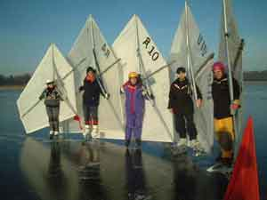I mitten av december etablerade sig ett mäktigt
högtryck över Skottland och avbröt därmed höstens lågtrycksparad. Nu började
kalluft tränga ner även över södra Skandinavien och i v.51 var det flera minusgrader
kallt.
Torsdagen 20/12
Kvälls-skrillerekning på Krankesjön med Johan Nilsson och Mette. - 5º C, begynnande
snöfall, pannlampor. 4-5 cm blank hård is längst inne vid stranden som snabbt tunnade
ut till 2-3 cm, åkbart bara ett kortare stycke längs strandkanten. Johan blöt om ena
foten av någon konstig anledning.
Någon plusgrad under Fredagen, då det också
snöade lite. Temperaturen sjönk till -15ºC under Lördagen, och medlemmar rapporterade
om 3,5 cm istillväxt under natten och bättre bärighet på Krankesjön.
Söndagen den 23/12
Ca -5ºC, SV 3-4 m/s och uppehållsväder med höga,
tunna moln över Krankesjön. 2-3 cm lättforcerad snö med bra åkyta under.
Isläggningen lite ojämn med mestadels 7-8 cm tjock is men en del områden som lagt sig
senare, fågelvakar eller vindbrunnar, där isen var mer tveksamt bärig på 4-5 cm.
Rekade åkområde och hade trevlig segling under 4 timmar i stundtals lite klen vind. Blev
ordentligt trött i rygg och ben trots allt mer frekventa pauser. Avslutade med
skrillerunda runt sjön.
Under natten snöade det någon decimeter och
temperaturen började stiga över noll under julaftonsdag. En front kom in med nederbörd
och ökande vindar.
Måndagen den 24/12
Julafton på Krankesjön, någon plusgrad.
Istjockleken väsentligen oförändrad men nu låg snön decimetertjock, på sina ställen
drygt decimetern. Med seglarskrillor hade man dock inga problem med det, men vinden var
mycket byig och besvärlig. SV grundriktning och styrkan varierade från 3-4 m/s till 9-10
m/s och vindbyarna kom ganska häftigt med samtidiga vindvrid. Seglade med måttlig
kontroll under två timmar med endast en vurpa där jag förbannade min lathet att inte
sätta på armbågsskydden när nu vinden var lite trixig.
Senare på julaftonen kom mer snö och en ny front
med ordentlig vindökning, stigande temperaturer och rejält med regn. Själv jobbade jag
juldagen och "slapp" därför att utsätta mig för elementens raseri. Framåt
juldagskvällen klarnade det åter upp, vinden lade sig och temperaturerna sjönk till ett
par minusgrader.
Onsdagen den 26/12
Sol, -1ºC och SV 1-2 m/s på Krankesjön. Den myckna snön hade stöpt ner helt och kvar
fanns en måttligt knottrig, hård åkyta med ca 8 cm tjocklek. Åkte rekrunda först,
tidigare fågelvakar/vindbrunnar nu 6-7 cm tjocka och bäriga. Spår i den nedstöpta
snön efter isjaktsegling under juldagen – danskt besök? Riggade skrilleseglet, till
att börja med väl svag vind, men så småningom ankom en blyg SV vind på 3-4 m/s som
räckte till riktigt trevlig segling under ett par timmar innan jag fick bryta av sociala
skäl.
Torsdagen föll det lite snö och temperaturen
höll sig kring noll grader. Under Fredagen kom ett rejält snöväder in över Sydsverige
med snöfall på 2-3 decimeter. Undertecknad jobbade, men en trist rapport inkom från
Claes
Fredagen den 28/12
Rapport från Claes Nordgren
"Segling på Krankesjön den 28/12.4-5 m/s vind
från NO och halvklart väder. Isen täckt av ca. 4cm snö men hård och jämn is under
snön. Förutom jag var det några skridskoåkare på sjön. Seglade i 2,5 timme i ökande
vind. Vid 14:30 tiden hade vinden ökat till ca. 8 m/s och det började snöa. I en
bokstavligt talat rykande slör på väg in, är det en ojämnhet i isen, alternativt att
jag stötte i främre riggröret i isen. Det hela slutade med en våldsam vurpa som
orsakade en handledsfraktur. Efter diverse pusslande med rigg och andra tillhörigeter tog
jag mig till Lunds Lasarett där jag blev ihop-lappad av en kollega till dig (Per-Ola
Norrman). Några spikar med tillhörande skena på utsidan blev resultatet. Tyvärr
slutseglat för en tid framöver. Det känns hårt nu när Kung Bore har förgyllt vår
tillvaro med kyla och is."
Förutom tidigare blåmärken är detta såvitt
jag känner till första skrilleseglarfrakturen i klubbens historia, vilket inte gör det
mindre trist. Bidragande faktor till frakturen var blöt snö på isen som hindrade den
vanliga "undanglidningen" som mildrar effekten av ett fall. Claes lät efteråt
hälsa att han mådde bra men retade sig över att han skulle missa god segling. Om man
kan dra någon lärdom av detta är det kanske att vara noggrann med rekning av
åkområdet, inte bara istjocklek och att vara försiktig vid snötäckt is där sprickor
och hinder kan döljas. Även undertecknad blev varse detta ett par dagar senare.
Under helgen sjönk temperaturerna ytterligare, ner till
-10ºC. Snöläget inbjöd mer till längdskidåkning än skridskor, vilket bland annat
undertecknad utnyttjade på Kungsmarkens golfbana Lördagen och Romeleåsens golfbana på
Söndagen. Söndag kväll kom överraskande rapporter om nedstöpt snötäcke på
Vombsjön, vilket naturligtvis fordrade en kontroll! Nattens temperaturer sjönk dessutom
ytterligare.
Måndag den 31/12
Sol, klart, diskret Västvind på ca. 2 m/s. Rekning av Ringsjöarna, där det var -20ºC
kl. 10 på förmiddagen!! Isen på V. Ringsjön decimetertjock med ett 2-3 dm tjockt icke
faststöpt lager med löst liggande pudersnö ovanpå. Ö. Ringsjön tunnare, 5-6 cm med
stöp och överis, men bara mindre yta kollad. Omgruppering till Vombsjön, där ett
dm-tjockt snölager låg utanför badplatsen på västra stranden, med tendens till
överis och misstänkt underfrätning, 4-5 cm tjock is. Vombsjön är inte sällan ojämnt
tjock ute på ytan. I Sydvästra hörnet av sjön låg dock ett stort område med dm-tjock
is med lätt skrovlig, hård yta, där snön alltså helt stöpt ner. Rekade av en rejäl
yta i sällskap med en långfärdsskrillande medlem och riggade därefter seglet. Jämn
VNV vind på lite drygt 2 m/s, men kanske beroende på kylan bra "tryck" i
vinden (kall luft innehåller fler molekyler än varm!) och sålunda förvånande god
fart. På något ställe en isspricka kring vilken viss överis fanns, och den sprickans
utbredning hade jag inte rekat tillräckligt noga. Med påföljd att skridskon högg fast
och jag beskrev en parabel med en allt annat än graciös landning på höger
höftbenskam, som framemot kvällen skimrade i vackert rödblåa nyanser. Lyckades också
köra skridskon genom seglet, som fick tejpas.
Liknande vurpa som Claes, fast med mindre påföljder kan
man säga. Jag hade ändå mycket bättre sikt och borde kunnat hålla reda på var på
den rekade ytan jag befann mig. Om man sätter en bana går det ju mycket lättare att
hålla sig orienterad, så det bör man kanske göra oftare….
Nyårsdagen (tisdagen) steg temperaturerna till
+5-6ºC och kulingvindar upp till stormstyrka svepte in över Skåne. 26 graders
temperaturskillnad på ett dygn! Jag var i Köpenhamn nyårsafton och kunde se havsisar
kring Saltholm och i Höllviken på tåget hem över Öresundsbron, men havsisarna bröts
till stora delar upp av stormvindar och vågor. Redan på Onsdagen trängde ett nytt
högtryck in så att temperaturen sjönk under noll igen och vinden avtog. Lyckliga
skrinnare kunde konstatera att plusgraderna gjort underverk med isarna där snön nu
stöpt ned.
Onsdagen den 2/1
Sol, klart, -8ºC och NV 2-3 m/s på Vombsjön. Drygt decimetertjock is med en del
områden med knaggel efter stöpningen. Riggade vid 14-tiden och seglade till solnedgång
vid 16-tiden. Jämn vind och trevlig segling, segellagningen höll! Avslutade med en
rekrunda på Krankesjön i skymningen på hemvägen. Mer än dm tjock is och hård bra yta
med måttligt knaggel.
SIK-medlemmen Joakim Lindhé jobbar på Sydnytt
och undrade om de kunde få göra ett reportage om skrillesegling, och det är ju klart
att de fick! Högtrycket låg kvar mitt över Sverige med sin kalluftmassa, men tyvärr
också mycket svaga vindar.
Torsdagen den 3/1
Sol, klart, -8ºC och vindstilla på Vombsjön. Ett
antal klubbmedlemmar ute på tur, bl. annat Mats Johansson som hade riggen med men
avvaktade eventuell vind. Johan Nilsson och Mette tog också en tur i väntan på
eventuell vind. Leif Wessel och jag riggade seglen och pratade med Joakim som hade med sig
fotografen Mats. Tyvärr uteblev vinden helt och efter två timmar avbröt vi för att
eventuellt få riktigt rörliga bilder nästa dag. Precis när TV-killarna åkt kom Johan
och Mette tillbaka efter att ha korsat sjön. Mitt på sjön hade de hittat ett helt
utmattat rådjur som varken kom fram eller tillbaka på den hala blankisen. Den
handlingskraftige skrilleseglaren Nilsson surrade då raskt ihop klövarna på rådjuret
och åkte tillbaka till stranden med djuret på axlarna. Vi släppte rådjuret på fast
mark, där det lite lätt vingligt skuttade iväg mot närmsta skyddande dunge.
Riggade ner och åkte till Ringsjöarna för att reka.
Mer än decimetertjock is på Västra Ringsjön, men mycket vallar, knaggel och annat
skräp kvar efter stöpningen. Hängde med ett gäng från klubben över på Östra
Ringsjön, som även den var drygt dm-tjock men hade betydligt jämnare yta. Blev uppringd
av Johan, som nu hoppat i vårat spaningsplan SE-AWL (Piper Cub från 1944). Efter ett tag
kom han i vacker rote med Mattias Jönsson i SE-KPS cirka tio meter över isen. Johan
landade på isen utanför Bosjökloster, jag tog av skrillor och ryggsäck och tog över
spakarna. Vi gjorde ett rekognoseringsvarv över Västra Ringsjön och kunde konfirmera
usel isyta, något bättre vid kanterna, särskilt i viken vid hingststuteriet.
Sätoftaviken och Östra Ringsjön låg utsökt jämna och fina. Ny landning på isen, jag
spände på skrillorna och ryggan igen medan Johan flög till Eslöv för tankning.
Var på besök hos kusin Gunnar i Falsterbo på kvällen,
där vi efter kvällsvarden åkte Skanörs soptipp- Kanalhamnen t.o.r. i månskenet. En
lätt västlig vind gav lagom pulsökning vid stakningen på hemvägen, och lovade gott
inför morgondagen. Mycket stämningsfullt med ljusen från Höllviken, Malmö och
Öresundsbron i fonden.
Högtrycket höll envist emot men prognosen lovade
lite vind, varför Joakim och jag kom överens om att göra ett nytt filmförsök.
Fredagen den 4/1
Sol, klart, -3ºC och Väst 3-4 m/s på Krankesjön. Mycket folk på sjön med barn,
hockeyklubbor, hundar, grillkol, matsäck m.m., kort sagt; publik! Efter snabb riggning
kunde konstateras superförhållanden!! Hård isyta med minimal friktion och ovanligt
jämn vind. Filmning i olika vinklar med mikrofon ombord (brukar jag svära över Guano?)
innan och under segling, intervjuer med en massa pinsamma frågor som "-Hur hinner
man med att både segla och jobba?" osv. tills fotografen förklarade sig nöjd.
Även Johan Nilsson riggade "sitt" segel (kompletterat med lånesegelprylar) och
inför kameran jagade vi sedan varandra över sjön. Kusin Gunnar anslöt med sitt segel
och vinden ökade till 5-6 m/s, fortfarande härligt jämn. Efter lite trimningsbestyr
hade vi lika bra fart- Brandt seglen går mycket fort!
Efter 5 timmars segling var man lite trött. Mycket
förnöjsam nerriggning och bara glada, om än trötta, miner! Hans Gustavsson
rapporterade fin is och likartad vind även på Yddingen, där han seglat under
fredagseftermiddagen.
På fredagskvällens sydnytt sändning visades ett
excellent inslag på två och en halv minut från dagens skridskosegling. Fortsatt
högtrycksväder utlovades. Undertecknad hade förhinder (i form av heldagsrepetition med
soulbandet "Lazze Lidgrenz)", men Daniel tog på sig att ordna lite "Guano
Cup" seglingar på Östra Ringsjön.
Lördagen den 5/1
Sol, klart och några minusgrader vid Östra Ringsjön. Daniel Nerhagen, brorsan Erik
Nerhagen, Kusin Gunnar Åstrand, Leif Wessel med dotter Anna och Hans Gustavsson mötte
upp, liksom enligt obekräftade uppgifter en kille från Umeå(?) med rigg, segel och
allt. Tyvärr helt vindstilla och inga seglingar kunde genomföras utan man fick hålla
tillgodo med skridskoturer. En vacker fotodokumentation av seglare + segel skickades dock
till undertecknad.
Mats Johnsson och Pontus hade lite bättre vind på
Yddingen och kunde glida fram mellan en väldig massa skridskoåkare varav många
uttryckte nyfikenhet och intresse. Vindstyrkan låg på ett par sekundmeter, kanske tur
det inte var mer eftersom det tydligen nästan var trångt på isen.
Men nu var en lång och härlig period med kyla
till ända. Maritim varmluft trängde in från väster vilket innebar dimmigt, fuktigt
väder. Men prognosen lovade måttlig västlig vind, så det utlystes Guano Cup- seglingar
på Vombsjön till Söndagen.
Söndagen den 6/1
Dimmigt, fuktigt, +3ºC, VNV 3-6 m/s. Isen decimetertjock men det översta lagret av
stöpt is var mjukt och blev under dagen mjukare och mjukare. Vatten på isen, upp till 4
cm. Lite trixiga seglingsförhållanden med ganska byig vind och olika mjuk is som
emellanåt "högg tag" i skridskorna ordentligt och både bromsade och orsakade
en del balansproblem. Förutom undertecknad var Mats Johnsson, Johan Nilsson, Hans
Gustavsson, Gunnar Åstrand och Carl Ramel där och riggade segel. Carl premiärseglade
sitt egenhändigt sydda segel med egenkonstruerad rigg- mycket imponerande! Hans likaledes
egenkonstruerade seglarskrillor havererade dock snöpligt vid "torrsegling"
kvällen innan….Dessutom riggade "hangarounden" Joakim Hindemith
undertecknads DN-jakt som han seglade med ganska varierande hastighet, kan man säga.
Tvåvarvsbana sattes för några Guano Cup seglingar där Katrin Åstrand och hunden Signe
fungerade som funktionärer. Hans och Johan avstod att tävla efter vurpor som gjort dem
båda dyblöta- och kalla!
Race 1
Start med Mats som hare, Gunnar direkt i ledning med bra fart på kryssen som han drygade
ut med listiga slag på vindskiftena. Avstånden ökades ut under de två varven och
Gunnar var hela två slörar före i mål. Mats tvåa, Jörgen trea och Carl fyra.
Race 2
Jörgen hare, skiftande positioner under första kryssen varefter Gunnar drog ifrån igen.
Gunnar 1:a, Jörgen 2:a, Mats 3:a.
Vinden avtog under sista heatet och isen mjuknade mer och
mer varför vi sedan bröt för dagen och plockade in flaggorna. Sedan blev det fika med
sammanfattande diskussioner, där alla utom Gunnar var överens om att
seglingsförhållandena var utomordentligt orättvisa och inget som en riktig
skrilleseglare kan uppskatta. Dessutom fastslogs det regelvidriga i att delta i Guano Cup
race utan någon som helst segelmärkning (Gunnar hade inte ens märkt att han saknade
märkning), vilket enligt alla statuter skall leda till diskvalifikation. Efter att ha
mekat ner riggar och DN-jakt åkte vi hem för att hänga upp det mesta av det medhavda
på tork!
Under den efterföljande veckan stabiliserades ett
trist väderläge: ett kraftigt högtryck över Centraleuropa pumpade in mild, fuktig luft
över Skandinavien. Temperaturerna låg kring 2-4ºC på dagarna och runt
nollgradersstrecket på många ställen under nätterna. Vädret var grått, dimmigt och
vindfattigt. Långfärdsåkarna utlyste tur på Immeln i brist på Centralskånska
israpporter. Undertecknad åkte ut till Krankesjön på vinst och förlust under
lördagseftermiddagen för att kolla isen.
Lördagen den 12/1
Dimma, +2ºC och V ca. 2-3 m/s på Krankesjön. Isen överraskande bra, drygt
decimetertjock, svart kärnis utan nämnvärda mängder vatten och hård, slät åkyta.
Riggade och seglade ett par timmar med hyfsad fart innan vinden mojnade. Åkte ett varv
runt sjön tillsammans med sent anländande Johan Nilsson som avslutning.
Samma prognos för Söndagen med utlovad vind på
3-5 m/s, rapporterade på isobservationssvararen och utlyste seglingar på seglarsvararen.
Hann tyvärr inte kolla Vomb- och Ringsjöarna, som mycket väl kan ha haft fina åkytor.
Ringde och tipsade lite seglare, men ex. Daniel och Erik var fast i ett
vinds-isoleringsprojekt och min käre kusin skyllde på att hustrun förbjudit honom
(d.v.s. han var rädd för att få stryk i nästa Guanokappsegling).
Söndagen den 13/1
Dimma, +2ºC och mycket trixig vind på Krankesjön. Allt från stadig 4 m/s i
pustar om 5 minuter till vindstilla, vindriktning varierande 30-40º. Således intressant
uppgift att sätta bana, och lika knepigt att segla runt den! Ännu större
Guanomängder, som nu låg deponerat i högar. Man undrar hur det står till med
matsmältningen hos den skånska gåsbefolkningen. Annars var isen lika fin som dagen
innan, kanske lite mer vatten på ytan. Min isborr är 15 cm lång, den gick inte igenom
isen. Johan N och jag där med segel, ett knappt tiotal medlemmar till utnyttjade den fina
isen. Seglade sammanlagt 6 varv- nyttigt i den knepiga vinden. Avslutade med skrilletur
ett par varv runt sjön när vinden lagt sig.
Det mäktiga högtrycket över Centraleuropa
började nu långsamt dra sig åt sydost. Det lämnade ett alldeles för stort utrymme
för mild atlantluft, så efterföljande vecka fortsatte milt och fuktigt väder med en
trist lågtrycksparad. Enstaka nätter låg temperaturen strax under noll vilket kan ha
minskat isavsmältningen.
Torsdagen den 17/1
Kvällsrekognoscering på Krankesjön. Dimma, SV 2-3 m/s, +3ºC. Drygt decimetertjock is
med hård, jämn yta och någon centimeter vatten. Skrilletur längs norra och västra
stranden.
En lyckad utskjutning från jobbet redan vid
14-tiden möjliggjorde en rekognosceringstur till Västra Ringsjön fredag eftermiddag!
Fredagen den 18/1
+3ºC, SV 3-5 m/s, dimma/dis som emellanåt lyfte och avslöjade de avlägsna stränderna,
tunnare molntäcke som emellanåt visade lite blå himmel och senare afton rodnad. Isen
drygt decimetertjock, jämn hård åkyta med någon centimeter vatten. Delvis öppen
nord-syd gående råk som var lätt att urskilja på den jämna, vatten täckta isen, som
inte hade några större slukhål. Trevlig segling under ett par timmar i den måttligt
byiga vinden. Testade "tandemsegling" med Malin som långfärdsskrinnande,
fastklamrad fripassagerare. Bra fart och hisnande skojjigt, men fodrar stadiga fötter och
stark rygg!
Prognosen lovade snöblandat regn och sydlig vind,
vi utlyste seglingar på Västra Ringsjön på Lördagen. Undertecknad hade
jourtjänstgöring och blev lite försenad…
Lördagen den 19/1
+4ºC, dis/dimma och SSV 4-6 m/s med byar upp till 7-8 m/s på Västra Ringsjön.
Vindvrid med ojämna mellanrum ner på Syd. Isen fortfarande drygt decimetertjock med
hård, jämn guanofri åkyta med någon centimeter vatten på. Regn som kom och gick och
fram på dagen blev mer ihållande snöblandat. Inga semesterförhållanden för
sillmjölkar precis, men ett antal peppade seglare mötte upp utan att bry sig om det sura
vädret; Daniel med brorsan Erik, Mats Johnsson med sonen Johan och kusin Gunnar, som nu
insett att det inte går an att gömma sig i stugvärmen som en annan räddhare. Rätta
takter, pågar!! När jag seglade ut på sjön var tvåvarvsbanan satt (efter att ha
ändrats tre gånger på grund av vindvrid) och första Guano cup-racet var redan igång!
Race 1
Skiftande platser på första varvet, men Daniel i genomgående ledning. Efter andra
kryssen ledde Daniel med 100 meter, men Erik fick riktig rökarfart med sig ut på sista
slörarna och klämde sig före med någon meter in i mål! Mats och Gunnar hade ett
intressant uppgör en bit efter där Gunnar drog längsta strået.
Race 2
Det snöblandade regnet ökade och ett slasklager började lägga sig på isen. Gunnar
hare, Daniel omgående upp i ledning men övriga fältet i mycket skiftande positioner
under första kryssen. Erik och jag hade bättre fart på slörarna men Mats och Gunnar
tog sig ikapp igen på andra kryssen, som var lika skiftande och spännande som första.
Vid varje slag var det en ny gubbe uppe på andra plats. Efter andra kryss låg Mats
tvåa, Erik trea, Gunnar och jag sist. Vinden hade vridit, så första slör var mycket
brant. Jag fick bra fart med ut på slören och drog förbi Gunnar och var ikapp Erik,
samtidigt som Mats ramlade i gippen. Jag hade hållit mig i lovart om de andra och hade
därför bättre drag i seglet, men visste inte om den delvis öppna råk upp i lovart om
första slörbenet, som var svår att se i snöslasket med snö och regndroppar på
skidglasögonen. Farten var alldeles för hög för att hinna stanna eller svänga, jag
hann bara lyfta seglet innan skrillorna försvann ner i vattnet. Som tur var fastnade jag
varken med ben eller skrillor i råken utan gled helt odramatiskt vidare på isen på
andra sidan medan smältvattnet på isen med 60 km/tim sköljde över mig. Daniel etta,
Erik tvåa, Gunnar trea, Mats fyra och jag dyblöt jumbo.
Mats åkte in med den blöte sonen och Erik aviserade att
han var helt slut i benen. Vi snackade lite taktik medan vi väntade på om sonens
kroppstemperatur skulle medge att Mats kunde återkomma. Vi fyra stack upp mot
slörmärket och testade ett samtidigt slörben ner till lämärket. Gunnar startade
först och jag efter, passerade i lovart men gick alldeles för snävt framför, krokade i
och fick därmed ett smältvattensbad till. Annars var farten ganska jämn mellan oss
alla, så vi hade kollektivt fått till hyfsat bra trim på seglen. Gunnar körde någon
extra trimningsrunda och vurpade klantigt en skrilla genom seglet. Vilket händer även
erfarna seglare, faktiskt.
Race 3
Gunnar hare, Daniel åter direkt i ledning. Tyngre segling med mer åkmotstånd i slasket.
Vid första kryssmärket gav Erik upp med begynnande mjölksyrecoma och Gunnar ramlade och
bröt akterlattan. Daniel etta, jag tvåa.
Roliga seglingar och kul med en inspirerad Daniel i
gammalt gott slag, även om motståndet kanske inte var det allra vassaste. Men nog såg
både hans starter, slag och vägval till märket ut att vara av toppklass. Jag och Daniel
samlade in rundningsmärkena. Vid inseglingen kunde vi konstatera att jag går otroligt
lågt i vind för babords halsar jämfört med Daniel, så det kanske inte var så
konstigt att det i alla fall för min del blev mycket skiftande positioner under
kryssarna. I avsaknad av klubb bastu med fullständiga utskänkningsrättigheter fick vi
även rigga ner i regnet och det blev lite blött även för fika, faktiskt. Men alla var
mycket nöjda med himla skojjig och jämn segling som verkligen gav mersmak!
Några medlemmar som hade Söndagen fri
rapporterade bra, upptorkad is på Krankesjön, men vinden var kanske i friskaste laget
för segling. Alla vi som hade förhinder (själv jobbade jag faktiskt….) noterade
detta med viss tacksamhet. Väderprognosen talade om friska vindar och fortsatt mildväder
hela veckan. Eftersom det var osäkert om isarna skulle klara hela veckan var jag bara
tvungen att segla igen på Måndagen.
Måndagen den 21/1
+6º C, disigt med lågt, tunt molntäcke och enstaka
skurar med duggregn över Västra Ringsjön. VSV 10-12 m/s, isen fortfarande
decimetertjock, hård och jämn med endast ett tunt lager vatten och ändå ingen
särskild tendens till smältvattens rillor. Åkte en rek runda på skrillor, förutom den
delvis öppna råken tvärs över sjön som gick att passera invid sydstranden
utomordentlig is över hela sjön. Riggade DN-jakten med min lilla ca 2 m² stora
"stormlasen", ett omsytt gammalt surfsegel. Fullt tryck med denna lilla näsduk,
flera lyft på två medar och hiskelig fart. Seglade bort till västra änden av sjön,
som var råkfri och måttligt knagglig, men som jag sett vid tidigare flygspaning (se 3/1)
var isen i viken vid hingststuteriet särskilt jämn och fin. Inte ett klapper från
medarna, bara ett stilla väsande från vattenpölarna på isen när de skars upp av
medarna. Två havsörnar som satt och tog en middagslur ute på sjön blev skrämda halvt
från vettet när jag visslade förbi på ett par meters avstånd- själv blev jag lika
häpen när de vecklade ut sina imponerande spann och ovigt lyfte upp mot vinden eftersom
jag på håll trodde det rörde sig om två feta (men lite märkligt kutryggiga?) gäss
som satt och förorenade den annars så härligt guanofria isen. Ringde upp kusin Gunnar
under en rykande slör. Han brukar nämligen uppskatta att få tala med en klapprande
lämed en stund (ett s.k. med-delande…) "-När jobbar du egentligen?"
undrade han och jag fick tjuta för att överrösta fartvinden; "-Nån annan
gång!"
Framåt tvåtiden mojnade vinden markant, och jag seglade
in till en fikapaus. Då dök Malin upp som slitit sig från eftermiddagsgöromålen.
Riggade utlånings-skrilleseglet som detta kvinnliga vindsurfing geni retfullt enkelt
bemästrade trots totalslöa skrillor. Det blåste kanske 3-4 m/s och jag riggade det
stora DN-seglet- och fick nästan ännu bättre tryck i grejjorna. Nu var vi två som
seglade rundor på sjön under stoj och glam. Mycket bekvämt att instruera skrillesegling
liggande i en löst hemskotad DN-jakt, fast ibland kändes det som Malin kanske inte
uppskattade att jag försökte hjälpa till med uppmuntrande tillrop som "-Sådär
sopigt skall du väl ändå inte segla- skota hem så du får lite fart!"
"-Jamen du kan väl försöka stå på bara en skridsko trots att de kanar i
sidled hela tiden?" osv.
Malin blev lite trött i benen efter ett tag, så hon
fick lägga sig och vila en stund i jakten. Jag sprang igång som vanligt och inte gick
det så mycket långsammare när vi var två ombord! Efter några rundor tog Malin en ny
dust med skrilleseglet, samtidigt som det började skymma och månen tecknade en skimrande
gata i isen genom de tunna molnstrimmorna. När vi seglade in drog jag ett varv runt yttre
vassruggen utanför "Gamla Boo" i bra fart. De stenar som ligger där hade
eroderat igenom isen men var svåra att se i skymningen. PANG- sa det i vänster meden-
så skaffade man sig lite jobb med medslipning…..
Riggade ner i kvällsmörker, medan jag skänkte en
tacksam tanke till Johan Nilsson för föllsepresenten pannlampan!
Fortsatt mycket milt väder med lågtryck på
lågtryck, talrika regnskurar och temperaturer kring + 6-7ºC under tisdagen och onsdagen
kombinerades med friska vindar över 10 m/s. Stack ut på rek runda på Torsdagen fylld av
farhågor….
Torsdagen den 24/1
+7ºC, SV 5-6 m/s, regnskurar. Västra Ringsjön hade gått upp, åkte en kort runda på
kvarvarande is längs södra stranden. Hård yta men tjockleken varierade mellan 10 ner
till 5 cm och kvaliteten imponerade inte, på flera ställen gick piken igenom på ett
enda löst slag. Avbröt och höll på att plurra vid ilandhoppandet från den landlösa
isen- stenen jag steg iland på var lös! Kollade även Östra Ringsjön och Krankesjön,
som båda också hade gått upp. Trist att inte lite mer kalluft hann komma ner och bygga
på isarna som ju faktiskt ändå klarade att stå emot nästan 3 veckors blidväder.
Totalt varade denna isläggning lite mer än 4 veckor, och det är ju faktiskt inte så
illa!
Konfererade med veckans israpportör Lars
Carlstedt medan regnet piskade rutan utanför. Rapporter från kollegorna i
Olofströmstrakten och från rekning av Tydingen var också dystra med mycket landlöshet,
mjuk yta och tveksam tjocklek. Meterologerna hade lovat kyla till Fredagen men detta lät
nu mera tveksamt. Men Pia Henke som gick ut med telefonen i hand högg sig ner ca. en
decimeter i Möckelns is utan att komma igenom, så det blev raskt beslut om
rekognosceringstur dit! Allvarligt skrilleseglingsbitna Malin hängde med.
Fredagen den 25/1
-2ºC, sol och NV 10-12 m/s på Möckeln. Isen
mestadels decimetern tjock med en del tunnare partier, ner mot 7 cm. Ytan hård och
småknottrig som tillfryst snöblandat regn. Enstaka öppna partier vid råkar och
småsprickor. Prognosen talade för vindmojning, så vi började med en rejäl skrilletur.
Åkte från Torstens trädgård på Möckelsnäs, som rundades utan nämnvärt hinder av
den annars obligatoriska råken vid näsets spets. I den hårda och byiga vinden korsade
vi över till västra stranden, där isen var fin och åkningen komfortabel i lä av
skogen. Fika i solgasset på en brygga, fortsatte sedan en bit norr om Sikareveln innan vi
vände och hade en härlig medvindstur tillbaka. Riggade låneskrillesegel och isjakten
med stormlasen. Malin hade det slitigt i den mycket byiga vinden som vred 90º med ojämna
mellanrum och inte visade några som helst tecken på att vilja mojna. Jag stack ut på
"storsjöflaket" med jakten för att få lite fri vind, men tvingades för att
komma fri Möckelsnäs ganska långt ut på sjön, där en råk med ett par meters öppet
vatten lurade. Mycket bra fart och drag där, men också mycket svårt att hålla reda på
var man befann sig i förhållande till råken, så jag begränsade mig till några, lätt
nervösa, repor innan jag seglade in igen.
Pia Henke bjöd på kaffefika när vi riggat ner. Väl
utkomna från denna trevliga övning lyste en nästan full måne från en stjärnklar
himmel så det blev tydliga skuggor och sjön låg bedövande vacker i den stilla- nu
även vindstilla- kvällen. Vi var bara tvungna att sticka ut på en skrillerunda till!
Kusin Gunnar hade via en jobbkontakt i Kalmar
fått reda på att en av de flitiga isjaktseglarna i seglarklubben Kaparen hade en
jättefin isjakt till salu. Efter den här dagen var jag på riktigt shoppinghumör och vi
körde därför till Kalmar där Jan Cederblad välvilligt lade sin fredagskväll på att
visa sin högklassiga hembyggda isjakt- som han omgående blev befriad ifrån!
Beredskapsläge för skrilleåkning/issegling intogs med övernattning i Karlskrona, även
om prognoserna talade om otrevligheter som plusgrader och snöfall, vilket visade sig
stämma. Jan hade hört rykten om bra is på sjön Läen vid Lessebo, så vi styrde kosan
dit på Lördagen trots vädret.
Lördagen den 26/1
Ymnigt snöfall och någon minusgrad som vid lunch abrupt avlöstes av ett par plusgrader
varvid nederbörden gradvis övergick i regn. Drygt decimetertjock is med delvis öppna
partier på sjön Läen, men också knappt decimetertjockt lager med snö, som snabbt blev
mycket kram och tung. I sagda snölager lyckades jag tappa bort nyckeln till takboxen, som
dock återfanns. Expeditionsstyrkan vägrade ge upp planerna på skrilleåkning och vi
lyckades även staka oss tur och retur någon kilometer. Ett skrillesegel riggades lagom
till den sista vindpusten för dagen dog ut- tyvärr! Den medhavda massäcken drog då
istället till sig intresset…..
Resterande del av dagen och stor del av natten och
morgonen regnade det. Enligt Pia hade snön regnat bort på Möckeln. Efter en ny
övernattning i Karlskrona åkte vi till Möckeln igen.
Söndagen den 27/1
+3ºC, uppklarnande och NV 4-7 m/s på Möckeln. Isen jämn och hård men med vatten i 1-4
cm tjockt lager. Tjockleken varierade mellan 10 cm ner till 6-7 cm (ett pikslag genom
isen, med tillhörande spröda knakningar…) på sina ställen, så man hade inte
odelat förtroende för hela sjön, särskilt som en del öppna råkar ökat i storlek.
Avstod därför under viss mental ansträngning från att rigga och testa nya isjakten,
men ett mindre område rekades noga innan låneskrilleseglet riggades för lite
"skrillesegel-workshop". Malin hade lättare att kontrollera seglet nu även om
skrillorna blivit slöa igen. Lotta och Pablo fick också testa och fick snabbt kläm på
hur det går till. Torsten Henke kom ut med skrillorna på för en
"skrillejoggartur". Nerriggning skedde i mörker som vanligt, under viss
tillfredsställelse av att i alla fall utnyttjat befintlig is (på rimligt avstånd)
maximalt!
Den myckna nederbörden hade gett ordentliga
översvämningar i Skåne, där Kävlingeån blivit en flod, Ringsjöarna ett hav, etc.
Värst utvecklades läget sig vid Finjasjön och längs Helgeå, där fördämningsvallar
fick byggas i Kristianstad. Mildvädret fortsatte med temperaturer mellan +5-10° C och
plusgraderna sträckte sig upp i Norrland. Men Torsdagen den 14/2 hittades åkbar is i
Ekolnsundsviken vid Enköping, och SM utlystes till efterföljande helg. Daniel, Erik och
jag åkte upp, Leif Wessel och Gunnar Åstrand lämnade återbud efter det korta varslet.
Jag hade jour fredag natt, men efter diverse förhandlingar med förstående(?) kollegor
kunde vi resa tidigt lördag morgon. Väcktes av Daniel kl 04 efter att ha missat
väckarklockan under en natt sönderhackad av diverse telefon samtal. Mötte bröderna
Nerhagen i Örkelljunga kl. 05.00 och efter en stundtals laglig bilfärd anlände vi till
depån kl. 10.15.
Lördagen den 16/2
SM i skridskosegling!!! Sol, +4° C, V 5-12 m/s på Ekolnsundsviken, som var täckt med
ca. 15 cm tjock is med hård yta som mjuknade mer och mer frampå dagen och högg mer och
mer i skridskorna. Vi riggade snabbt och seglade från depån/parkeringsplatsen (som låg
vid lovarts stranden) de cirka 2 km ner till startområdet. Runt 25 deltagare ställde upp
i den byiga vinden som ökade mer och mer i både styrka och byighet.
Race 1
Start med Lars Frommelt Ö 2 från Örebro som hare. Jag blev i starten omseglad i lovart
av tre snabbare seglare på nära håll och vurpade i det jättehål i vinden som de drog
upp, varvid bakpinnen knäcktes. Man skall ju inte skylla ifrån sig, men reflexerna var
väl kanske inte de allra vassaste efter nattens övningar….Mycket mödosam
insegling/åkning med ett fladdrande segel de två kilometrarna till depån i den kraftiga
byiga motvinden, där jag bytte pinne och kunde konstatera att akterbeslaget gått
sönder.
Förutom tätklungan där omöjlige Alexander Sahlin
faktiskt fick kämpa i början för att hålla undan för Micke Brandt från Uppsala,
skiftade positionerna mycket under kryssarna eftersom höjdtagningen påverkades mycket av
hur seglarna lyckades "ta" vindbyarna. Erik seglade in som 11 och Daniel som 14.
Under lunchpausen ökade vinden mer och mer. Nu var det snarare över än under 10 m/s i
medelvind….
Race 2
Start med Erik Femkamp, UKF som hare. Trångt i starten och svårt med kontrollen för
alla i de kraftiga vindbyarna som hade ett anslag likt en tung slägga. Det blev för
mycket även för min kraftigaste akterpinne, som strax innan första kryssmärket med en
ljudlig smäll skjuvades av på grund av mitt söndriga akterbeslag – mitt under
segling! Ny, ännu mödosammare inåkning med smattrande, lealöst segel i den ännu
kraftigare vinden…..
Alexander hade förstås inga problem och vann medan
Micke Brandt bröt eftersom han tyckte förhållandena var lite för farliga. På
slörarna blev farten hög och de häftiga vindbyarna i kombination med den ställvis
mjuka isen som högg fast skridskorna gjorde seglingen besvärlig. Daniel hade trimmat om
sitt segel och hittat kanonläget. Han gick som ett snälltåg på kryssarna och avslutade
genom att med full satsning vräka förbi en "safe-ande" Lasse Frommelt (som
inte vågade enbenssegla) på sista slören för en stark sjätteplats. Erik följde upp
med en 13.e plats. 14 stycken gick i mål, så jag var inte ensam om att tvingas bryta.
Stafetten fick ställas in på grund av den då kulingstarka vinden och den alltmer
mjuknande isen. De tappra funktionärerna som utgjordes av Claes Nerhagen och Alexanders
hustru Yvonne ("assisterad" av dottern Britta, drygt ett år, i pulka) hade
styvt jobb att ta sig hem på grund av vinden och isen, som nu snarare medgav promenad än
åkning.
Den traditionsenliga banketten avhölls på
kultiga kitchstället "Scandic" i Uppsala. Mycket motorhotell för pengarna!
Efter den av förbundet välvilligt subventionerade rustika måltiden vidtog prisutdelning
under traditionsenliga former. Inte ett enda pris utdelades utan minst en tillhörande
försmädlig kommentar av Micke Brandt till allmän förlustelse. Sedan hölls ett
rådslag där det beslutades att försöka köra ett par Sverige Cup seglingar på
Ekolnsundsviken under Söndagen. Vi åkte hem till Daniels och Eriks föräldrar, där vi
fick till en ganska förtroendeingivande reparation av mitt akterbeslag i Claes
välstrukturerade garageverkstad med hjälp av ett överblivet dammsugarrör. Med viss oro
somnade vi tidigt i det Nerhagska hemmet, där vinden tjöt olycksbådande under
natten….
Söndagen den 17/2
Sverige Cup seglingar på Ekolnsundsviken! Strålande sol, +4-5° C och VNV 5-6 m/s som
långsamt mojnade av under dagen och var betydligt mindre byig. Den mjuka stöpta ytan
hade smält bort och en fin, hård is på en dryg decimeter hade kommit fram. Men halva
tävlingsområdet hade gått upp under nattens kuling, det gick öppet strax söder om
banan! Som tur var låg en ovanligt välplacerad holme ivägen, vilket förmodligen
räddat vårt banområde från att brytas upp. Först testseglade vi Örebroklubbens
Skimbatsegel ("-Jaha, det var väl inte så svårt?" tyckte Daniel), sedan
seglade vi (ca 14 deltagare) ut till banan.
Race 1
Start med Lasse Frommelt som hare. Bra spridning på fältet, ganska jämn vind och bra
fart på slörarna. Alexander måste ha haft det ensamt därframme, men vi andra hade
himla kul med skiftande positioner på kryssarna. Emellanåt kunde man ta helt sjuk höjd,
nästan rakt mot vinden (kan det ha berott på vindvrid kanske?) och på så vis trängde
jag mig före Erik efter första kryss. Erik gjorde sedan en andra fantom kryss, gick
bäst av oss och kom in som 10:a, sedan Daniel och sedan jag, som inte lyckades bryta
Daniels reservbakpinne trots vurpa på andra kryssen.
Efter en mindre polsk riksdag beslutade vi att köra
nästa race direkt (även om Alexander var fikasugen, stackaren!) eftersom vinden mojnade
mer och mer.
Race 2
Start med Micke Flodström, UKF som hare. Betydligt mindre vind, kanske 2-3 m/s och hela
fältet gled värdigt iväg för styrbords halsar. Enstaka vindbyar slog ner och dom
gällde det att få tag på! Rätt vad det var fick någon del av fältet farlig fart, som
de skickliga seglarna sedan kunde vidmakthålla även i mindre vind. Erik gick bäst och
blev 9:a, Daniel 11:a ("-Och jag som alltid varit lättvindsräka!") och jag
lyckades inte heller denna gången bryta itu någonting utan kom in som 12:a, med
Argulander junior och veteranen Erik Dobert som eftertrupp.
Nu kunde ingenting stoppa den fikasugna
skridskoseglingseliten, som seglade in till depån.
Vi fotodokumenterade oss och packade motvilligt ihop för
att få lite mer tid för hemfärden. Man kunde tyvärr inte få till någon SM-stafett
eftersom reglerna säger att minst tre fyramanna lag från minst två klubbar måste
deltaga för att SM-status skall gälla, och bara SSSK och UKF hade lag. Himla synd att vi
inte hade med en seglare till- då hade SIK alltså tagit SM medalj i stafett!
Nu började det dyka upp en till två decimeter breda
sprickor i isen här och var, och en av dem fångade Sture Nyholms högerben upp till
ljumsken. Men han klafsade bara upp, gick vidare som inget hänt och berättade sedan om
när han och Alexander utvecklat en metod att korsa nybrutna rännor med hjälp av
sammanlänkade skrillesegel! Efter nedpackning tog vi farväl ("-Alltid lika trevligt
att få spö av dig, Alexander!") och anträdde hemfärden, där vi efter fika hos
undertecknads faderskap i samråd knattrade ner ovanstående reseberättelse på laptopen,
som följaktligen är nästan outhärdligt sann och som vanligt helt korrekt och objektivt
återgiven!
Jörgen Åstrand |
SIK´s
skrilleseglingslogg 2002-2003
Lördagen den 14/12
I andra veckan av december etablerade sig ett mäktigt
högtryck med ett utav flera centrum över Norska ”huvudet” och enligt
telefonrapporter från norska vänner i Bergen hade man fint högtrycksväder där hela veckan. Kalluft trängde nu ner från Ryssland in
över östra Europa i en gigantisk medsolssnurra och därifrån vidare upp över södra
Skandinavien med sydostliga vindar.
I vecka 50 var det flera minusgrader kallt, ner mot 10
minus i norra Skåne. Något varmare var det i södra delarna av Skåne och sannolikt var
det därför som Västra Ringsjön lade sig samtidigt som vår vanliga premiärsjö
Krankesjön. På Fredagen den 13/12 åkte klubbens energiske ordförande (och nyblivne
pensionär) Lars Carlstedt runt Västra
Ringsjön på fin blankis varför turer och segling utlystes där till Lördagen. Under
hattrullning på Fredagsnatten kunde jag dock konstatera ett visst snöfall (för inte har
man väl så mycket mjäll?).
Sol, -1°C och 2 cm snö på 5-6 cm kärnis, obetydligt
med ytskravel på Västra Ringsjön. Jag, Malin, Claes Nordgren och kusin Gunnar dök upp
med ordentlig seglingsabstinens. Långfärdsskrinnarna genomförde en 28 personers
”truppförflyttning” runt sjön, där det på förmiddagen var vindstilla, sedan
drog de vidare till Sätoftasjön. Vi åkte och rekade ute på sjöytan, jämntjockt 5-6
cm ut nästan till mitten av sjön. Satte en flagg för att lättare kunna hålla reda på
hur långt vi rekat.
Mats Johnsson var med och rekade men hade inte avsatt tid
att vänta på vind i dagsschemat. Vi åkte långfärdsskrillor och gled sedan
majestätiskt runt med seglen när en blygsam NO vind på 1-2 m/s ankom. Efter en längre
fika seglade vi ut igen vid 14-tiden samtidigt som en hög molnskärm drog in från
nordost. Nu ökade plötsligt vinden till 3-4 m/s och det blev riktigt bra häng i
grejjerna. Ingen hade tid att sätta bana (flaggor och borr var utlagda), vi var alla
alldeles för seglingssugna.
Mitt i alltihopa dök skrilleseglare Johan Nilsson upp
flygandes våran Piper Cub och blandade sig i leken på kanske 10 m höjd över isen.
Malin som seglade med nyfixad rigg till ett gammalt klubbsegel fick mycket bra koll på
enbensseglingen- tredje gången hon seglade… Många scener som etsade sig fast på
näthinnan och framemot skymningen dök en blodröd sol upp vid horisonten och belyste
molnen underifrån. Vi seglade till mörkret föll vid 16-tiden. Mycket glad och
uppsluppen stämning vid nerriggningen efteråt!
Prognosen lovade vindökning under
Söndagen och temperaturer fortsatt kring +-0 strecket. Vi
utlyste seglingar på Västra Ringsjön även under Söndagen.
Jörgen Åstrand/Å3 SIK
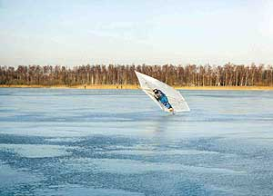
Söndagen den 15/12
Mulet, kring +-0 C och OSO vind ca 6-7 m/s på Västra Ringsjön. Isen
oförändrat tjock eller kanske en halv cm tjockare. Jag, Malin, Claes Nordgren och Leif
Wessel dök upp och riggade skrilleseglingsgrejjerna, medan jag som köpt en nyare isjakt
i våras riggade den för premiärtur. Det var en ganska byig och trixig vind, som dock
gick att bemästra.
Jag som var ovan vid moderna DN-master blev inte så lite orolig för mastbrott när
Marström-masten böjde ut fullt åt lä. Ruggig fart och även spektakulära bredsladdar
när man inte hann med att släcka på skotet i byarna. Seglade med skräckblandad
förtjusning över hela östra delen av sjön med stort inslag av ”the Ohh
Shit!-feeling” (citat av den tidigare skånebosatte amerikanske DN-seglaren Mark
Swanson) yes"
Under fikat vid 14-tiden sedvanligt skroderande tillsammans med Johan Nilsson och Mette som
anslutit för att ta en skrilletur i den friska vinden. Nu friskade det i ännu mer,
uppemot 10-12 m/s i byarna och ute på sjön syntes ”snow-devils” virvla upp. Vi
stack alla ut och körde lite till, men nu började det bli ganska svårt med kontrollen.
Ett par rejäla rökarkör hann man med innan vi seglade in- faktiskt utan att någon
seglat sönder något, varken material eller sig själva! Vi riggade ihop under gemytliga
former innan vi skiljdes under ömsesidiga förnöjsamhetsbetygelser.
Jag kunde inte låta bli att avsluta med ännu en skrillerunda i skymningen medan vinden
sopade delar av isen ren från snö och svanflockar svepte in för att slå nattläger vid
det öppna tillflödet i östra änden av sjön.
Under första delen av veckan låg temperaturen något över noll, något som jag på arbetsplatsen var lyckligt ovetande om. Malin som nu blivit ordentligt entusiastisk inkom med följande rapport:
” Må 021216: Krankesjön. Byig O-vind. 2-12 m/s. Tur att man hade varit ute lite i helgen annars hade det varit lögn för en nybörjare och fjäder som jag att kryssa runt mellan de 10 cm höga snövallarna som hade lagt sig med 2 m mellanrum. En utmaning som jag fick många minnen i form av blåmärken ifrån. Träffade en lustig filur som hade sitt morfars gamla segel från 1910
i bomull och bambupinnar. Tipsade honom om att höra av sig till Jörgen om han ville vara
med och segla i helgen. Tänkte att jag ju kunde lämna ut detdär omtalade telefonnumret
till dendär hemlighetsfulla telefonsvararen om jag bara visste numret......
För övrigt hade min kompis svanen
dött (Malin hade veckan innan hjälpt en utmärglad svan in till strandkanten(JÅ´s
anm.)).
Tisdagen 17/12
Västra Ringsjön, N. Utloppet till Östra Ringsjön var öppet och isen tunnare (ca 4-5
cm en bit utanför Gamla Boo). Blå himmel och sol. Något som jag inte är vidare
förtjust i då detta inte för med sig vidare mycket vind. 1 m/s HÖGST. Däremot en
fantastisk solnedgång och gnistrande is. Martin Karlsson - gammal klättrare - fick koll
på grejorna rätt så fort. Får ta med honom när det blåser lite mer.Tisdag kväll: en
stor händelse i mitt liv. Mina nya skrillor anlände!!!!”
Under veckan var det omväxlande
temperaturer, mest plusgrader förutom Torsdagsnatten då det var 8-9° minus. På
Fredagen var det åter varm fuktig luft från Nordatlanten som trängde upp med
Sydvästvindar, men prognosen lovade kyla till helgen! Malin och jag lyckades fly från
jobbet lite tidigare på Fredagseftermiddagen.
Fredag 20/12
Mulet, +3°C, lätt duggregn och SV 7-10 m/s på Västra Ringsjön. Isen 7-8 cm tjock med
mestadels hård yta belagd med någon cm vatten och en del icke helt nedstöpta
slaskpölar. En råk/isspricka utanför Gamla Boo krävde lite uppmärksamhet vid passage.
Malin och jag riggade vid 14-tiden efter en rekrunda på skrillor. Ganska byig vind gjorde
seglingsförhållandena besvärliga och man fick välja om man ville ha balans i seglet i
låg fart eller hög. Bra fart i grejjorna men kanske inte helt kontrollerat hela tiden.
Malin som seglade på sina nya 20 cm höga seglarskrillor fastnade med ena skridskon i en
slaskpöl och vred till knäet men fortsatte segla ändå. Vid 16-tiden blev det
ordentligt mörkt och övningarna avbröts, om än motvilligt.
Prognosen utlovade att en kallfront
skulle svepa ner över SydSverige på Lördagen, trycka undan varmluften och välsigna
Skåne med sol och minusgrader. Kusin Gunnar på väg i bil till Åre kunde konfirmera
kalluftmassan i höjd med Ängelholm även om det var mulet och duggregn i Lund. Malin
fick stanna hemma med ont i knäet (partiell medial kollateralligament distortion). Vi
utlyste segling på västra Ringsjön.
Lördag 21/12
Kallfrontspassage vid Västra Ringsjön, ingen nederbörd (tack och lov!) men sol och
sjunkande temeraturer ner till -2°C och- vindstilla! Claes Nordgren och jag rekade,
riggade och försökte segla, men det var nog ingen vindpust som kom upp i 1 m/s ens. Men
dagen var fin och det var fascinerande att uppleva hur vattnet på isen frös i grova
kristallmönster nästan utan att bilda överis. Åkte ett par rundor runt sjön med
långfärdsskrillor på mycket fin isyta.
Söndag 22/12
Sol, -4-5°C, ostlig vind ca. 2 m/s. Claes Nordgren seglade på V. Ringsjön, inget
riktigt häng i grejjorna i den svaga vinden men fint väder och lite folk på isen.
Måndag 23/12
Sol, -3°C och SO 6-7 m/s. Daniel seglade på drygt decimetertjock blank is på
Västersjön, där han passade på att segla om ett par likasinnade som seglade med kite.
Pontus och Mats Johnsson seglade på Yddingen, som var decimetertjock även den. Ute på
sjön fanns guanobemängda fält som Mats trodde att han rekat. Men när Mats och Pontus
seglade för fullt ute på sjön gick Mats igenom 3 cm tjock is, där fåglarna hållit en
vak öppen tills nyligen. Han fick hugga sig igenom ett antal meter till fast is och tog
sig upp utan Pontus hjälp, men rigg och segel sjönk plus en skridsko. Han fick promenera
in till stranden och ombytet, men var välbehållen i hemmet efter ett varmt bad.
Mats anmärkte på att det var mycket
tungt att simma med slalompjäxor. Det kanske är en god idé att segla med flytväst och
kanske man bör plugga rören så riggen flyter…
Kalluftmassan byggde upp ett
högtryck som gav ner till -30°C i norra Sverige, ett par minusgrader i Skåne och
klarade att hålla emot två- tre varmfronter som hamnade i väntlägen över Brittiska
öarna och Nordsjön. Prognosen för julafton lovade frisk sydostlig vind men inget
snöfall. Jag och Daniel kom fram till att Västersjön var lämpligast för julasegling.
På vägen upp noterade jag ordentligt med vind i Lundatrakten, över 10 m/s, men
Västersjön ligger tack och lov lite mer skyddad.
Tisdag 24/12
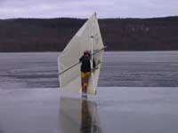
Mulet, -2°C och SO vind 5-10 m/s på Västersjön.
Isen drygt decimetertjock, torr och med fin yta med lite kristallmönster och stora
områden alldeles jämn isyta. Jag, Daniel och Erik riggade och satte en relativt kort
bana i östra änden av sjön. Efter ett par träningsvarv körde vi igång några
tvåvarvs Guano-race. Till att börja med var vinden 5-7 m/s med måttligt kraftiga byar
och vi hade alla ganska bra kontroll. Erik gick mycket bra på både kryssar och slörar
och efter jämna, roliga fighter mellan bröderna Nerhagen hade Erik tre spikar. Efter
andra rejset ringde Eriks mobil i fickan; ”-Varför svarade du inte när jag ringde
innan?” frågade en röst i andra änden. ”-Och släppa förbi brorsan? Är du
inte klok!?!?”
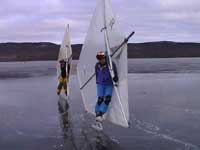
Vi seglade in till en fika där Claes (Nerhagen senior) anslöt
för synnerligt angenämt ljugande. Vi kom fram till att alla borde ha friktionsfri jul
och egentligen är man inte så mycket för (H)jul, mer för medar….
Efter fikat hade vinden ökat en del
och vridit lite på syd. Efter att ha fotodokumenterat oss stack vi ut och kollade lite
på vår vän kite seglaren som fick finna sig i att vara ganska betydligt långsammare
än vi med våra skrillesegel. Inte så konstigt egentligen med det större
parasitmotstånd man får med seglaren (och en massa linor) totalt exponerad för
luftflödet. Min skraltiga rygg hade nu ledat till sig och det var härlig segling med
riktig rackarfart på slörarna. Vindbyarna låg nu upp mot eller över 10 m/s och byarna
ryckte mer i riggen, särskilt på andra slören som nu var mera halvvindsliknande efter
vindvridet, samtidigt som första slören var väl brant och lätt att tappa fart på.
Daniel gick bra i den hårda vinden och vann nästa race efter en del skiftande
placeringar. Innan nästa race trimmade vi lite och jag tog hem ett nyp i
bomlikspänningen. Daniel var hare i nästa race och plötsligt upptäckte jag att jag
kunde gå 10° högre på kryssen än både Daniel och Erik- med samma fart! Hade bra
ledning vid kryssmärket till Claes förnöjda kommentarer. Men på andra slören fick jag
balansproblem när jag skulle lova upp till kryss från full fart och gick omkull. Daniel
passerade mig- men jag var nästan ifatt efter kryssen igen! Fast då visade Daniel sin
rutin, plockade med sig ordentligt med fart ut på slören- och blev omöjlig att fånga
in…..
Vi var nu ganska nöjda och började
bli lite trötta, så vi seglade in för att återgå till diverse julbestyr. Jag hann med
att provrigga isjakten (och sköra ett provisoriskt stormsegel) innan mörkret satte stopp
för vidare isäventyr- denna dag!
Malin som var i Karlskrona över
julen seglade utanför Hästö på fin is hela dagen fram till Kalle Anka. Hon träffade
även på lokala (icke organiserade!!!) skrilleseglare att segla med.
Högtrycket fortsatte att hålla den varma luften stången under juldagen. Men i gränsen mellan luftmassorna låg en kraftig sydostvind kvar över Skåne, som enligt dansk meteorologisk institut skulle avta under eftermiddagen.
Onsdagen 25/12
Sol, -2°C och SO vind 8-11 m/s vid Östra Ringsjön. Åkte en rekrunda med syster Lisa.
Tufft att ta sig ut i motvinden, hade inget att staka med eftersom jag klantigt hade låst
inne dubbelpiken i takboxen. Turligt nog hade syrran med pik. Isen 12-13 cm tjock, hård
och mestadels jämn. Någon km ut kunde man se en gräns där isen lagt sig senare, den
var fortfarande 7-8 cm tjock men alldeles fönsterruteliknande och svart. Ytterligare
någon km ut fanns en skruvisråk som var delvis öppen men gott om passerbara ställen.
Riggade först isjakten med ett nytt
provisoriskt stormsegel som inte hade rätt form så det vart lite svårseglat, kunde jag
konstatera efter en kort, yvig provtur. Efter fikapaus hade vinden mojnat av en smula,
kanske 6-9 m/s och jag riggade stora seglet. Mycket bra tryck i kabinen, särskilt ute på
svartisen där jag formligen flög fram med bra böj på masten. Vid näset till
Sätoftasjön låg tre-fyra örnar och flög hang på skogsridån vid stranden men avbröt
när jag blandade mig i leken. Inne i Sätoftaviken fanns många skrilleåkare (en del med
isdubbar…) och pimpelfiskare som oroligt vinkade avvärjande när jag kom dundrandes.
Träffade några långfärdsskrillande Stockholmare (Svante m. kompis) nere på Julfirande
som prisade iskvalitén och önskade fortsatt ”-God Jakt!” varpå jag fyllde i
”-…och en friktionsfri fortsättning!”. Drog sedan några härliga repor i
full fart i motsolskenet längs stranden vid Bosjökloster, men när jag efter ett tag
seglat över ett parti skravel-is i östra änden av sjön släppte plankan från jakten!
Tvärplankan på en isjakt är gjord
så att den skall släppa om man seglar på något. Möjligen släppte min planka lite
väl lätt. Det hela avlöpte utan haveri och jag lyckades få stopp på jakten utan att
tappa masten. Jag var några kilometer från ”depån” men lyckades segla hem
hållandes i plankan. Utanför depån hade jag lite svårt att bli av med farten och
svängde lite för tvärt varvid allting lossnade och masten föll av. Till de oroliga
tillskyndande skrilleåkarna kunde jag meddela att jag slog mig inte det minsta och inga
fler grejjer gick sönder. Efter nerriggning tog jag en avslutande skrillerunda i
skymningen med en härlig medvindslöpa som avslutning.
Nu begav sig det ståndaktiga
högtryckscentrat med all sin härliga vinterkyla iväg åt sydost, och Annandag jul
började varmluftmassan över Danmark i form av en varmfront tränga in över Skåne med
plusgrader, duggregn och dimma som följd. Vi utlyste segling på Östra Ringsjön.
Torsdag 26/12
Dis/dimma, mulet med tidvis duggregn och +2°C på Östra Ringsjön. SO vind på 3-5 m/s.
Jag och Claes Nordgren riggade direkt, åkte ut och satte en bana i västra viken utanför
Bosjökloster. Isborret (15 cm) gick nätt och jämt igenom den drygt decimetertjocka
isen, som var lika hård och jämn som under gårdagen men nu även fått en millimeter
vatten på sig, vilket gjorde den supersnabb! Vi körde tre tvåvarvsrace där vi
skiftades om att vara hare i starten. Positionerna skiftade lite under rejsen, men jag
hade lite bättre flyt på kryssarna och kunde efter ansenlig möda hålla Claes bakom
mig. Kul att segla bana, där man efter varje varv känner att man lär sig något nytt.
Till exempel straffade det sig många gånger att ”pina sig upp” mot
kryssflaggan- det är jätteviktigt att ha med sig bra med fart ut på slören, annars
går båda slörbenen för långsamt. Vind och is samverkade till helt perfekta
seglingsförhållanden, och det var lika overkligt varje gång man stannade efter fullt
tryck på slören bara för att i stillastående knappt kunna förnimma den svaga vind som
satte en sådan otrolig fart på en…
Lite trötta i ben och ryggar seglade
vi in för fikarast, då vi till vår glädje fick se att Thommy, klubbens oförvitlige
och anmärkningsvärt noggranne kassör äntligen slitit sig från räkenskaperna och
fått med sig seglet! Efter sedvanligt ljugande med utomordentligt låg sanningshalt stack
vi ut och körde i banan igen. Vinden hade nu ökat till 4-5 m/s men fortfarande undebart
jämn. Tre rejs till hann vi med innan ben och ryggar sade definitivt stopp. Det blev
jämnare och jämnare mellan mig och Claes, som missade kryssflaggen i sista rejset efter
klar ledning och synnerligen aimabelt således återlämnade ledningen till undertecknad.
Thommy fotodokumenterade sista målgång (om det nu blev något i dunklet och dimman),
sedan hämtade vi in flaggorna och seglade in för nerriggning.
Jag kunde inte avhålla mig från en
sista ”skymningssegling” ut mot Sätoftaviken och tillbaka. Fortfarande
fantastisk is och vind, ganska speciell känsla att segla i full fart ”in i
dimman”. Men en del prognoser hade talat för risk för snö eller regn samt
förvärrat mildväder framöver. Och då måste man ju bara passa på att segla så
mycket det går- Carpe diem!
Varmluftmassan fortsatte att tränga
in över Sverige och under Fredagen regnade det ganska ordentligt i Skåne. Nyfiken på
hur isen påverkades stack jag ut på en sen eftermiddagstur på Krankesjön efter jobbet.
Fredagen 27/12
Mulet, dunkelt, duggregn/regn, +3-4°C och Ostvind på 7-8 m/s på Krankesjön vid
15-tiden. Isen drygt decimetertjock, hård i ytan med ställvis ganska mycket vatten på.
Åkte ett varv tillsammans med Niklas(?) som jag träffade på isen. De tidigare endast
delvis nedstöpta snödrivorna var nu mindre markerade och gav endast lätt klapper i
skrillorna vid överåkning. Mycket njutbart glid, men vinden hade tryckt upp regnvattnet
mot en upphöjd isspricka vid sydstranden där det plötsligt var ett decimetertjockt
vattenlager på isen. Vi passerade ”så in i vassen(!)” bland annat med hjälp
av pannlampa i skumrasket, med endast delvis dränkta kängor. I övrigt mycket njutbar
tur- om man hade goda regnkläder, förstås!
Sydsverige och därmed Skåne befann sig fortfarande i gränstrakterna mellan varma och kalla luftmassor med en myckenhet av nederbörd som följd. Hela Lördagen regnade bort, inga turer eller seglingar utlystes.
Regnet var ihållande och vattenmängderna på de tjocka isarna ansenliga eftersom inga
dränerande slukhål kunde bildas. Men nu började relativt samstämmiga metroljugiska
uppgifter (gissningar?) tala om att en ny kalluftsframstöt norrifrån skulle ske under
Söndagsnatten. Men under Söndagen fortsatte mildvädret.
Söndagen 29/12
Mulet, uppehåll, +2°C, V 4-5 m/s på Krankesjön. Undertecknad hade uppehåll i
jourmödorna och tog med mig kompisen Peter från Danmark för
skrilleseglingsintroduktion. Malin hade tagit med sig seglarkompisen Krille och hade redan
riggat och seglat någon timme när jag och Peter dök upp. Isen decimetertjock, hård i
ytan och snabb med kanske en halv cm vatten ovanpå. Som tidigare en del
”knudor” efter ofullständigt nedstöpta snödrev. Peter som seglat en del
tidigare och dessutom provat att segla DN-jakten ”Burning Love” på Fyn i
Danmark kom ganska snabbt på trixet att skota med masthanden och sedan skiftades vi om
att segla i den jämna vinden.
Söndag kväll besannades de
glädjande metrologiska beskeden; kylan återkom! Under natten var det tvåsiffriga
kallgrader och det var med viss spänning jag körde till Västra Ringsjön på Måndagen.
Måndag 30/12
Sol, NO 6-8 m/s, -8°C vid Västra Ringsjön. Isen 12-13 cm tjock, hård och
småknottrig efter ett lätt snöfall som stöpt ner. Först åkte jag en rekrunda till
näset vid Blommerödsstuteriet i motvinden medan snön sopades av isen i ett jämnt
flöde av snörök någon decimeter över isen. Efter en fika i solen och en härlig
medvindslöpa riggade jag skrilleseglet. Även om vinden var stark var den också mycket
jämn så det var riktigt bekvämt att susa halvvägs över sjön på varje bog. Seglade
bort till västra änden och mötte tre SIK:are på långfärdsgrillor, för ovanlighetens
skull korsandes mitt över sjön, men höll mig annars i östra änden där jag seglade
”imaginär bana” (kryss och slörar). Nu hade den lösa snön sopats bort, och
framemot kvällningen började det mojna. Men under sista repan, strax efter en obetydlig
vurpa hörde jag ett ljudligt ”PING” när bygeln som låser tvärslån gick av.
Slutseglat för dagen, men det var nog lika bra eftersom rygg och ben börjat säga
ifrån…..
En snabb reparation löste bygel
problemet samma kväll. Kylan hade nu kopplat ett järngrepp och ett nytt högtryck
etablerade sig över Skandinavien. Vi utlyste seglingar på Västra Ringsjön, redan
klockan 9 eftersom vindprognosen talade om mojnande vind.
Tisdag 31/12
Sol, -11°C, NV 1-2 m/s på Västra Ringsjön. Jag, Malin och Krille satte bana redan vid
9-tiden på en hård, måttligt knottrig isyta, mitt 15 cm isborr gick inte igenom isen.
Vi hann segla ett par-tre varv i någorlunda fart innan det mojnade av totalt. Daniel som
kom körande från Bjärehalvön missade tyvärr sista vindpusten. Vi ombeväpnade till
långfärdsskrillor och åkte några rundor för att hålla värmen. Undertecknad hade
omtalat istjockleken för kompisarna i Skånes Veteranflygförening och ett spontant
”Fly-in-on the rocks” utbröt nu efter några mobiltelefonsamtal. Flaggorna i
vår uppsatta bana tjänade som vindstrutar/banmarkeringar. Först att landa var Mikael
Carlsson (som bland annat gjort flygningarna i filmen ”Så vit som en snö”) i
sin Piper Cub, sedan kom Sten i en Cessna, Micke i en Rallye, Hugo i en Super Cub, Johan
& Lena i en Cessna och Bosse i en Jodel. En hel del åskådare drogs till platsen av 6
flygplan på isen och det var en mycket uppsluppen stämning bland alla
ditflugna/-skrillade! Efter att samtlig medhavd fika var förbrukad vart det allmän
clearance for takeoff och på något märkligt sätt fick någon till och med till en
looping innan kursen sattes mot respektive hemfält.
Jag, Malin, Krille, Johan och Mette
avslutade med en skrilletur tvärs över Östra Ringsjön i solskenet på blank och fin is
med enstaka lättpasserade råkar.
Klart och kallt väder utgjorde
utsökt möjlighet för att ta del av nyårsfyrverkerierna under årsskiftet. Något sen
start av nyårsdagsskrillandet blev det dock….
Onsdag 1/1
Mulet, -6°C och S 2-3 m/s på Yddingen. Jag, Thommy, Malin och Pontus dök upp och
riggade, men först begav vi oss ut på sjön och rekade där den luriga vaken som Mats
plurrat (och förlorat seglet) i fortfarande icke var bärig. Vi tog ut enslinjer och en
GPS-fixpunkt för ev. framtida bärgningsförsök. Sedan vidtog segling (”imaginär
bana” igen) i mycket jämn vind på mycket jämn is som gav bra fart under de tre
timmar vi höll på.
Högtrycket höll emot och kylan
bestod, men en svag varmfrontpassage gav snöfall under natten i alla fall i de södra
delarna av Skåne. Jag var fortsatt ledig och valde Östra Ringsjön.
Torsdag 2/1
Mulet, -2°C och NO 3-4 m/s på Östra Ringsjön. Isen mer än decimetertjock, belagd med
ca. 2 cm snö. Ute på sjön var isen delvis rensopad, delvis täckt av löst vindpackade
drivor upp till 4 cm tjocka. Jag riggade isjakten med nylagade plankbeslag och hade mycket
trevlig segling över hela sjön. På några ställen fanns delvis öppna skruvisråkar
som fordrade lite försiktighet vid passage, men snön hjälpte till genom att det var
lättare att hålla reda på var man passerat tidigare. Fartvinden blir påtaglig i en
DN-jakt och jag byltade på mig allt jag hade (inklusive jaktoverallen, skidglasögon och
en ansiktsmask i neopren). Frös faktiskt inte förutom det gamla vanliga problemet med
kalla tår- framdelen på kängorna sticker upp över däcket på en DN-jakt…Alltså
hade man god ursäkt för att ta fika paus och byta till torra sockor.
Träffade på några glada seglarkamrater inne i Sätoftaviken som hade en Isabellajakt
(Enkel isjakt med plank-ram och vindsurfingsegel). Det framgick tydligt att det är en
väldig skillnad i höjdtagningsförmåga och fartresurser mellan en DN-jakt och en
Isabella. Åter ut på stora sjöytan hade vinden ökat till 5-7 m/s och nu swischade det
på ordentligt genom snödreven. Långa härliga bogar över hela sjön där jakten
verkligen fick sträcka ut ordentligt. När skymningen började falla gav snöfläckarna
upphov till illusionen att seglet belystes underifrån med blinkande ljus, jag vände mig
till och med om för att se vem som lyste med lampa på mig innan jag fattade hur det
hängde ihop! Vid kvart över fyra räckte ljuset inte längre till för att urskilja
råkar och annat, så jag seglade in till depån vid Ringsjöfisk. Ganska nöjd och
belåten, får man säga.
Ingen ytterligare snö kom och
eftersom det inte var så stort motstånd i snödrivorna på Östra Ringsjön utslyste vi
skrillesegling till fredagen på Västra Ringsjön, som inte hade några skruvisråkar.
Fredag 3/1
Mulet, -5°C, NO 5-7 m/s på Västra Ringsjön. Jag och Hans Gustavsson riggade, for ut
på sjön och kunde konstatera att vinden packat snön i 2-3 cm höga drivor och på
enstaka ställen hade vatten ur issprickor trängt upp i snön och frusit till. Men inget
av detta hindrade seglingen det minsta. Isytan var hård, mestadels slät och vinden var
kraftig men föredömligt jämn. Vi körde ”imaginär bana” med kryssar upp till
Blommeröds stuteriet med långa härliga slörar med god fart hem igen. Ett diskret
snödrev på svartisen mellan drivorna gav vägledning om hur högt i vind man kunde gå
på kryssarna och visade dessutom vinvrid och –byar.
Ännu mer kyla trängde ner från
norr med hjälp av det nu närmast permanentade högtrycket över Skandinavien. Daniel
hade stämt träff med några journalister på Helsingborgs dagblad på Västersjön, så
vi utlyste seglingar där på Lördagen.
Lördag 4/1
Sol, -12 °C, NO 1-2 m/s på Västersjön. Isen upp mot 2 dm tjock, jämn och med ett
tunt snötäcke bara längs södra stranden, resten av sjön hade svartis! Jag, Daniel och
de entusiastiska ”Rookiesarna” Malin och Krille riggade, stack ut och satte
bana. Vi hann köra något varv med ganska bra häng i grejjerna på den hårda, snabba
isen men sedan mojnade vinden av. Vi åkte in och snackade med journalisterna, som sedan
följde med ut på sjön till banan. De fick snabbinstruktion i skrillesegling med hjälp
av Daniels utlåningsrigg och sedan utbröt en regisserad fotosession. Det är inte lätt
att försöka segla så tätt ihop som möjligt, samtidigt som man skall försöka få
fart och litet lutning på seglet när vinden är närmast obefintlig! Efter ett tag var
fotografen nöjd (eller om han bara frös) och vi seglade in för en kylslagen fika. Det
gick att köra några repor till efter den, men sedan hade vinden helt dött och vi tog
motvilligt in banan. Vi avslutade med en härlig skrilletur runt sjön på den fina isen
och sedan hängde jag med Daniel till hans och Jennys nyrenoverade hus för att som Daniel
sa ”..-se var jag höll hus förra säsongen…”
Nu hade ordentlig kyla bestått i en
vecka och verkade inte mattas av. I väderrapporterna började man i allvarliga ordalag
tala om ”- en riktig isvinter!” eftersom kylan bara bet sig fast mer och mer.
Under natten gick temperaturen ner mot -20°C i delar av Skåne, men prognoserna talade
också om snö. Jag stack till Ringsjöarna igen för att lufta isjakten.
Söndag 5/1
Mulet med lågt molntäcke, -4°C och OSO 3-4 m/s på Östra Ringsjön. Isen oförändrat
tjock men med faststöpta, sträva snödrivor med 3-4 cm tjocklek + färskare pudersnö.
Hade precis riggat isjakten och skulle springa igång när en dam i päls kom springande
och presenterade sig som en ”vinterreporter från Kvällsposten”. Med
anteckningsblocket i högsta hugg avfyrades därefter ett antal frågor angående namn,
ålder (”okänd gärningsman, 43, sedd i isjakt av vår reporter…”) samt
”-vad som är så kul med det här, då?” En fotograf tog några bilder varefter
jag flydde ut på sjön.
Vinden var lite klen inne vid
stranden men bättrade sig ute på sjön. Det gick bra att kryssa och segla halvvind, men
på slörarna bromsade snön för mycket, man tappade fartvinden och jakten stannade.
Vinden tog sig dock mer och mer under dagen och man kunde susa fram med bra fart mellan de
många pimpelfiskarna. Lite senare ankom kusin Gunnar och riggade min gamla jakt (som han
övertagit) medan kompisen Peter på besök från Göteborg provade att segla både kite,
vindsurfing rigg och våra jakter. Vi hade verkligen snorkul där vi jagade varandra över
isen, längst in i Sätoftaviken och över hela storsjöytan. Gunnar och jag hade precis
stannat mitt ute på sjön för en andhämntningspaus när Johan Nilsson dök upp med
våran Piper Cub (flygplan) och landade på isen. Han stoppades omgående ner i en isjakt
för en tur och startade sedan igen (efter att vi skrapat bort klarisen) medan jag hoppade
tillbaka i min jakt. Mycket speciell känsla att susa fram över isen med en Piper Cub i
formation bredvid på 20 m avstånd….
Vid en paus inne vid depån
(Ringsjöfisk) slog olyckan till. Jag hade parkerat jakten, vinden vred och masten hoppade
ur sitt läge, dunkade rakt igenom däcket och vred omkull jakten med dunder och brak.
Stort hål i däcket och ”utlösningsmuttrarna” av. Oklart varför masten
hoppade ur, det borde inte kunna hända. Efter några kraft uttryck var dock jakten
ihopriggad igen, turligt nog fullt funktionsduglig. Fult hål i däcksfanéret, men det
är ju ingen altartavla utan grejjorna skall användas. Det hade börjat snöa, vinden
ökade till 7-8 m/s och farten var närmast hysterisk på slörarna. Jag och Gunnar låg
och körde varv på varv ut förbi Bosjökoster, slör hem igen och jag nödgades
konstatera att Gunnar var minst lika snabbt som jag, i alla fall i hårdvind. En isjakt i
full fart är en imponerande syn med den korkskruvsvirvel av snö som likt en kometsvans
rivs upp i snöyran bakom jakten. Vid fyra tiden blev sikten dålig i mörker och
tilltagande snöyra. Vi riggade ner alltmedan snöfallet tyvärr tätnade alltmer- men vi
var nöjda med att ha utnyttjat även denna dagen maximalt!
Under kvällen och natten föll
någon decimeter snö i Lund och kusin Gunnar rapporterade 2-3 dm snö på
Falsterbonäset. Daniel hade ”bara” 4-5 cm snö i Förslöv så vi satsade på
Västersjön.
Måndag 6/1
Strålande sol, -12°C och NO 3-4 m/s på Västersjön. Jag och Malin riggade
skrilleseglen och stack ut på sjön med känslan av att ”här gäller det att passa
på, det kan bli sista chansen att skrillesegla på ett tag!” Vinden var någorlunda
jämn om man inte gick för nära den branta nordstranden, men det 3-7 cm tjocka lagret
med vindpackad snö var besvärligt. Det gick att segla, men det var svårt att ändra
kurs eftersom skridskorna tenderade att gå rakt fram som på räls genom den sträva,
packade snön som emellanåt bromsade upp lite besvärligt. Vi fotodokumenterade oss
varefter jag seglade iväg mot nordstranden och talade med de isjaktseglare som var igång
där. En hade en egen konstruktion med optimistjollerigg som inte hade mycket sidogrepp
och dessutom bromsades effektivt av snön, en hade byggt någon märklig byggsats som inte
heller gick något vidare och dessutom tappade riggen. En kille hade en Isabellajakt som
han hade GPS-dokumenterat en fart på 50 km/t på, men han hade också problem med grepp
och snö. Samtliga dessa upplystes om Skånes Isseglarklubb och var man hittar oss. Jag
hittade nästan renblåsta ytor med härlig svartis längs norra stranden att segla på,
men här var vinden nästan hopplös med ständiga vindvrid och –byar orsakade av
Hallandsåsen som går längs norra stranden.
Vi var rätt nöjda ändå efter vår
segling, riggade ner och tog en kylslagen fikapaus. Sedan körde vi bort till norra
stranden där vi långfärdsskrinnade ett tag på den jämna hårda isen, kryssandes
mellan snöfläckarna. På hemvägen tittade vi in till Daniel och Jenny på fika och
beundrade den fina artikeln i Helsingborgs Dagblad om skrillesegling som vi medverkat i.
Kunde faktiskt också konstatera att Kvällsposten skrivit ett riktigt hyfsat ”vinter
reportage” från Östra Ringsjön under gårdagen, avhandlande bland annat
”Jörgen Åstrand på hans DN-seglare…”
Jag var ledig och kunde därför ge
mig ut och kolla hur det stod till med Västra Ringsjön på Tisdagen.
Tisdag 7/1
Mulet med låg molnbas (ca 50 m), disigt, -2°C och S 1-3 m/s på Västra Ringsjön. Isen
antagligen 2-3 dm tjock, spår efter bilkörning i snön på isen. Tog en skidtur från
Gamla Boo ut till Blommerödsnäset för att kolla snödjupet. Lös, pudrig snö ca. 2 dm
djup invid sjöns kant, ute på sjön måttligt hårt vindpackad snö av 10-15 cm djup ute
på sjön, ganska jämnt fördelat. Vinden lite för klen för att man skulle överväga
isjaktsegling, som annars varit möjlig.
Temperaturerna fortsatte att ligga
ett par grader under 0°C, men vinden uteblev. Jag hade dessutom upptäckt orsaken till
masthaveriet med isjakten- jag hade tappat mastkoppen som masten står på kulan med. Så
tills den ankom med posten var isjaktsegling utesluten. Åkte skidor i fint före på
Onsdagen på Romeleåsen, jobbade på Torsdagen men stack till Västra Ringsjön på
fredagen för att kolla snösituationen inför helgen.
Fredag 10/1
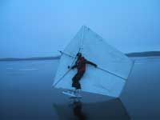-4°C,
vindstilla och gnistrande solsken på Västra Ringsjön. Snön fortfarande cirka dm-djup,
inte vindpackad och ej heller det minsta faststöpt på isen. Åkte en runda med
seglarskrillor, det gick alldeles utmärkt så superläge för powderskrillesegling
förelåg. Om det nu varit någon tillstymmelse till vind då alltså……
Åkte istället längdskidor ett par
varv i spåret jag åkt upp på tisdagen. Kanonföre med bra glid och bedövande vackra
omgivningar med drygt cm- tjock gnistrande rimfrost/snöbeläggning på varenda liten
kvist och vasstrå.
Själv var jag på jakt på Lördagen
medan en varmfront trängde undan vinterkylan. På Lördagsmorgonen var det -18°C medan
temperaturen på Lördagskvällen stigit till +5-6 °C!
Jörgen Åstrand / Å3 SIK
| |